Douze Leçons sur l'Art de la Verrerie - Péligot -
D OUZE L EÇONS sur L' A RT DE LA V ERRERIE par M. E. PELIGOT
MEMBRE DE L'INSTITUT, Professeur au Conservatoire impérial des Arts et Métiers et a l'École Centrale des Arts et Manufactures, etc. EXTRAIT Des Annales du Conservatoire des Arts et Métiers - JANVIER 1862. revu le 17 octobre 2003 Plan : silicates simples et verre soluble - Action de la chaleur sur les verres - Trempe et recuit du verre - Action de l'eau sur les verres - Action des acides et des alcalis - Gravure sur verre - Analyse des verres -
Matières premières employées dans la fabrication des verres [ silice - potasse - soude - chaux - oxyde de plomb ] - fabrication de la poterie [pots, creusets] -
fabrication des différentes sortes de verre : verre à vitre [ procédé des cylindres - étendage des cylindres - verre à vitre en plateau - verres à vitre de couleur - fabrication des glaces [ glaces soufflées - glaces coulées ] - travail mécanique des glaces - prix de revient des glaces - dimensions, défauts, qualités, prix - verre à bouteilles [ fabrication des bouteilles - gobeleterie - verre de Bohême [fabrication - composition ] - fours de fusion - fabrication du cristal - composition du cristal - cristaux moulés - taille des verres et des cristaux - cristaux et verres incolores - verre d'albâtre - verre opale - Email - verre craquelé - verre et cristaux de couleur [ bleu - violet - bleu céleste - vert émeraude - vert bouteille - jaune - rouge et rosé - noir - façon Venise ] - verre rubané - serre-papier en millefiori - aventurine - strass - verre pour optique [ crown-glass - flint-glass ] Préambule
On ne saurait mesurer toute l'importance que prend le verre en alchimie. On pourrait presque en dire, d'ailleurs, que'il s'agit de l'art de la verrerie, pour reprendre le titre de plusieurs ouvrages éponymes sur le sujet. Nous avons vu, aussi, en rédigeant la section sur les vitraux de Bourges
, que l'alchimie était l'art de la peinture sur verre, ou plutôt devrions-nous dire de peinture « dans » verre. Dans le même temps, l'art du potier, à des titres divers, ne peut être ignoré de l'étudiant en Art sacré. Piccolpassi a été évoqué plusieurs fois par Eugène Canseliet et par Fulcanelli. Les verriers n'ont été évoqués par les alchimistes modernes que de façon relativement modérée, même si Fulcanelli dit en substance que l'alchimie est bien l'art de « faire le verre ». Mais c'est d'un verre bien particulier qu'il s'agit : il tient du verre malléable, de la porcelaine, de la gravure sur verre, de la teinture et met en cause des agents chimiques qui doivent être modifiés avant que d'être utile à l'oeuvre. Cette modification, son sens nous en est indiqué par un traité attribué à Albert Le Grand, sans doute apocryphe : le Composé des composés
. On en trouve des échos ailleurs, et notamment dans l'une des gravures de l' Atalanta fugiens , à l' emblème IX
, où Michel Maier assure que le poulet d'Hermogène doit être enclos dans une maison de verre. Dans l'un des traités que nous avons commenté, l'
Enfant Hermaphrodite du Soleil et de la Lune
, nous avons été conduits à souligner l'intérêt des Leçons sur la Verrerie de M. Péligot. Le lecteur les trouvera ici, agrémentées des figures originales et de notes personnelles. Voici quelques notes sur Eugène Péligot, extraites du journal La Nature, daté du 26 avril 1890 :
Eugène Peligot, né à Paris le 24 mars 1811, mort à Paris le 15 avril 1890
(d'après une photographie exécutée vers 1860)
La science française vient de perdre un de ses chimistes les plus éminents en la personne d'Eugène Peligot, qui fut l'élève et le collaborateur de J.-B. Dumas
. Né à Paris le 24 mars 1811, Eugène Peligot, après avoir suivi ses classes au lycée Henri IV, a fait partie en 1829 de la première promotion de l'École centrale des arts et manufactures. Il ne lui fut pas possible d'y terminer ses études parce que son père, administrateur en chef de l'hôpital Saint-Louis, perdit toute sa fortune dans la fondation qu'il venait de faire de l'établissement thermal d'Enghien. En 1832, le jeune Peligot fut admis par J.-B. Dumas danss on laboratoire de l'Ecole polytechnique, et dès cette époque, son avenir scientifique fut assuré. C'est quatre années plus tard, en 1836, que Peligot publiait, en collaboration avec son illustre maître, le mémoire classique Sur l'esprit de bois et sur les divers composés éthérés qui en proviennent. Ce travail, absolument magistral, fait époque dans l'histoire de la chimie organique ; les auteurs, en révélant les propriétés de l'esprit de bois, qu'ils comparent à l'alcool, et qui leur fournit successivement l'éther méthyllique, le sulfate de méthylène, l'acide sulfométhylique, ouvrent la voie aux découvertes des séries alcooliques. En 1835, Eugène Peligot fut nommé professeur de chimie à l'Ecole centrale ; il créa à cette même Ecole le cours de verrerie, celui de chimie analytique et occupa ces diverses chaires prendant trente-cinq années consécutives. En 1846, il succéda à Clément Desormes au Conservatoire des arts et métiers et il fit dans cet établissement un cours de chimie générale qui, jusqu'à ces dernières années, ne cessa jamais d'attirer un auditoire aussi nombreux que sympathique. Il fut chargé du cours de Chimie analytique appliquée à l'agriculture à l'Institut national agronomique. D'une régularité inébranlable et d'une activité de travail peu commune, Eugène Peligot mena toujours de front ses travaux multiples avec autant de zèle que de dévouement à la science. Il a été pendant quarante ans chargé des essais au Laboratoire de la monnaie, en 1846 comme essayeur, en 1848 comme vérificateur, et en 1880 comme directeur des essais. C'est à l'Hôtel des monnaies où il résidait que Peligot a fermé les yeux à la lumière. En 1852, le célèbre chimiste fut élu memebre de l'Académie des sciences, dans la section d'Economie rurale, en remplacement du baron Silvestre. L'oeuvre d'Eugène Peligot comprend les sujets les plus variés. Commencés en 1833, elle se compose de plus de quatre-vingt Mémoires originaux sur des questions de chimie minérale et de chimie organique qui intéressent la science pure, l'industrie, l'hygiène et l'agriculture. Un des travaux les plus importants de l'éminent professeur est celui qu'il exécuta dès 1858 sur la nature et les propriétés chimiques des sucres. Dès son premier Mémoire à ce sujet, Peligot a établi nettement les caractères qui distinguent le sucre ordinaire des glucoses. Il a montré que le premier n'est pas altéré par les liqueurs alcalines, tandis que les autres sont rapidement détruits et transformés en différents produits qu'il a étudiés. Au nombre des composés nouveaux que Peligot a fait connaître, se trouve le sucrate de baryte qui, en raison de sa faible solubilité dans l'eau et de sa facile production, est devenu la base du procédé inventé par Dubrunfaut pour extraire des mélasses la presque totalité du sucre cristallisable qu'elles renferment. C'est aussi à l'habile praticien que l'on doit l'étude approfondie des phénomènes qui résultent de l'action de la chaux sur les dissolutionss sucrées. Ces phénomènes, qui présentent une haute importance au point de vue théorique, offrent également un intérêt pratique considérable en ce qui concerne la fabrication du sucre, la chaux étant, comme on le sait, l'un des agents essentiels de cette grande industrie. Dans un travail sur l'analyse et la composition de la betterave à sucre, exécuté en commun avec Decaisne, les auteurs ont jeté la lumière sur un grand nombre de faits jusque-là peu connus [
notons d'ailleurs que Fulcanelli a insisté plusieurs fois sur la betterave, cf. sections symboles généraux - minéralogistes - voie humide - invention de la photographie - Lux Obnubilata - héraldique et alchimie - compendium pratique - Mercure philosophique - Idée alchimique, IV -
] Ayant analysé cette racine à ses différentes époques de croissance et de maturation, ils ont reconnu qu'il existe des différences de composition fort sensibles entre plusieurs betteraves de la même localité, venues néanmoinsdans des circonstances de sol, de climat, de soins, parfaitement identiques. Ces différences tiennent essentiellement à la nature de la graine, ainsi que Peligot l'a établi beaucoup plus tard. La betterave, qui ne contient que du sucre cristallisable, renferme cette sorte de sucre à toutes les époques de sa végétation. Le développement des principes constituants de cette plante est simultané pendant tout le temps qu'exige son propre développement ; c'est seuleemnt lorsque la betterave est arrivée à sa complète maturité que l'on peut constater une augmentation sensible dans la proportion de la matière sucrée. Peligot, en 1839, entreprit sur la canne à sucre des recherches analogues à celles qu'il avait faites sur la betterave ; il a établi que la canne ne contient que du sucre cristallisable, et que cette plante renferme environ 90 pour 100 de jus associé à une très petite quantité de matières étrangères. La mélasse est le résultat du travail défectueux auquel la canne est soumise dans les pays d'outre-mer. Ces remarquables travaux de Peligot sur la canne à sucre ont permis d'augmenter le rendement qui, dans les colonies, était de 5 pour 100 : il se trouve aujourd'hui plus que doublé. Sans insister davantage sur les recherches de l'habile analyste, relatives à la betterave et à la canne, on peut affirmer que l'industrie sucrière lui doit les plus grands progrès. Nous ne saurions donner ici l'énumération complète des oeuvres du grand chimiste dont nous résumons l'histoire ; nous nous contenterons de dire que Peligot s'est occupé à plusieurs reprises de l'analyse et de la composition des eaux ; on lui doit un procédé de dosage de l'azote des matières organiques, aujourd'hui pratiqué par tous les chimistes ; on lui doit encore des recherches importantes sur les phénomènes chimiques et physiologiques qui se succèdent pendant la vie et la métamorphose du ver à soie ; des études sur la composition des feuilles et particulièrement de celles du mûrier ; des mémoires d'une haute importance sur la répartition de la potasse et de la soude dans les végétaux ; des études sur le chrome et sur une quantité de questions diverses de chimie minérale. En 1847, il isola le métal l'uranium
dont on ne connaissait que l'oxyde, et cette découverte d'un nouveau corps simple eut alors un grand retentissement dans le monde chimique. Peligot, dans le cours de sa belle et laborieuse carrière, se trouve partout où il y a une utile besogne à accomplir : il prit une part active aux travaux des jurys des Expositions nationales et internationales ; membre de la Société nationale d'agriculture, il contribua aussi aux travaux de la Commission internationale du Mètre et des Poids et Mesures. Il s'intéressait vivement aux progrès de la photographie et encourageait tous ceux qui avaient pour but d'étudier sérieusement cet art merveilleux [ cf. la
Vérité sur l'Invention de la photographie
]. En 1844, Eugène Peligot fut nommé chevalier de la Légion d'honneur sur la proposition du Ministre de la marine, en récompense des services rendus aux colonies par ses travaux sur la canne à sucre ; en 1857, il était nommé Officier, en 1878, commandeur, et en 1885, élevé à la dignité de Grand Officier pour couronner
traité de chimie analytique appliquée à l'agriculture, 1883
une belle carrière scientifique de cinquante années d'efforts consécutifs et de nombreux succès. Peligot a laissé dans un traité de chimie analytique l'exposé des méthodes qui lui ont servi pendant le cours de ses longues recherches de laboratoire ; il a publié sous forme de traité spécial un remarquable guide du verrier [cf. infra
]. Comme travailleur, le célèbre chimiste aura accompli son oeuvre pendant une grande partie de notre siècle ; sa vie toujours calme et méthodique fut entièrement consacrée à la science qu'il aimait avec passion, et à sa famille qu'il ne chérissait pas moins. [ d'après Gaston Tissandier, in La Nature
, n° 882 - 26 avril 1890, 18e année - 1er semestre ] Annexe : la
découverte de l'uranium. Au mois d'octobre 1789, une lettre de Crell, insérée dans le Journal de physique
, apprit aux chimistes français que Klaproth venait de découvrir, dans la pech-blende et le glimmer de Saxe, un nouveau demi-métal, qu'il avait nommé uranite, à Uranus, nom donné par Bode à la nouvelle planète découverte par Herschell. Elle annonçait que ce métal était plus difficile à réduire que le manganèse, que sa couleur externe était grise, mais qu'à l'intérieur elle tirait sur le brun clair ; que sa pesanteur spécifique était égale à 6,44, son éclat peu considérable, sa dureté médiocre, que son oxyde donnait, an moyen d'un fondant, une couleur orangée foncée à la porcelaine, etc. La pech-blende, dans laquelle Klaproth venait de découvrir ce nouveau métal, se trouve en Bohême, à Joachimsthal, et dans les montagnes de la Saxe, à Johann-Georgenstadt. [
il n'est pas impossible d'imaginer que Paracelse eut peut-être un sel d'uranium entre les mains, qu'il prit pour une mine de zinc, cf. Trésor de Paracelse et chimie et alchimie
] Induits en erreur par le nom de ce minéral, les minéralogistes le considérèrent comme une mine de zinc, jusqu'à l'époque où Werner jugeant, par sa texture, sa dureté et sa pesanteur spécifique, que ce n'était pas une blende, le rangea parmi les mines de fer. Depuis on soupçonna qu'il contenait du tungstène, et cette conjecture paraissait confirmée par les expériences de quelques minéralogistes allemands, publiées dans le Journal des Mineurs, lorsque Klaproth le soumit à l'analyse. En 1790, la dissertation de Klaproth sur l'uranium fut insérée dans le Journal de physique
. Après avoirsoumis la pech blende aux différents réactifs, et s'être ainsi assuré que les réactions qu'elle donnait indiquaient l'existence d'un corps nouveau, Klaproth résolut d'isoler le métal qu'elle renfermait,
« Les alcalis, dit-il. précipitent en jaune la substance métallique de la pech-blende dissoute dans les acides, ce qui est encore un de ses caractères particuliers...... Voyant que les flux alcalins et vitreux ne pouvaient opérer la réduction de cette substance métallique, j'ai résolu de la traiter par les combustibles, comme l'on fait pour les essais de manganèse. Pour cela j'ai broyé 120 grains d'oxyde jaune avec de l'huile de lin; j'en ai fait une pâte, puis j'ai fait brûler l'huile, dans un tôt, à une douce chaleur. Il est resté 85 grains d'une poudre noire très pesante, que j'ai mise dans un creuset de charbon, et exposée au feu du fourneau de porcelaine. Dans un autre creuset apprêté de même, j'ai mis de l'oxyde de manganèse, au même degré de feu. Les deux creusets étant retirés du fourneau, j'ai trouvé dans le dernier l'oxyde de manganèse parfaitement bien réduit. Dans le premier, j'ai trouvé l'oxyde de la pech-blende sous forme d'une masse noire très lourde, adhérente faiblement ensemble, se laissant écraser facilement en poussière, d'un noir brun, qui avait cependant un peu de brillant métallique.
« j'en ai mis un peu dans l'acide nitrique; la dissolution s'est faite vivement, le mélange s'est échauffé beaucoup, et il s'en est dégagé une grande quantité de gaz nitreux. Ce phénomène m'a convaincu que quoique la masse ne fût pas fondue, il y avait eu pourtant une réduction de l'oxyde, mais que celte substance métallique exigeait, pour se fondre, un degré de feu plus violent que l'oxyde de manganèse.
« Afin de m'assurer si cet oxyde métallique, réduit jusqu'à ce point, ne fondrait peut-être pas plus facilement, j'ai mis le restant dans un creuset de charbon, et l'ai recouvert de borax calciné, après quoi j'ai rempli le restant de poussière de charbon ; j'ai bien luté le couvercle du creuset extérieur qui était
d'argile, et l'ai exposé au plus fort feu de fourneau de porcelaine. Mon attente ne fut pas tout-à-fait trompée. car j'ai obtenu une masse adhérente, qui consistait en petits globules métalliques agglutinés, dont l'adhésion n'était cependant pas forte, car la masse paraissait très poreuse. La couleur de cette ma-
tière métallique était d'un gris foncé ; mais découverte à la lime, elle était brune...... »
Le nom d'uranite, primitivement donné à cette substance métallique par Klaproth, fut ensuite changé par lui en celui d'urane. Quelques années plus tard, Richter, par la calcination à un violent feu de forge d'un mélange d'oxyde d'uranium et de sang de bœuf desséché, obtint un régule aggloméré, mais non fondu, gris d'acier, cassant, présentant à la surface quelques indices de cristallisation en aiguilles, et dont la densité était de 9 environ. Il est peu probable, vu la grande stabilité du protoxyde d'uranium, que Richter ait obtenu, par ce moyen, le métal réduit. Arfwedson, en 1823, montra que l'oxyde vert d'uranium, qu'on regardait alors connue le composé le moins oxygéné de ce métal, pouvait être réduit par l'hydrogène en donnant de l'eau et une poudre brune. Cette poudre brûle à l'air et régénère l'oxyde vert. Arfwedson la regardait comme le radical métallique, et cette opinion fut généralement adoptée jusqu'en 1840, époque à laquelle M. Péligot découvrit un chlorure anhydre dont la composition était incompatible avec les données admises jusqu'alors : 100 parties de ce chlorure fournissaient, en effet, de 108 à 111 parties de ses éléments constituants, ces derniers étant isolés par les procédés ordinaires.
« En présence de ce résultat impossible, dit M. Péligot, on est forcé d'admettre que l'eau, en agissant sur ce corps, est décomposée. En même temps que son hydrogène s'unit au chlore pour former de l'acide chlorhydrique, son oxygène produit avec le radical métallique de ce chlorure un oxyde particulier que l'hydrogène et le charbon ne peuvent pas réduire; c'est cet oxyde qu'on a considéré jusqu'à présent comme étant l'urane métallique, puisque c'est par le charbon ou par l'hydrogène que ce corps a toujours été préparé. »
M. Péligot montra alors que le protochlorure d'uranium, qu'il venait de découvrir, chauffé avec du potassium, donnait une substance métallique très différente de ce qu'on avait pris jusque là pour le métal réduit, à laquelle il donna le nom d'uranium.
« Pour produire le protochlorure d'uranium, dit M. Péligot, on fait passer un courant de chlore bien desséché sur un mélange intime de parties égales d'un oxyde quelconque d'uranium et de charbon.
« Le tube de verre qui contient le mélange doit être peu fusible ; il est placé sur la grille horizontale qui sert pour les analyses organiques ; le mélange en occupe la moitié et se trouve dans la portion la plus rapprochée de l'appareil qui fournit le chlore; il convient d'entourer de clinquant cette portion du tube,
afin de pouvoir la soumettre à une température plus élevée.
« Comme il est presque impossible d'introduire dans ce tube le mélange d'oxyde d'uranium et de charbon dans un état absolu de siccité, parce que son état de division le rend très hygroscopique, on le dessèche dans le tube lui-même, qu'on chauffe doucement sous l'influence d'un faible courant d'air ou de chlore sec ; quand l'eau cesse de se dégager, on élève la température jusqu'au rouge et on accélère le dégagement du chlore; le chlorure d'uranium se produit aussitôt et apparaît sous la forme de vapeurs rouges qui viennent se condenser dans le tube à une petite dislance de la portion chauffée ; on obtient des octaèdres d'une grande régularité, doués d'une sorte d'éclat métallique et d'une couleur noire ou verte, selon qu'ils sont plus ou moins volumineux ; en même temps, il se dégage un mélange d'acide carbonique et d'oxyde de carbone. »
Le chlorure d'uranium a pour composition : Chlore. ...... 37,1 Uranium ...... 62,9
« Les circonstances de la formation du chlorure d'uranium et les résultats de son analyse plaçant désormais ce métal à côté du magnésium, de l'aluminium et des autres métaux terreux, ajoute M. Péligot, l'analogie indiquait la route à suivre pour sa préparation : l'uranium se produit en effet par la décomposition de son chlorure par le potassium.
« On procède comme pour la préparation du magnésium : on chauffe, dans un petit creuset de platine, un mélange de deux parties environ de chlorure d'uranium et d'une partie de potassium ; l'affinité du premier de ces corps pour l'eau, et celle du second pour l'oxygène, obligent à les introduire rapidement
dans le creuset, duquel on assujettit le couvercle au moyen de fils de fer ou de platine.
« Sous l'influence d'une chaleur assez faible, produite par une lampe à alcool, la réaction se détermine brusquement ; elle a lieu avec une si grande intensité, que le creuset tout entier devient incandescent, et qu'une partie des produits se trouve volatilisée ou projetée par la température très élevée qui se développe : il convient, afin de préserver l'opérateur de l'atteinte du potassium enflammé, de placer le petit creuset dans un autre plus grand, et aussi de retirer la lampe à alcool aussitôt que la réaction commence, sauf à chauffer ensuite fortement, soit pour volatiliser l'excès de potassium, soit pour donner, par la fusion du chlorure de ce métal, plus de cohésion à l'uranium qui vient d'être mis en liberté. Il est prudent, en outre, de ne pas opérer sur plus de 8 à 10 grammes de mélange ; autrement on risque de déchirer, par l'explosion violente qui se produit quelquefois, les parois du creuset de platine.
« En traitant par l'eau froide les produits refroidis de cette réaction, le chlorure de potassium se dissout; il se dégage un peu d'hydrogène qui provient de la décomposition de l'eau soit par le potassium, si ce métal a été employé en excès, soit par le sous-chlorure d'uranium si le potassium a réagi d'une manière incomplète; en même temps on obtient l'uranium,
« Ce métal, ainsi préparé, est en partie à l'état de poudre noire, en partie à l'état aggloméré : en détachant avec quelque soin les portions qui adhèrent aux parois du creuset, on obtient des plaques d'un éclat métallique comparable à celui de l'argent ; elles peuvent être limées, et elles sont douées d'une certaine malléabilité; ces portions métalliques ont subi évidemment, pendant Ia réaction, un commencement de fusion. » [extrait de
Histoire de la chimie . Tome second, Histoire des métaux et de leurs principaux composés. Histoire de la chimie organique par Raoul Jagnaux ]
Plusieurs acides minéraux, notamment les acides silicique,
phosphorique et borique, donnent, en se combinant avec quelques oxydes métalliques fusibles, tels que la potasse, la soude, les oxydes de plomb et de bismuth, [ cf. l' humide radical métallique
] des substances dures et cassantes à la température ordinaire, liquides ou molles à une température plus ou moins élevée, transparentes ou translucides, présentant une cassure particulière, lisse et brillante, qu'on appelle cassure vitreuse. Ces corps sont désignés sous le nom générique de verres [ cf. vitraux alchimiques de Bourges ] (
En publiant ces leçons, auxquelles j'ai donné, dans quelques parties, un développement que ne comporte pas l'enseignement oral, je cède au désir qui m'a souvent été exprimé par mes auditeurs. Je ne me fais pas illusion sur les imperfections qu'elles présentent : mais j'ai espéré qu'on me tiendrait compte des difficultés qu'on éprouve à rassembler des documents un peu étendus sur l'industrie verrière, industrie qui vit par la tradition, qui évite la publicité, et sur laquelle, si l'on excepte les articles des Encyclopédies et des Traités de chimie , aucun travail d'ensemble n'a été fait depuis plus d'un siècle et demi. ).
Dans le langage ordinaire, le verre est le résultat de la combinaison de l'acide silicique (la silice ) avec plusieurs des bases suivantes : potasse, soude, chaux, oxyde de plomb, alumine, oxyde de fer. On distingue plusieurs espèces de verres, eu égard à leur mode de fabrication, à leurs usages et à leur composition.
- Le verre de Bohême, qui sert en Allemagne à fabriquer la gobeleterie fine et la gobeleturie commune, est un silicate à base de potasse et de chaux. Il renferme, en outre, comme toutes les autres sortes de verre, une petite quantité d'alumine et d'oxyde de fer empruntée soit au creuset dans lequel il a été fondu, soit aux matières plus ou moins purifiées qu'on a employées pour le produire.
- Dans notre verre à gobeleterie, la potasse est remplacée par la soude, dont le prix est moins élevé. Le verre à vitre est pareillement formé de silicates à base de soude et de chaux.
- Il en est de même du verre à glace.Le verre à bouteille contient, avec la silice, de la soude ou de la potasse, de la chaux, de l'alumine et de l'oxyde de fer.
- Le cristal est un verre à base d'oxyde de plomb et de potasse. En Allemagne, on désigne toutefois sous ce nom le verre de Bohême servant à fabriquer la gobeleterie de luxe.
- Le flint-glass, sorte de verre dense pour l'optique, et le strass, qui sert à imiter le diamant et les pierres précieuses, renferment, dans des proportions différentes, les mêmes éléments que le cristal. [
sur les strass et leur rapport avec la spagyrie, cf. Mercure et surtout voie humide ]
- Les émaux renferment en outre de l'oxyde d'étain ou de l'acide arsénieux, qui leur donnent l'opacité qui les distingue des autres sortes de verres.
- Les verres colorés empruntent leur coloration, qu'on peut varier à l'infini, à divers oxydes métalliques, à quelques métaux, au charbon ou au soufre. [
Marc-Antoine Gaudin, calculateur au Bureau des Longitudes, chercheur génial dans le domaine de la cristallogénie, a pu dire que le cuivre était un véritable Protée, cf. Soufre ]
Les verres, quelle que soit leur nature, ont tous un élément commun, la silice. La proportion de ce corps varie entre 80 et 30 pour 100 de leur poids. La silice est également l'élément essentiel des divers produits
céramiques, dont les usages se rapprochent souvent beaucoup de ceux des produits de l'industrie du verre; mais les procédés de fabrication sont fort différents : tandis que les verres ont tous été travaillés à l'état pâteux, après avoir été complètement liquéfiés par l'action de la chaleur, les poteries, qui ont pour élément essentiel l'argile plus ou moins pure, plus ou moins plastique, reçoivent leurs formes à la température ordinaire; soumises à la cuisson, elles ne changent pas de forme, tout en éprouvant un retrait considérable et en acquérant une certaine dureté. [
le travail de l'alchimiste apparaît comme une sorte de milieu entre l'art du potier et celui du verrier, cf. Piccolpassi : 1 , 2 , 3 , 4 , 5 , 6 , 7 , 8 , 9 , 10 , 11 , 12 , 13
. Ce point est fondamental et l'occulterr evient à passer à côté de l'alchimie positive. Notez que l'Art du potier de Piccolpassi est disponible sur le site hermétisme et alchimie animé par Thierry Ducreux
] Dans cet état, elles sont, en général, plus ou moins perméables aux liquides. C'est par la fusion d'un véritable verre à leur surface, à l'aide d'une nouvelle cuisson, qu'on leur enlève cette perméabilité. Les laitiers, les scories qui se produisent dans l'industrie métallurgique, appartiennent par leur composition à la classe des matières vitreuses. [
on peut comparer les laitiers et les scories au Mercure des Sages et à l'aile de corbeau par laquelle les alchimistes signalent la dissolution
] Le rôle essentiel que joue la silice dans l'industrie du verre m'oblige à rappeler sommairement ses principales propriétés. L'acide silicique ou la silice se présente tantôt à l'état cristallisé, comme dans le quartz ou le cristal de roche, tantôt à l'état cristallin, comme dans le grès et le sable quartzeux, tantôt à l'état amorphe. C'est une des substances naturelles les plus abondantes, soit à l'état libre, soit à l'état de combinaison avec les différentes bases. Elle est insoluble dans l'eau; néanmoins, prise
à l'état naissant, c'est-à-dire séparée par un acide d'une dissolution étendue de silicate alcalin, elle reste dissoute dans le liquide, à la faveur de l'acide en excès qu'il contient. La plupart des eaux naturelles en renferment une petite quantité, quelques-unes une proportion assez considérable. Les eaux des Geisers d'Islande, qui sortent de terre à la température de 100°, laissent en s'évaporant des dépôts de silice cristallisée que les minéralogistes désignent sous le nom de geysérite. [
la geysérite peut être considérée comme le prototype de la source que le cheval Pégase fait soudre de la Terre en la frappant de son sabot
] C'est sous cette forme ou plutôt sous celle de silicate alcalin que la silice s'introduit dans les plantes; répartie inégalement dans les différentes parties des végétaux, elle entre pour une forte part dans le poids des substances minérales que fournit leur incinération ; les cendres des tiges des graminées en contiennent une forte proportion. Ainsi celles de la paille du froment contiennent 67 de silice; celles de la canne à sucre 68 pour 100 (
Ces cendres, qui contiennent, en outre, pour 100 parties 22 de potasse et 10 de chaux, fondues sans addition, donneraient du verre. (Berthier.) -
voici par parenthèse une illustration de ce que les alchimistes entendent comme la partie végétale de leur Pierre ). En évaporant à siccité, en
présence d'un acide, le liquide qui renferme la silice en dissolution, celle-ci devient entièrement insoluble par suite d'une légère calcination. C'est ainsi qu'on procède pour doser ce corps lorsqu'on fait l'analyse d'un silicate. Celui-ci est fondu avec trois à quatre fois son poids de carbonate de soude, puis décomposé par l'acide chlorhydrique étendu d'eau ; on évapore la liqueur à siccité. Le résidu, repris par l'eau et l'acide, fournit toute la silice à l'état insoluble. La silice résiste à l'action de la plupart des agents chimiques. Seul, parmi les acides, l'acide fluorhydrique la décompose. Aussi les verres, les poteries, tous les silicates sont attaqués, corrodés, dissous quand on les met en contact avec cet acide : la silice disparaît totalement, puisqu'en présence de l'acide flurohydrique elle donne naissance à de l'eau et à un corps gazeux, le fluorure de silicium. Cet acide est souvent employé pour analyser les silicates. Pour fondre la silice, il faut disposer d'une température beaucoup plus élevée que celle qu'on peut produire dans nos forges et dans nos fourneaux les mieux construits. On peut donc ranger ce corps au nombre des substances infusibles. Néanmoins cette
infusibilité n'est que relative ; la chaleur énorme qui résulte de la combinaison de l'hydrogène avec l'oxygène a permis à M. Gaudin
de fondre cette substance au moyen du chalumeau à gaz, d'étirer en fils le grès de nos pavés, de constater même la volatilité de ce corps qu'on croyait être fixe et réfractaire par excellence. [
sur Marc-Antoine Gaudin, voyez aussi la section sur la
Vérité sur l'Invention de la photographie ]
Les silicates alcalins dissous dans l'eau sont décomposés par tous les acides, même par l'acide carbonique ; mais si l'acide silicique, soumis aux procédés de la voie humide, est un des acides les plus faibles, il devient l'un des plus puissants quand on met en œuvre les procédés de la voie sèche. Il décompose, il déplace tous les acides volatils à des températures plus ou moins élevées. Les sulfates eux-mêmes sont ainsi transformés en silicates sous l'influence d'un feu violent. Par la voie sèche, la silice se combine avec toutes les bases : celles qui sont fusibles lui communiquent la propriété de donner des composés fusibles, vitreux, d'autant plus fusibles que la base est en proportion plus considérable. Tels sont les silicates de potasse, de soude, de plomb. [
c'est-à-dire l'alkali végétal, fixe et le minium
] Les bases infusibles, comme la chaux, la magnésie, l'alumine, donnent des silicates infusibles : mais ceux-ci mélangés avec les silicates de potasse, de soude ou de plomb, fournissent des produits qui fondent aux températures qui conviennent le mieux pour le travail du verrier : ce sont ces mélanges qui constituent les verres proprement dits. Il y a d'ailleurs une importante remarque à faire en ce qui concerne la fusibilité des silicates multiples. Si l'on chauffe un mélange de deux silicates qui, pris séparément, sont infusibles, on obtient un produit fusible, un verre. Je mets sous vos yeux une belle glace fabriquée à titre d'essai et d'étude dans la glacerie de Saint-Gobain, avec un mélange de sable, de chaux éteinte et de carbonate de baryte. Soumise à l'analyse, elle a donné la composition suivante : Silice.. .......... ... . ...... 46.5 Baryle. ...................... 39.2 Chaux. ................ ...... 14.3
Elle provient donc d'un mélange ou d'une combinaison parfaitement fusible de deux silicates qui, étant pris séparément, auraient fourni des composés entièrement réfractaires. Ces faits ont pour le verrier une grande signification. Ils lui montrent la nécessité d'introduire plusieurs bases dans sa composition. On désigne sous ce nom le mélange des matières premières qui servent à faire le verre. Ils font voir que, pour produire un verre aussi bon marché que possible, exigeant le moins de
combustible, comme le verre à bouteille, il convient d'associer un grand nombre de bases, la potasse, la soude, la chaux, la magnésie, l'alumine et l'oxyde de fer. [
ce n'est pas autrement que procède notre Artiste ; il est de toute nécessité qu'il introduise, lui aussi, plusieurs base, afin de rendre sa composition bien fusible et fluide comme de l'eau
] D'un autre côté, quand il s'agit de fabriquer les produits les plus réfractaires, tels que les briques destinées à construire les fours, les creusets dans lesquels le verre doit être fondu, le choix des silicates simples est d'une extrême importance : ainsi les argiles réfractaires doivent être formées de silice et d'alumine, aussi exemptes que possible, non-seulement d'alcalis, mais de chaux et d'oxyde de fer.
Nous venons d'établir que les verres sont toujours des silicates à
plusieurs bases. Doit-on les envisager comme des mélanges ou bien
comme des combinaisons ? cela dépend évidemment des proportions dans lesquelles les éléments se trouvent associés. Mais doit-on chercher à unir les bases avec la silice dans des rapports atomiques, de manière à produire de préférence des combinaisons ? A mon avis, on doit chercher à éviter les rapports atomiques. Les silicates définis, notamment le silicate de chaux, sont cristallisables. [
ne perdons pas de vue que l'alchimie consiste à produire des substances cristallisées à partir de matières amorphes
] Heureusement, ceux de potasse, de soude et de plomb ne le sont pas et s'opposent même à la cristallisation des silicates terreux avec lesquels ils sont mélangés ou combinés. Cette propriété est fort importante, car c'est sur elle que repose tout le travail du verre. Dans quelques cas particuliers seulement on voit apparaître la cristallisation ; elle implique la production de composés chimiques définis. Ce phénomène, qu'on
cherche à éviter, est connu des verriers sous le nom de dévitrification. Nous y reviendrons. [
le role de la dévitrification est remarquable : elle mène l'étudiant sur le bon chemin, celui qui le conduit à Compostelle, cf. réincrudation
] Une fois fondus à la température du rouge blanc, les silicates multiples qui donnent naissance aux verres tout en offrant une grande dureté quand ils sont refroidis, acquièrent au rouge cerise, par un abaissement de température gradué, [
la gradation mesurée de l'abaissement de la température a été l'un des secrets de l'alchimie des plus réservés
] une très-grande plasticité : de l'état liquide , ils passent à l'état solide en prenant tous les degrés intermédiaires de mollesse. Aussi, de même que la cire sous la main du modeleur, le verre reçoit et conserve toutes les formes qu'on lui donne. Par le soufflage, on en fait des cylindres, des ballons, des objets de gobeleterie de toute nature; le laminage le transforme en feuilles qui servent à faire les glaces ; on le met au moule pour fabriquer les bouteilles ; on en fait des tubes qui, ramollis à la lampe d'émailleur, donnent des fils d'une finesse extrême, qu'on travaille comme le le lin [
matière citée par plusieurs auteurs comme amorce d'allégories : 1 , 2 , 3 , 4 , 5 , 6 , 7 , 8 , 9 , 10
] et la soie, et dont on a fait des aigrettes, de brillants tissus et même des perruques. SILICATES SIMPLES. VERRES SOLUBLES.
Avant d'entrer dans les détails de la fabrication des différents verres, nous étudierons leurs propriétés générales, et particulièrement l'action que la chaleur, l'eau et les agents chimiques exercent sur eux. On recherche dans le verre, comme qualités essentielles, la transparence, une parfaite limpidité, et l'absence de toute coloration pour le verre blanc. Ceux qui proviennent d'une bonne fabrication résistent, en outre, à l'humidité, à l'eau froide, à l'eau bouillante, aux acides (sauf à l'acide fluorhydrique), aux dissolutions alcalines. L'expérience, d'accord avec la théorie, démontre que les verres les plus durs, les moins fusibles, ceux
qui, par conséquent, contiennent le plus de silice et le moins de fondants alcalins, remplissent le mieux ces diverses conditions. Malheureusement leur prix de revient est en raison directe de leur qualité, car leur fusion et leur travail exigent une plus grande quantité de combustible. Les verres riches en fondants sont attaquables par l'eau. On désigne sous le nom de verres solubles, les silicates simples de potasse ou de soude plus ou moins riches en alcalis. Comme la
connaissance de leurs propriétés explique parfaitement celles de certaines espèces de verres, je dirai quelques mots de ces composés, qui ont donné lieu, d'ailleurs, depuis quelques années, à des applications industrielles dignes d'intérêt. Un mélange de 1 partie de silice (sable) et de 5 parties de carbonate de potasse fond facilement au rouge cerise. La température du rouge blanc est nécessaire pour obtenir le même résultat avec 3 parties de silice et 1 partie de carbonate de potasse; 5 parties de silice et 1 de carbonate alcalin donnent un mélange non fusible, qui se fritte seulement quand on le soumet au
feu de forge. Ces silicates sont plus ou moins solubles dans l'eau. Celui qui renferme le plus d'alcali se dissout facilement dans l'eau froide. C'est sa dissolution qu'on connaît depuis longtemps sous le nom de liqueur des cailloux. Celle-ci, traitée par un acide, fait effervescence à cause du carbonate de potasse qu'elle renferme en excès, et fournit un précipité gélatineux de silice hydratée. Le verre soluble a été étudié en 1828 par un chimiste de Munich, Fuchs, qui en a conseillé l'emploi pour combattre l'inflammabilité des bois, des toiles, etc. En 1841, M. Kuhlmann [ cf. Mercure de nature et voie humide
] l'a appliqué à la silicatisation des pierres. On le prépare, d'après Fuchs, en chauffant dans un creuset,
pendant cinq à six heures, un mélange de 18 parties de quartz pulvérisé, 10 parties de carbonate de potasse et 1 partie de charbon. Quand le verre est bien fondu, on le coule; ou bien on le cueille dans le creuset avec une poche en fer. Le produit vitreux qu'on obtient ainsi offre l'aspect d'un verre ordinaire; il est ordinairement un peu jaunâtre. On le pulvérise avant de le dissoudre dans l'eau bouillante. M. Kulmann obtient un produit analogue en chauffant, pendant quelques heures, dans une chaudière en fer, sous une pression de 8 à 6 atmosphères, un mélange de sable et de lessive de potasse caustique. Dans l'intérieur de la chaudière se trouve un agitateur en fer. On laisse refroidir le liquide jusqu'à lOO°, on le soutire, quand il s'est éclairci par le repos, et on le concentre jusqu'à ce que sa densité soit égale à 1.25. Ou bien on l'évapore à siccité dans une chaudière également en fer. On sait que ce
métal n'est pas attaqué par les liqueurs alcalines. Le verre soluble contient environt 65 de silice et 38 de potasse. Il est soluble dans l'eau bouillante, tandis que l'eau froide ne le dissout pas sensiblement. Sa dissolution est décomposée par tous les acides, par l'acide carbonique lui-même ; elle est comme coagulée par l'addition d'un sel alcalin.
Mélangée avec des substances en poudre, cette dissolution est collante et agglutinative ; c'est une espèce de colle forte minérale. [
on peut y voir un prototype du Mercure, envisagé comme Aimant, par rapport à l'Acier, cf. Matière
] Dans l'origine, on a employé le verre soluble pour rendre le bois et les étoffes ininflammables; on y ajoutait de l'argile sèche pulvérisée, de la craie, de la litharge, de l'ocre rouge, etc. On a dit que les bois qui sont entrés dans la construction du grand théâtre de Munich avaient reçu cette préparation; mais je tiens de M. Fuchs lui-même qu'on a eu, en effet, le projet de faire cette application, mais qu'on y a renoncé, à cause de la dépense qu'elle eut entraînée. Une étoffe, même très-fine, comme la gaze ou la mousseline, plongée dans une dissolution étendue de silicate de potasse et séchée, perd la propriété de brûler avec flamme : la matière organique, enveloppée d'un réseau de substance minérale fusible, noircit et se carbonise comme si elle était chauffée dans une cornue à l'abri du contact de l'air; mais elle ne s'enflamme pas. On comprend, par suite, l'intérêt que présenterait l'usage d'un pareil préservatif contre l'incendie. Mais, sans parler de l'insouciance qu'on a généralement pour se garantir d'un danger éventuel, cet emploi présente plusieurs inconvénients : la réaction alcaline du verre soluble altère souvent la couleur des tissus ou des peintures, et, comme cette substance est toujours un peu déliquescente, ceux-ci, bien que sèches, attirent l'humidité de l'air, restent plus ou moins humides, et retiennent opiniâtrement la poussière. Aussi, après des essais assez nombreux, a-t-on dû renoncer à son emploi pour préserver de l'incendie les décors de théâtre, les tentures, les tissus pour robes, etc. On peut d'ailleurs la remplacer par diverses substances agissant de la même façon, notamment par une dissolution de parties égales de phosphate d'ammoniaque et de sel ammoniac. M. Kuhlmann a fait depuis une vingtaine d'années une application plus heureuse du silicate de potasse ; je veux parler de la silicatisation des pierres calcaires. Lorsqu'on plonge pendant quelques jours un morceau de craie dans une dissolution moyennement concentrée de cette substance, qu'on l'expose à l'air, qu'on l'introduit dans une dissolution plus étendue et qu'on le sèche, la craie devient presque aussi dure que le marbre; le calcaire, ainsi silicatisé, peut recevoir par le travail un beau poli; immergé dans l'eau, il conserve la cohésion qu'il a acquise. [
l'étudiant devra se souvenir de cette expérience, car le calcaire et le sel d'Ammon sont de proches cousins - sur Kuhlmann, cf. Mercure naturel et voie humide
] La théorie de cette opération n'est pas encore bien établie. D'après M. Kuhlmann, il y aurait, dans cette circonstance, formation de silicate de chaux; d'après Fuchs, le carbonate de chaux ne serait pas décomposé; par la dessiccation, ce sel se combinerait avec le silicate de potasse et donnerait naissance à un composé dur et inattaquable par l'eau. On peut admettre avec plus de vraiseniblance, à mon avis, que sous l'influence de l'acide carbonique de l'air, il se produit dans les pores du calcaire un dépôt de silice qui durcit en se desséchant, et qui donne aux matériaux poreux un nouvel état d'aggrégation. Quant au carbonate de potasse qui se produirait parallèlement, il resterait emprisonné dans la pierre. Il ne paraît pas que sa présence ait nui jusqu'à présent à la durée des matériaux qu'on a soumis à la silicatisation. L'altération plus ou moins rapide des matériaux de construction est en raison de leur porosité. Sous l'influence des gelées, des végétations cryptogamiques, de l'eau pluviale même qui agit par l'acide carbonique qu'elle renferme, les pierres calcaires se délitent, se fendillent, se creusent à la longue. On obvie à ces altérations en les imprégnant d'une dissolution de silicate de potasse. Il est essentiel d'opérer sur des pierres très sèches, et par un temps sec et chaud. D'après M. Rochas, qui depuis 1852 a exécuté avec succès de nombreux travaux de cette nature, notamment à Notre-Dame de Paris, [ cf. Gobineau de Montluisant
] au Louvre, à la cathédrale de Chartres, etc., il convient de laver d'abord les bâtiments à l'eau et à la brosse : s'il s'agit de sculptures délicates, on les lave à l'eau avec une pompe lançante. Quand les pierres sont sèches, on les asperge avec la dissolution de silicate en se servant de la même pompe; ces aspersions sont continuées pendant trois à quatre jours, jusqu'à ce que la pierre se recouvre d'un léger enduit gélatineux. L'état de concentration de la dissolution varie avec la nature des matériaux. Pour les pierres dures, tels que les grès, la roche, le liais, etc., elle doit marquer 7 à 9 degrés au pèse-sel de Beaumé; pour les pierres tendres à gros grains et à pores ouverts, 5 à 7 degrés; pour les calcaires tendres à pâte molle, 6 à 7 degrés : on termine, d'ailleurs, l'opération avec un liquide plus étendu, d'une densité de 3 à 4 degrés seulement. M. Kuhlmann fait avec le silicate de potasse des peintures dans lesquelles ce sel remplace les huiles et les essences ordinairement en usage. Avec une dissolution concentrée, on obtient immédiatement la complète solidification de ces mélanges qui présentent le grand avantage d'être absolument sans
odeur. La base de celte peinture est le sulfate de baryte artificiel; les
principales matières colorantes, qui doivent être choisies parmi celles que le silicate de potasse n'altère pas, sont le vermillon, l'outremer, le sulfure de cadmium, les ocres, les oxydes de manganèse et l'oxyde vert de chrome. La céruse et le blanc de zinc sont exclus de ce mode de peinture; ils durcissent immédiatement quand on vient à les mélanger avec le silicate de potasse; ils sont remplacés avec une grande économie par le sulfate de baryte. En présence des nombreux inconvénients que présente la peinture ordinaire à la céruse, à l'huile et à l'essence, on doit désirer que les procédés préconisés par M. Kulmann se vulgarisent et deviennent d'un emploi général.
ACTION DE LA CHALEUR SUR LES VERRES. DEVITRIFICATION. [ cf. sur ce chapitre notre réincrudation ]
Tous les verres sont fusibles entre la température du rouge clair et celle du rouge blanc. Ils se transforment en un produit homogène, transparent, d'autant plus liquide que la température est plus élevée, devenant pâteux par un abaissement de température, puis dur et cassant quand il est refroidi. Parfois le verre, maintenu longtemps à une température élevée, change d'état; il perd sa transparence, il devient opaque. Il subit cette transformation tout en conservant la forme qu'il a reçue. Ce curieux phénomène est connu sous le nom de dévitrification. Il a été étudié en 1727 par Réaumur, qui, en maintenant pendant douze heures dans un four à porcelaine des objets en verre enterrés dans des pots remplis de sable et de gypse, transformait le verre en une substance opaque, assez dure pour faire feu au briquet, ayant l'aspect de la porcelaine blanche. De là le nom de porcelaine de Réaumur, qu'on a donné à ce produit. A diverses époques, on a vainement cherché à introduire dans l'industrie des objets en verre dévitrifié; il est difficile, en effet, de ne pas déformer les pièces qu'on soumet ainsi à l'action d'une température élevée longtemps prolongée. Cette opération entraîne d'ailleurs une grande dépense de combustible. On avait d'abord pensé que cette transformation était due à la formation de silicates définis, se produisant au sein delà masse vitreuse soit par une sorte de liqualion, soit par la volatilisation d'une partie de l'alcali, ou par l'absorption de celui-ci par le milieu dans lequel elle est placée. Le verre prend, en effet, en se dévitritiant, un aspect cristallin, fibreux, très-apparent. [
c'est la première trace du travail alchimique ; cet aspect cristallin et fibreux a été signalé par Fulcanelli, à propos des métaux qui deviennent cassants à force d'usure, cf. Soufre
] Mais M. Pelouze a établi que le verre dévitrifié [ cf. section sur la réincrudation
] offre exactement la même composition que le verre transparent qui lui a donné naissance. Un
morceau de glace de Saint-Gobain, chauffé pendant vingt-quatre à quarante-huit heures sur la sole d'un four à recuire, ne subit aucun changement de poids ; par la fusion, qui ne paraît pas exiger une température plus élevée, cette glace donne un verre transparent, dont la composition reste toujours la même. Le verre à glace, ainsi dévitrifié, est moins cassant que le verre ordinaire qu'il raye facilement; le diamant ne le coupe plus; il a une texture fibreuse très-marquée. Il conduit beaucoup mieux, l'électricité. [
tous ces éléments indiquent que la matière a subi déjà une métamorphose profonde ; la stibine des Sages n'est pas loin - rappel : stibeuw
: suivre à la trace, comme le fait le vieillard dans l' emblème XLII de l' Atalanta fugiens
] Tous les verres, d'après M. Pelouze, peuvent être dévitrifiés ; le cristal lui-même subit cette modification, mais bien plus difficilement que les autres verres ; sa cassure devient lisse, elle n'est pas fibreuse; les verres à base de potasse se dévitrifient d'ailleurs beaucoup moins facilement que ceux à base de soude. Le silicate de soude ( 3 SiO3 NaO
) est celui qui se dévitrifie le plus facilement; il devient opalin par un simple recuit. La dévitrification est rendue plus prompte et plus facile par le contact du verre en poudre mêlé avec quelques centièmes de son poids de sable, et même par l'intervention du verre pulvérisé. [ intervention du sel d'Ammon
] Le verre à vitre et le verre à bouteille sont surtout d'une dévitrification très-facile. Cette circonstance oblige à travailler ces sortes de verres aussi rapidement que possible; autrement, avant que le souffleur ait utilisé toute la matière fondue dans son creuset, le verre perd une partie de sa transparence, devient galeux; dans cet état, il est impossible de le travailler. On trouve très-souvent dans le fond des creusets des portions de verre dévitrifié, tantôt opaques comme de la porcelaine, tantôt sous forme de mamelons opaques, emprisonnés dans la masse vitreuse, tantôt sous forme de prismes isolés ou réunis en étoiles. [
déjà, rien que par ce travail sommaire, l'Artiste voit déjà l'étoile signalée par tant d'alchimistes et qui n'a, bien sûr, rien à voir avec l'étoile qui apparaît lors de la formation du régule d'antimoine
] Les figures ci-jointes donnent la reproduction exacte du verre dévitrifié en mamelons. FIGURE I Trempe et recuit du verre . — Le verre, étant un corps à la fois
mauvais conducteur de la chaleur et très-fragile, éclate immédiatement quand, étant chaud, on le soumet à un brusque refroidissement. Tous les objets en verre, quel que soit leur mode de fabrication, étant toujours le résultat d'un travail très-rapide, et étant soumis à un refroidissement brusque par l'air ambiant, sont tellement cassants, qu'ils ne seraient propres à aucun usage si l'on ne corrigeait ce défaut par une opération ultérieure, le recuit, qu'on fait subir à toutes les pièces fabriquées. Dans ce but, on dépose ces pièces aussitôt qu'elles sont terminées, et encore rouges, dans une longue galerie chauffée par la chaleur perdue, et on les fait cheminer de manière que leur refroidissement se fasse très-lentement, ou bien encore on les chauffe de nouveau au rouge sombre dans un four spécial, dont on bouche les ouvertures, de manière à obtenir le môme résultat. [
là encore, les textes insistent bien sur la nécessité d'une diminution très progressive de la température ; l'Artiste doit ici tourner la deuxième roue de son « feu de roue » ; Fulcanelli a donné un bas-relief
du portail central de Notre-Dame, comme consacré à ce sujet
] Le recuit est d'autant, plus difficile à obtenir, et doit être d'autant plus soigné, que les pièces de verre sont plus épaisses et plus volumineuses. C'est à un recuit insuffisant qu'il faut attribuer la casse si fréquente des verres de lampe, surtout quand on les emploie pour la première fois. Au moment de la solidification d'une pièce de verre un peu épaisse, les parties qui la composent éprouvent une contraction inégale; les parties extérieures sont déjà solidifiées, quand la partie interne est encore molle; de la un état d'équilibre instable qui se révèle fréquemment par la rupture de la pièce, soit par un abaissement de température, soit par un choc. On désigne dans les verreries, sous le nom de fioles d'épreuve, des pièces soufflées de verre épais, destinées à reconnaître l'état d'affinage du verre dont on va commencer le travail. Ces pièces, abandonnées loin des fours à un refroidissement brusque, sont tellement fragiles, que le plus petit caillou projeté dans leur intérieur suffit pour les faire éclater; un léger changement de température peut aussi déterminer leur rupture, surtout quand elles sont de confection toute récente. FIGURE II
Les larmes bataviques (fig. 2) présentent au plus haut degré ce
caractère de fragilité que le verre acquiert par la trempe. Ce sont des gouttes de verre terminées par une pointe déliée qu'on produit en laissant tomber du verre très-liquide dans un vase plein d'eau froide.
La partie extérieure de ces larmes est déjà solidifiée, quand la partie intérieure est encore à une température rouge ; celle-ci, une fois refroidie, se trouve dans un grand état de tension, et exerce sur l'enveloppe un effort considérable. Vient-on à détruire la solidarité établie entre toutes les particules du verre, en entamant le verre sur un point quelconque, en cassant par exemple la fine queue de la larme, toute la masse éclate avec bruit et se réduit en poussière. Quand le verre n'a pas été recuit, on le fend aisément en lui faisant subir un changement brusque de température. Les ouvriers mettent à chaque instant cette propriété à profit, pour séparer de leur canne les objets soufflés, pour fendre les mandions de verre, pour détacher le verre qui adhère à leurs outils, etc.; il leur suffit de toucher le verre avec un morceau de fer froid au point où ils veulent déterminer sa rupture. Lorsqu'il a subi le recuit, s'il est déjà fêlé sur un point, on continue la fente, et on la dirige à volonté, en chauffant le verre à une petite distance de celle-ci avec un fer rouge, ou mieux avec le charbon à couper le verre. D'après Berzélius, on prépare ce charbon, dont on se sert fréquemment dans les laboratoires pour utiliser les matras de verre fêlés, etc., avec une pâte composée des matières suivantes :
5 parties gomme arabique dans 8 parties d'eau.
2 — gomme adragante dans 12 parlies d'eau.
1 — storax calamite dans 3 parlies ½ d'alcool.
1 — Benjoin dissous dans 2 parties d'alcool. 12 à 14 parties de charbon en poudre.
Le mélange étant bien homogène, on en fait de petits cylindres
qu'on laisse sécher lentement. Ce charbon, une fois allumé, continue à brûler, sans s'éteindre, quand on souffle dessus. On obtient le même résultat avec du fusain trempé dans une dissolution d'azotate de plomb, et séché; ou bien, avec de simples règles en bois blanc qu'on fait bouillir avec de l'eau chargée d'azotate de potasse. ACTION DE L'EAU SUR LES VERRES.
Les verres sont des mélanges ou des combinaisons de deux silicates au moins : un silicate alcalin, et un silicate terreux ou plombeux. [
remarquez que ce Mixte est formé de deux parts de Mercure ; seules les proportions inadéquates l'empèchent de pouvoir progresser jusqu'à l'état voulu
] Le premier serait plus ou moins soluble ou attaquable par l'eau, s'il était seul ; associé à l'autre, il n'est soluble qu'autant qu'il existe en quantité prédominante. Tous les objets en verre qu'on fabrique aujourd'hui résistent à l'action de l'eau froide. Mais il n'en a pas toujours été ainsi. Il n'était pas rare de rencontrer, autrefois, des gobelets qui se ternissaient par suite de l'humidité qu'ils empruntaient à l'air, et même qui s'emplissaient, à la longue, d'une dissolution concentrée de carbonate de potasse. On sait que ce sel est très-avide d'eau et déliquescent. Ces verres étaient le résultat d'une fabrication défectueuse, dans laquelle, pour économiser le combustible ou pour rendre le travail plus prompt et plus facile, on exagérait la dose de fondant alcalin. La plupart des objets en verre dont la fabrication remonte à une époque reculée, ont subi, de la part du temps et de l'humidité, une altération très-marquée. Les lacrymatoires, les fioles,
les urnes, tous les verres antiques qu'on trouve dans les tombeaux des anciens Romains et des Gaulois, présentent un aspect irisé, chatoyant, nacré, avec des reflets parfois très brillants, comme ceux des ailes de quelques espèces de papillons. Il en est de même des carreaux de vitre de fabrication plus moderne qui existent aux fenêtres des étables, des écuries, c'est-à-dire de locaux exposés tout à la fois à une humidité persistante et à une température assez élevée. Les écailles irisées qu'on en détache facilement par un léger frottement sont un mélange de silice et de silicates terreux : le silicate alcalin a disparu. Ce dédoublement est analogue à celui qu'a subi le feldspath (silicate
de potasse et d'alumine) lors de sa transformation en kaolin. [ on touche ici à la préparation du SEL
] Les verres fabriqués en vue des besoins de l'optique, le ftint-glass et le crown-glass, qui exigent une transparence, une limpidité exceptionnelles, contiennent souvent une trop forte proportion d'alcali qui les rend humides'à la surface, et qui, à la longue, amène l'altération des formes qu'ils ont reçues et leur ôte leur éclat. Des disques de crown-glass, empilés les uns sur les autres, se soudent quelquefois très solidement les uns aux autres, par suite du silicate de soude, qui attire l'humidité et détermine l'adhérence de ces objets. Les glaces coulées sont loin d'être toutes exemptes de cette cause d'altération. On trouvait dans le commerce, il y a une quinzaine d'années, beaucoup de glaces qui se recouvraient de petits cristaux aiguillés de carbonate de soude. Ces glaces avaient l'inconvénient de ressuer. [
les alchimistes insistent sur la nécessité de débarasser leur Rebis de cette « hydropisie », c'est-à-dire de cet excès d'eau ; mais naturellement, il ne s'agit pas là d'eau ordinaire
] Les glaces anglaises qui figuraient à l'Exposition de Londres de 1851 offraient toutes ce défaut d'une manière très-marquée, malgré la précaution qu'on avait de les nettoyer fréquemment. Aujourd'hui même il est rare de rencontrer une glace, exposée dans un endroit humide, qui ne bleuisse pas un papier rouge de tournesol qu'on promène mouillé sur sa surface. Si l'eau froide a peu d'action sur les objets de gobeleterie qu'on fabrique aujourd'hui, il n'en est pas de même de l'eau bouillante. Les matras en verre dans lesquels on fait chauffer l'eau dans nos laboratoires, se dépolissent assez rapidement, par suite de la dissolution partielle du silicate alcalin. Il y a moins d'un siècle, un chimiste ayant prétendu que l'eau, par une distillation répétée un grand nombre de fois, se changeait en terre, Lavoisier soumit à des distillations et à des condensations successives
la même eau dans un alambic en verre, et constata, à la suite d'une expérience qui ne dura pas moins de cent un jours, que ce vase avait perdu environ 1 gramme de son poids, et que le résidu fourni par l'évaporation de l'eau qu'il renfermait était fortement alcalin, par suite de l'altération que le verre avait subie. [
cette légende, que l'eau se transforme en terre, ne prenait pas en compte la matière même du contenant ; Geber avait, dit-on, soumis de l'eau à plus de 700 distillations successives : l'eau était devenue blanche par suite de la dissolution de la silice du verre
] Malgré les progrès réalisés dans l'art de la verrerie, si la même expérience était faite aujourd'hui, elle donnerait encore le même résultat. Le verre en poudre est surtout très-facilement altéré par
l'eau chaude. Un chimiste anglais, Griffiths, a retiré 7 p. 100 de
potasse d'un échantillon de cristal pulvérisé qu'il a fait bouillir avec de l'eau pendant plusieurs semaines. M. Pelouze a montré que du verre blanc porphyrisé, formé pour 100 parties de : Silice. . .............. 72 Soude. ..... .... ..... 12.5 Chaux. ................ 15.5
perd 10 pour 100 de son poids, par suite d'une simple ébullition avec l'eau. Un autre verre plus alcalin, renfermant : Silice. .......... ..... 77.3 Soude. ........... .... 16.3 Chaux. ................ 6.4
a subi dans les mêmes conditions une altération si profonde, que 34 parties de ce verre sur 100 ont été détruites. M. Pelouze a obtenu ainsi une dissolution de silicate de soude et un mélange insoluble de silice et de verre non encore altéré. Toutes les sortes de verres en poudre absorbent peu à peu l'acide carbonique de l'air et font effervescence quand on les met en contact avec un acide. Tous bleuissent, en poudre fine, le papier rouge de tournesol. Bouillis avec une dissolution de sulfate de chaux, ils donnent du sulfate de soude qui se dissout et du sulfate de chaux. (M. Pelouze.) Action des acides et des alcalis
. Les verres qui sont attaqués par l'eau sont à plus forte raison attaqués par les acides, même par les acides faibles et dilués. Le verre pulvérisé est très-altérable par l'acide chlorhydrique
étendu d'eau, à chaud et même à la température ordinaire. Il en est de même du cristal en poudre qui donne immédiatement une liqueur qui, contenant du plomb, noircit par l'addition de l'acide sulfhydrique. (M. Pelouze.) Parmi les différentes espèces de verre, le verre à bouteille est celui qui résiste le moins à l'action des acides. La nécessité de le produire au meilleur marché possible oblige à y introduire une forte proportion de bases; aussi la plupart des bouteilles sont attaquées par les acides. Introduisez de l'acide sulfurique concentré dans une bouteille ordinaire, et après un temps plus ou moins long, vous verrez presque toujours s'y développer des concrétions mamelonnées de sulfate de chaux, en même temps que l'alumine, le fer et l'alcali du verre se dissoudront dans l'acide, et que la silice se déposera sous forme de gelée. Peu de bouteilles résistent à cette épreuve; beaucoup sont attaquées par les acides minéraux concentrés et résistent à l'action des acides très-dilués. Il n'est pas rare d'en rencontrer que le bitartrate de potasse contenu dans le vin attaque d'une manière sensible. La silice et le tartrate de chaux se déposent; le vin prend en même temps une
saveur d'encre marquée, par suite de la dissolution de l'alumine et du fer : aussi le vin se trouble et se décolore. [
on n'est pas loin de certaines propriétés du vase de nature ; n'oublions pas que la plupart des expériences que nous livrent les Adeptes, pratiquées par la voie sèche, sont décrites comme si elles étaient pratiquées par la voie humide ]
Quand la qualité de la bouteille est meilleure, ces effets se produisent encore à la longue, et je suis disposé à croire que les modifications que le vin subit quand on le conserve longtemps en bouteilles, quand il vieillit, quand il se dépouille, ne sont pas étrangères, dans beaucoup de cas, à la nature de la bouteille elle-même. Ainsi la décoloration plus ou moins rapide du vin serait due à la production d'une sorte de laque fournie par la silice gélatineuse et la matière colorante du vin ; la faculté bien connue qu'ont certains vins blancs de noircir, quand ils séjournent, même pendant peu d'instants, dans le verre à boire, pourrait être attribuée à une cause analogue; en effet, les vins blancs contiennent du tannin, et sous l'influence d'une petite quantité de fer qu'ils emprunteraient à la bouteille, ils se coloreraient à l'air par suite de la production d'une trace de tannate de peroxyde de fer, qui s'est, comme on sait, le principe colorant de l'encre à écrire. Ceci n'est d'ailleurs qu'une présomption qui aurait besoin d'être appuyée par des expériences directes. Quoi qu'il en soit, certaines bouteilles sont très-rapidement attaquées par toutes les liqueurs acides. J'ai eu occasion d'examiner, il y a une vingtaine d'années, des bouteilles à vin de Champagne, en apparence d'une bonne fabrication, mais en réalité tellement mauvaises, que le vin s'y altérait profondément au bout de quelques jours : de l'eau contenant seulement 4 pour 100 d'acide sulfurique y produisait du jour au lendemain une épaisse croûte de sulfate de chaux cristallisé. Cet examen était fait à l'occasion d'une discussion entre un fabricant de vin de Champagne se plaignant des bouteilles qu'on lui livrait et un fabricant de bouteilles qui attribuait à la mauvaise nature du vin l'altération que le liquide de son client subissait si rapidement dans les vases qu'il lui avait fournis. Ce verre, dont j'ai conservé l'échantillon très-altéré que je mets sous vos yeux, m'a donné : Silice. . ..... ...... 52.4 Chaux. .... ..... ..... 32.1 Alumine... ............ 5.1 Protoxyde de fer ... ........ 6.0 Potasse. ............ ... 4.4
Cette forte proportion de chaux explique l'action énergique que les acides exercent sur ce verre. Les objets fabriqués en cristal bien fait résistent assez bien à l'action de l'eau et des acides; mais les dissolutions fortement alcalines qu'on conserve dans des flacons de cristal leur empruntent de l'oxyde de plomb ; les sulfures alcalins y donnent à la longue un dépôt noir de sulfure de plomb. On sait dans tous les laboratoires avec quelle rapidité se soudent les bouchons en verre des flacons dans lesquels on a mis des dissolutions de potasse ou de soude caustique. Cet effet est dû à la formation d'un silicate soluble, alcalin, qui, comme je l'ai dit, jouit de propriétés adhésives très marquées. L'acide fluorhydrique exerce sur tous les verres une action
spéciale des plus énergiques, qu'on met à profit pour graver sur verre. On l'emploie également pour faire, à l'aide de procédés aussi sûrs que faciles à exécuter, l'analyse exacte des différentes sortes de verres. Gravure sur verre
. On se sert pour graver sur verre de l'acide fluorhydrique à l'état gazeux ou à l'état liquide. Il est préférable de l'employer sous cette dernière forme. On prépare l'acide fluorhydrique par les procédés ordinaires, en chauffant dans une cornue de plomb une partie de fluorure de calcium [ fluorine, fluorite, spath fluor, cf. réincrudation
] pulvérisé et trois parties et demie d'acide sulfurique concentré; on étend l'acide du tiers ou de la moitié de son volume d'eau et on le conserve dans une bouteille de plomb ou mieux, de gutta-percha. Le verre est enduit d'un vernis de cire et de térébenthine qu'on applique à chaud à l'aide d'un pinceau. Pour les dessins qui doivent offrir une certaine finesse, on se sert de l'huile de lin siccative. On trace le dessin avec une pointe, comme pour la gravure à l'eau-forte. La transparence du vernis à l'huile de lin permet facilement de le décalquer. On entoure la partie enduite de vernis d'un bourrelet en cire et on fait mordre l'acide sur le verre pendant un temps plus ou moins long, selon la profondeur des tailles qu'on veut obtenir. On lave à l'eau, puis à l'essence ou à l'alcool, pour enlever le vernis. On comprend que le verre n'est attaqué que dans les parties qui ont été dénudées par le burin. M. Gugnon, de Metz, applique sur le verre enduit d'une très
légère couche d'essence de térébenthine un dessin découpé à jour, en métal ou sur papier, une dentelle, etc. Il tamise à sa surface une poudre fine de bitume de Judée [ cf. section sur l' invention de la photographie
] et de mastic en larmes : le patron est enlevé avec soin; puis le verre est chauffé légèrement, de manière à fondre la poudre répandue dans les jours du dessin qui, par conséquent, se trouvent préservés de l'action de l'acide, qu'on fait mordre pendant 30 à 40 minutes, et qui n'attaque que le verre sur lequel adhéraient les parties pleines du dessin. Ce procédé est très-rapide; en le suivant, deux ouvriers peuvent graver dans une journée jusqu'à 20 mètres superficiels de verre à vitre ou de glace. Avec les verres doublés, on obtient par ces procédés des dessins rouges, bleus, etc., sur des fonds blancs. On sait que ces verres sont composés de verre incolore avec une couche très-mince de verre coloré. Ce mode de gravure est fort employé en Angleterre pour faire des enseignes transparentes sur lesquelles les lettres se détachent en blanc ou en couleur. On s'en sert également pour la peinture sur verre, la partie blanche corrodée pouvant recevoir ensuite au feu de mouille des couleurs variées. Analyse des verres
. L'acide fluorhydrique permet d'analyser sûrement et rapidement les différentes sortes de verres. Ces analyses offrent un grand intérêt; non-seulement elles permettent d'arriver à la connaissance des éléments constituants du verre, mais elles fournissent au verrier la possibilité de calculer la proportion des matières premières employées à produire un verre d'une nature déterminée. On fait arriver sur le verre réduit en poudre fine et humectée d'eau des vapeurs d'acide fluorhydrique ; la silice disparaît; il reste des fluorures qu'on traite par l'acide sulfurique. On dose ensuite par les procédés ordinaires de la chimie analytique les différentes bases qui se trouvent ainsi amenées à l'état de sulfates. M. H. Rose a donné récemment un procédé d'une exécution facile, basé sur le même principe ; au lieu de faire usage de
l'acide fluorhydrique, dont la préparation et l'emploi exigent toujours quelques précautions, à cause de l'action délétère que ce corps exerce sur la peau, on se sert du fluorhydrate d'ammoniaque, qui, étant solide, est d'un maniement plus commode. Un mélange d'une partie du silicate à analyser avec six parties de ce sel, humecté d'un peu d'eau, est chauffé dans une capsule de platine jusqu'à ce que les vapeurs blanches cessent de se produire : le résidu est traité par l'acide sulfurique, et chauffé de manière à vaporiser l'excès de ce dernier acide. Les bases sont ainsi amenées comme précédemment à l'état de sulfates. Une autre méthode, plus générale encore, pour analyser les silicates, consiste à les chauffer jusqu'à fusion dans un creuset de platine, après les avoir mélangés avec trois fois leur poids de carbonate de soude pur et sec. Ils deviennent ainsi attaquables par l'acide chlorhydrique étendu d'eau. La liqueur qu'on obtient est évaporée à siccité, dans le but de rendre toute la silice insoluble dans l'eau : on la recueille sur un filtre qu'on lave et qu'on calcine. La liqueur filtrée renferme les différents métaux à l'état de chlorures; on les sépare par les méthodes ordinaires.
Si le verre est à base de plomb, on remplace l'acide chlorhydrique par l'acide azotique, afin d'éviter la formation du chlorure de plomb, qui est, comme on sait, peu soluble dans l'eau et qu'on séparerait difficilement d'avec la silice. L'emploi du carbonate de soude ne permet pas de déterminer avec une précision suffisante la proportion et même la nature de l'élément alcalin (potasse ou soude) que le silicate renferme :
pour arriver à cette détermination, on substitue au carbonate de soude le carbonate de baryte, obtenu en précipitant un sel de baryte par le carbonate d'ammoniaque. On emploie six parties de carbonate de baryte pour une de verre. Le mélange doit être aussi intime que possible, et l'attaque se fait à une température très-élevée. Le résidu est traité par l'acide chlorhydrique pour séparer la silice; à la liqueur filtrée on ajoute un léger excès d'acide sulfurique, de manière à se débarrasser de la baryte; dans la liqueur, filtrée de nouveau, se trouvent les différentes bases. Si le verre est plombeux, le produit attaqué par le carbonate
de baryte ayant été traité par l'acide azotique pour doser la silice, on sépare la baryte par l'acide sulfurique, puis on précipite le plomb à l'état de sulfure en faisant passer dans la liqueur un courant de gaz sulfhydrique.
MATIÈRES PREMIÈRES EMPLOYÉES DANS LA FABRICATION DU VERRE. Silice
. Nous avons vu que toutes les sortes de verres contiennent comme élément essentiel la silice. Le choix de cette matière exerce l'influence la plus directe sur la qualité du verre. Pour les verres blancs, tels que le verre de Bohême, le cristal, le verre à vitre, le verre à glaces, la silice doit être aussi pure, aussi exempte de fer que possible. Les Bohèmes emploient le quartz hyalin étoné, trié et pulvérisé dans des mortiers en bois, avec des pilons en quartz. Ils évitent ainsi l'introduction dans leur silice de parcelles métalliques. En France, pour le cristal, les glaces, le verre à vitre, la gobeleterie fine, on se sert généralement des sables les plus blancs de Fontainebleau, de Champagne, de Nemours, etc. Les sables blancs de France sont également recherchés en Belgique pour
la fabrication du cristal, des glaces et des verres à vitre de première qualité. En Angleterre, les sables du pays sont ferrugineux; aussi les
glaces et les verres à vitre de fabrication anglaise présentent-ils une couleur verte très marquée. On est réduit à se servir du silex de la craie qu'on étone et qu'on pulvérise. Pour les glaces, on emploie le sable de mer de l'île de Wight; pour les produits de luxe, les cristalleries anglaises font venir leur sable de France et même d'Amérique. Pour les bouteilles, on recherche au contraire les sables ferrugineux et argileux, parce qu'ils apportent avec eux le fer et l'alumine, qui entrent comme fondants dans cette sorte de verre. [
on voit en quoi, comme on l'a souligné dans la section des vitraux de Bourges
, le verre à bouteille, pour vulgaire qu'il soit, se trouve placé comme parent au second degré de la matière de notre Mercure ] Potasse
. La fabrication des verres de Bohême et du cristal réclament de la potasse ( carbonate de potasse
) aussi pure, aussi riche en degré que possible. [
il s'agit du borith des Anciens ; les chimistes obtenaient au XVIIe siècle un sel qu'ils appelaient tartre vitriolé par défaillance, qui correspondait à du carbonate de potasse étendu d'eau
] Les potasses qu'on emploie de préférence sont les potasses perlasses d'Amérique et la potasse provenant des résidus du travail des betteraves, [
Fulcanelli insiste à plusieurs reprises sur la betterave dans sa trilogie
] qu'on désigne, en France, sous le nom de potasse indigène. En Bohême, on se sert de la potasse provenant des cendres de bois du pays ou de la Hongrie. Les potasses d'Amérique, convenablement choisies et purifiées, donnent le plus beau cristal. Les potasses indigènes, également purifiées, sont aussi d'un bon emploi. Il est essentiel qu'elles soient à peu près exemptes de soude; car cette base altère l'éclat et la blancheur du cristal. Soude
. Cet alcali, dont l'emploi est beaucoup plus géénral aujourd'hui que celui de la potasse, est introduit dans la composition du verre sous forme de carbonate (sel de soude), plus souvent à l'état de sulfate. Le sel de soude n'est plus guère employé que dans la fabrication de la gobelelerie fine; pour les glaces, il a été remplacé, en grande partie, dans ces dernières années, par le sulfate de soude purifié. Ce dernier sel, qui donne au meilleur marché possible l'élément alcalin du verre, est aussi en usage dans la fabrication du verre à vitre et des bouteilles. On facilite ordinairement sa décomposition par l'addition d'une petite quantité de charbon. Chaux
. Pour ces deux dernières sortes de verres, pour les glaces et pour le verre de Bohème, la chaux est employée tantôt à l'état de chaux éteinte, tantôt à l'état de carbonate (pierre calcaire, calcaire cru, calcaire saccharoïde, marbre). Oxyde de plomb
. C'est toujours à l'état de minium que le plomb entre dans la composition du cristal, bien qu'il y soit à l'état de silicate de protoxyde de plomb. Il est de la plus grande importance que le minium soit exempt d'oxydes ou de métaux colorants quand il est destiné à la fabrication du cristal blanc. L'oxyde de cuivre est surtout à redouter. L'argent, l'or, le manganèse, le fer, peuvent aussi se rencontrer dans cet oxyde, dont la préparation se fait avec les meilleurs plombs d'Angleterre et d'Espagne.
J'aurai, d'ailleurs, à revenir, en parlant des fabrications spéciales, sur chacune de ces matières premières, dont le choix, la préparation, la purification exercent une influence si grande sur la qualité des produits qui résultent de leur emploi.
FABRICATION DE LA POTERIE : DES POTS OU CREUSETS ET DES BRIQUES POUR LA CONSTRUCTION DES FOURS.
Les matières premières qui par leur combinaison produisent le verre sont amenées à l'état de fusion dans de grands creusets en argile réfractaire. La bonne qualité de ces creusets est d'une si grande importance, que la plupart des verreries ne s'en rapportent qu'à elles-mêmes pour les soins très-minutieux qu'exige la fabrication de leur poterie, qui, selon qu'elle est bonne ou mauvaise, assure ou compromet la prospérité de l'établissement. [ cf. section compendium
] Ces creusets doivent supporter pendant plusieurs semaines une température très-élevée sans se déformer, sans se fendre, sans se vitrifier. Cette température n'est pas moindre de 1000 a 1200°. [
c'est la 4ème degré de feu prescrit par Fulcanelli
] Les briques qui servent à construire les fours exigent les mêmes soins; elles sont faites également dans la verrerie, avec la forme qu'elles doivent avoir d'après la position qu'elles occuperont dans le four. On fait choix des argiles les plus réfractaires, exemptes, autant que possible, de fer et de chaux. En France, on emploie le plus souvent l'argile plastique de Forges-les-Eaux (Seine-Inférieure). Elle contient 73 de silice et 27 pour 100 d'alumine, avec des traces de fer. L'argile d'Andenne, des environs de Liège, est généralement employée en Belgique. C'est une terre d'une qualité très-supérieure, recherchée également en France et en Prusse. Elle est composée de : Silice,. .............. . 64.2 Alumine. ...............33.7 Oxyde de fer. .............2.1
En Angleterre, on se sert de l'argile de Stourbridge ; elle contient 7 à 8 pour 100 d'oxyde de fer et 0.5 de chaux. Quelle que soit la localité qui fournisse l'argile, cette substance, n'étant pas homogène, doit être nettoyée et triée; on en sépare à la main les parties pyriteuses qu'elle renferme souvent; enfin on soumet à l'épreuve du four de verrerie des pièces confectionnées avec l'argile qu'on veut essayer. Son aspect, sa composition même ne suffisent pas pour garantir sa qualité. Pour parer au retrait considérable que toutes les argiles subissent à la cuisson, l'argile crue est toujours mélangée avec de l'argile cuite qu'on désigne habituellement sous le nom de ciment. A cet effet, on se sert le plus souvent de débris de creusets soigneusement dépouillés du verre qui y reste adhérent. Ces débris sont pulvérisés sous des meules verticales en fonte; ou bien on cuit au four à réverbère l'argile séchée et réduite en poudre qui forme alors le ciment. On en fait une pâte homogène, dans un pétrissoir mécanique, avec l'argile crue et de l'eau. Le mélange est ensuite marché, comme la plupart des pâtes céramiques. On en forme des blocs qu'on laisse pourrir pendant quelques semaines dans un local humide. Cette opération donne à la matière une certaine plasticité.
Un homme marche dans sa journée la quantité de terre nécessaire pour faire un pot, soit environ 300 km. Les proportions d'argile crue et de ciment varient selon la nature de l'argile. Ou emploie habituellement trois parties d'argile pour une partie de ciment; en Angleterre, cinq parties pour une partie ; en Belgique, pour la terre d'Andenne, parties
égales, ou cinq de ciment pour quatre de terre crue. Fabrication des pots, ou creusets
. Les creusets qui servent à fondre le verre ont une forme et une dimension variables. [
Fulcanelli a insisté sur l'Art du Potier de Piccolpassi : ce traité a paru récemment sur le site hermétisme et alchimie
. Il se compose de trois livres illustrés
] Ils sont ronds, ovales, rectangulaires; pour le cristal fait à la houille, ils sont couverts et présentent la forme d'une cornue à col très-court; leur hauteur varie entre 0.50 centimètres et 1 mètre. Quand ils sont cuits, leurs parois latérales ont 5 à 7 centimètres d'épaisseur; le fond 10 centimètres. Les grands creusets contiennent ordinairement 5 à 600 kilogrammes de verre fondu. La confection de ces creusets est très-minutieuse. Ils se font à FIGURE III
la main, avec ou sans moule extérieur, par la superposition de petits cylindres de pâte argileuse qu'on appelle colombins. [ cf. l'Art de la Verrerie
de Loysel avec des notes de Bosc d'Antic
] Le plus souvent on se sert d'un moule ou d'une cuve en bois qu'on tapisse intérieurement d'une toile mouillée. Les colombins étant préparés d'avance et aplatis d'un côté, on les applique sur la toile les uns contre les autres, en commençant par le milieu du fond, de manière qu'ils forment une surface continue. On monte ainsi les colombins, en amorçant et en grattant pour souder la terre qui doit être aussi dure que possible, jusqu'à ce qu'on
soit arrivé à la partie supérieure du moule. Quand le creuset est terminé, on le bat intérieurement avec une molette de marbre ou de bois, dans un local un peu chaud. Au bout de quelques jours, on renverse le moule, qu'on enlève ainsi que la toile, et on répare soigneusement les défauts que le creuset peut avoir à l'extérieur. On le retourne et on le laisse sécher pendant quatre à huit mois dans une pièce chauffée à 30, à 40 degrés. Enfin on le cuit graduellement jusqu'au rouge avant de l'introduire sur la banquette du four de fusion, à la place du creuset hors de service qu'il doit remplacer. Dans quelques verreries, les pots sont faits dans des moules à charnières ; dans d'autres on les façonne par la superposition des colombins, sans le secours du moule. Ce travail exige des ouvriers très-habiles ; mais il donne des vases d'une pâte plus homogène et d'un plus long usage.
Un potier et deux aides font trois à quatre pots par semaine. La durée de ces pots est de un, deux, rarement de trois mois. Pour le cristal fait à la houille, on emploie des pots couverts, C et C', dont on termine la confection sans moule. On y introduit, avant de faire le dôme, la couronne d'argile dont nous indiquerons plus loin l'utilité. Les fours de fusion sont construits avec des briques réfractaires faites avec la même terre que les creusets. La température qui s'y développe doit être très-élevée, constante, facile à régler. La flamme circule entre les pots, qui reposent sur les banquettes. La voûte du four est surbaissée de manière à profiter de la chaleur réfléchie. Les fours sont de forme circulaire ou rectangulaire. Ils contiennent ordinairement huit à dix creusets. Au milieu se trouve une longue grille dont le cendrier est en contre-bas du sol. L'arrivée de l'air pour le tirage se fait par des galeries souterraines. Chaque pot se trouve en communication avec une
ouverture ménagée dans la paroi du four, qu'on appelle ouvreau. C'est par cette ouverture qu'on cueille le verre et qu'on introduit les matières premières, la composition, qui sert à le produire. Les phénomènes produits pendant la fusion varient selon la nature des verres. Si la composition est un mélange de silice, de carbonate de chaux et de carbonate de soude, la matière se fritte d'abord, et quand la fusion commence, elle est rendue huileuse par suite du dégagement de l'eau et de l'acide carbonique contenus dans les sels employés. Le sel de soude est-il remplacé par un mélange de sulfate de soude et de charbon, il y a production d'acide sulfureux, d'oxyde de carbone et d'acide carbonique. Dans tous les cas, il est nécessaire qu'il y ait dégagement de produits gazeux, qui produisent le brassage de la matière et la rendent plus homogène. C'est pour cette raison que pour faire le cristal on se sert du minium [
on peut voir dans ce minium, oxyde de plomb, l'un des hiéroglyphes chimiques de Saturne car c'est cet oxyde qui va conférer la blancheur à cette « pierre »
] ; cet oxyde donne de l'oxygène, qui opère ce brassage et qui en outre brûle les matières organiques que la potasse ou le sable pourraient renfermer. L'acide arsénieux en poudre, qu'on ajoute en petite quantité à la composition de beaucoup de sortes de verres, agit de la même façon en se volatilisant. Il en est de même du nitre, qui fournit des produits gazeux et en même temps un fondant alcalin [
les Adeptes appellent leur Mercure leur sel Nitre ; il ne s'agit pas du salpêtre ordinaire quoique qu'il participe, incontestablement, à la préparation du bain des Astres
] pour le cristal, mais qu'on ne peut employer qu'en quantité minime, parce qu'il use rapidement les pots. La matière argileuse qui constitue les creusets ne résiste pas, en effet, indéfiniment aux produits qu'elle reçoit. A la longue, elle se vitrifie elle-même; elle se dissout dans le verre fondu. De là vient la petite quantité d'alumine et d'oxyde de fer qu'on trouve dans tous les verres. Les parois du creuset s'amincissent de plus en plus, jusqu'au moment où elles se fendillent, n'ayant plus une épaisseur suffisante pour résister à la pression intérieure que le verre fondu exerce sur elles. Le remplacement d'un pot hors de service par un pot neuf se fait en sortant le premier et en introduisant l'autre par l'ouverture de la grille, les barreaux de celle-ci étant momentanément enlevés. C'est une opération toujours difficile, qui entraîne une perte de matières et de temps. De là l'extrême importance que présente pour le verrier la bonne qualité de la poterie qu'il emploie.
Indépendamment des produits gazeux, tels que l'acide carbonique, l'acide sulfureux, la vapeur d'eau, l'oxygène, l'acide arsénieux, etc., il se produit des fumées blanches qui sont dues soit à la volatilisation des chlorures alcalins contenus dans les sels de potasse ou de soude, soit à celle de ces alcalis; aussi la voûte d'un vieux four est-elle enduite à l'intérieur d'une épaisse couche vitrifiée. A mesure que la température se prolonge, la matière devient moins huileuse; elle s'éclaircit, elle s'affine; elle est très-liquide. Le fiel de verre, [
dont l'importance semble fondamentale pour éclaircir le sens de certaines allégories des vieux textes ; notez que le fiel de verre est cité dans les Entretiens de Morien à Calid , l'un des textes les plus anciens
] qui est un mélange de sulfates et de chlorures alcalins, monte à la surface de la malière fondue et est enlevé avec des outils en fer. Quand l'affinage paraît suffisamment avancé, on souffle quelques fioles épaisses de verre et
on examine si le verre est exempt de coloration, de bulles, de bouillons, de stries, de grains de sable. Quand cette épreuve est satisfaisante, on laisse la température s'abaisser de manière à donner au verre la consistance pâteuse qui permet de le travailler. La fonte et l'affinage durent douze à vingt-quatre heures. On fait alors le travail. Chaque creuset vidé, on y introduit par l'ouvreau, et par fractions, la composition, et on recommence la fonte. Ainsi la fabrication est continue; elle ne s'arrête que quand le four lui-même est tellement détérioré qu'on est forcé de le reconstruire. Ce qui arrive après une année ou deux de service.
FABRICATION DES DIFFÉRENTES SORTES DE VERRES.
Connaissant maintenant les propriétés générales des verres, nous pouvons aborder la fabrication spéciale de chaque espèce de verres. Quelques détails historiques sur chacune d'elles ne paraîtront peut-être pas dénuées d'intérêt. VERRES A VITRE.
Le verre à vitre est aujourd'hui d'un usage si général; son emploi pour clore nos habitations nous paraît si nécessaire, qu'il semble que sa fabrication doive remonter à une époque fort reculée. Néanmoins il n'en est pas ainsi. Il n'est pas établi qu'il ait été connu des Grecs et des Romains longtemps avant l'ère chrétienne. Au troisième siècle, on commença à l'employer dans la construction des églises [ voir la section sur les vitraux de Bourges
] ; mais jusqu'au septième siècle on n'en faisait usage que sous forme de petites pièces rondes qu'on désignait sous le nom de cives. Au douzième siècle, la peinture sur verre fut inventée ; les premières vitres furent peintes pour l'abbaye de Saint-Denis, dont la dédicace, faite par l'abbé Suger, date de l'année 1140. L'usage des vitres pour les habitations particulières ne remonte qu'au quatorzième siècle. On se servait toujours de petits carreaux enchâssés dans des plombs. Il est vraisemblable que la cherté des vitrages, jointe aux exigences de notre climat, n'a pas été sans influence sur les constructions du moyen âge, dont les ouvertures sont en général petites. L'usage des vitres d'un seul morceau ne devint général que sous le règne de Louis XIV. En Angleterre, pays dont le climat fait si bien apprécier l'utilité du verre à vitre, la fabrication de ce verre ne remonte qu'au septième siècle; les carreaux de vitre étaient encore rares et précieux il y a deux siècles. En Ecosse, en 1661, on n'en voyait qu'aux chambres principales des habitations du roi. Dans un règlement daté de 1567, fait par l'intendant du duc de Northumberland, on lit ce qui suit: «
Et parce que dans les grands vents, les vitres de ce château et des autres châteaux de monseigneur se détériorent et se perdent, il serait bon que toutes les vitres de chaque fenêtre fussent démontées et mises en sûreté lorsque Sa Seigneurie part; et si, à quelque moment, Sa Seigneurie ou d'autres séjournent à aucun desdits endroits, on
pourrait les remettre, sans qu'il en coûtât beaucoup, tandis qu'à présent le dégât serait très-coûteux et demanderait de grandes réparations. »
A la fin du dix-huitième siècle, il existait encore, sous le nom de châssissiers, une corporation qui avait pour profession de garnir les fenêtres de carreaux de papier huilé. Ce métier est décrit avec l'art du vitrier dans un volume de l' Encyclopédie méthodique publié en 1791.
Deux procédés sont mis en œuvre pour fabriquer le verre à vitre. Les Vénitiens et les Bohêmes se sont servis du procédé des cylindres pour les vitraux du douzième et du treizième siècle [ cf. les vitraux de Bourges
] ; l'autre procédé, celui du verre en couronne, était employé vers la même époque dans les verreries de la Normandie, d'Angleterre et du nord de l'Allemagne. Ce dernier est depuis longtemps abandonné en France; il existe encore en Angleterre, et, tout en perdant chaque année de son importance, il fournit encore environ le quart du verre à vitre qu'on fabrique dans ce pays. Le procédé des cylindres fut importé en France, à Saint-Quirin, par Drolenvaux, qui fit venir de la Bohême des ouvriers habitués à ce genre de travail. On lit à ce sujet dans l'Encyclopédie : «
Enfin, M. Drolenvaux obtint du roi la permission d'établir une verrerie à Saint-Quirin (en Vosges), près Sarrebourg. Il annonça son verre blanc en table supérieur, à tous égards, à celui qui venait de Bohême, comme étant plus beau, c'est-à-dire d'une surface plus unie, moins onduleux, plus dur, c'est-à-dire, comme il l'explique lui-même dans le tarif qu'il a rendu public, nullement sujet à se rayer et à se calciner à l'humidité et au soleil, et du double plus épais. L'effet justifie ses engagements, et, depuis qu'il en fabrique, il est peu de personnes tant soit peu aisées qui ne placent dans leurs chambres des estampes montées sous verre. » ( Art du vitrier , 1791.) Procédé des cylindres ou des manchons
. La fabrication du verre à vitre tend à se concentrer à proximité des exploitations houillères ; en France, elle est très-importante dans le Nord et sur le bassin houiller de la Loire: dans le Nord, elle occupe vingt-cinq fours à liuit creusets; en Belgique, il existe dans la province de Charleroi trente-sept fours de même importance. Chaque four produit par mois 100,000 kilog. de verre. La fabrication du verre à vitre au bois ne se maintient plus que dans un petit nombre de localités. Le combustible minéral, employé dans les conditions les plus favorables en France et en Belgique, entre déjà pour 30 à 40 p. % dans le prix de revient de cette sorte de verre. Le prix de revient du verre fabriqué avec le bois est notablement plus élevé. Les matières premières sont ordinairement employées dans les proportions suivantes : Sable. ............... 100 parties. Sulfate de soude. .......... 30 — Calcaire. .............. 30 — Coke pulvérisé............. 5 — Bioxyde de manganèse......... 2 —
On ajoute au mélange une quantité variable de groisil. On désigne sous ce nom, pour toutes les espèces de verre, les déchets de verre qui résultent du travail des pièces, déchets qui, outre qu'ils sont ainsi utilisés, facilitent la fonte des matières neuves qu'on introduit dans les pots. Le calcaire (carbonate de chaux) dont on se sert dans le Nord et en Belgique, [
on rappelle que les alchimistes en parlent comme de leur mérelle ; voyez l'allégorie du pèlerinage de Compostelle
] et qui vient de ce dernier pays, est souvent remplacé par la chaux éteinte, employée dans la proportion de 25 à 30 parties. Le bioxyde de manganèse (qu'on appelle dans les verreries le manganèse - autrement appelé le savon des verriers
) a pour objet de corriger la teinte verdâtre que présentent ordinairement les verres , surtout ceux à base de soude. On attribue généralement cette coloration aux petites quantités d'oxyde de fer que renferment les matières premières dont on fait usage. Elle serait due au silicate de protoxyde de fer, qui, existant en plus forte proportion dans le verre à bouteille, en constitue le principe colorant. L'oxyde de manganèse, connu depuis bien longtemps, à cause de cette propriété, sous le nom de savon des verriers, agirait comme agent d'oxydation, en suroxydant le silicate de protoxyde de fer, et en produisant un sel de sesquioxyde dont la coloration jaune est beaucoup moins intense. Il est plus probable que cet oxyde est utile pour produire une coloration rosée qui, en s'ajoutant comme couleur complémentaire à la teinte verte, donne un verre sensiblement incolore. C'est un effet analogue à celui qu'on obtient avec une dissolution rosé de cobalt, qu'on mélange avec une dissolution verte de sulfate de protoxyde de fer; on sait que ces deux liqueurs donnent par leur mélange, dans des proportions convenables, un liquide entièrement dépourvu de couleur. [
cette combinaison de couleurs fait bien voir la motivation des Adeptes lorsque, pour décrire les phases de l'oeuvre, ils décrivent les régimes de couleur
] Le bioxyde de manganèse est un colorant très-énergique qui, ajouté en proportion un peu plus forte, donnerait du verre rosé, violet et même noir. Aussi a-t-on soin de l'employer toujours en très-minime quantité. Souvent aussi on ajoute de l'acide arsénieux en poudre à la composition, pour en faciliter la fonte. En Belgique, on a renoncé à cette addition, en n'introduisant dans les pots que des matières finement pulvérisées et blutées. Voici la composition de quelques échantillons de verre à vitre : Silice. .......... 69.6 — 71.9 Chaux. .......... 13.4 — 13.6 Soude. .......... 15.2 — 13.1 Alumine. ......... 1.8 — 0.6 Oxyde de fer. ....... traces. — 0.6 Oxyde de manganèse. .... traces. — 0.2
Dans les verreries de la Loire, on introduit dans les pots, qui sont au nombre de huit, et qui sont chauffés dans des fours rectangulaires, 450 kg. de matière brute, dosée à peu près dans les proportions indiquées ci-dessus. Cette composition donne 380 à 280 kg. de verre, dont la fonte dure quinze heures et demie. L'enfournement des matières se fait en trois fois : la première exige, pour fondre, sept heures de feu; la deuxième, quatre heures ; la troisième, trois heures. [
pourrait-on voir là un équivalent des trois « sublimations » que le philosophe doit exercer sur sa matière ?
] La fonte et l'affinage étant terminés, on laisse tomber le feu pendant une heure et demie avant de commencer le soufflage. On fait dix-huit à vingt fontes par mois. On consomme 480 hectolitres de houille pour la fonte et le
travail. On fait par pot 200 à 225 manchons ou canons pesant 1.64 kg
à 1.94 kg non rognés; le poids des manchons rognés est de 820 à 970 grammes. En Belgique et dans le nord de la France, on se sert de creusets ovales A ( fig. 4
), placés sur les banquettes de manière que leur FIGURE IV
grand axe soit perpendiculaire à la grille du four, ils occupent ainsi une place moins considérable. Chaque pot reçoit 600 kg. de composition. Pour fabriquer 100 kg. de verre, on consomme 600 kg. de houille. Le prix de revient à Aniche (Nord), est d'environ 40 fr. les 100 kg., d'après les documents donnés au Conseil supérieur du commerce à l'occasion du traité de commerce avec l'Angleterre ; il serait de 32 fr. 80 en Belgique, et de 29 fr. 60 en Angleterre. La différence est due au prix de la houille et du sulfate de soude, qui est, comme on sait, moins élevé en Belgique et surtout en Angleterre qu'en France. Le verre étant fondu, affiné, écrémé [
les alchimistes affirment que leur travail doit être également calqué sur celui d el'ouvier qui écréme le beurre, cf. chimie et alchimie
] et amené par un refroidissement convenable à l'état de consistance pâteuse, le travail commence. Devant chaque creuset se trouve un plancher en bois B
qui repose sur des pieux en bois ou sur des piliers en fonte ou en pierre; cette estrade se trouve à 2.5 m ou 3 mètres au-dessus du sol de la halle. Chaque place est desservie par un souffleur et un aide qu'on désigne dans toutes les verreries sous le nom de gamin. Le travail du verre, en général, se fait presque toujours en soufflant les pièces avec un cylindre de fer creux qu'on appelle canne. La canne est un tube creux en fer, terminé par une partie renflée (le nez de la canne), avec une enveloppe en bois placée près de l'autre extrémité, à une petite distance de l'embouchure. Ce manchon permet à l'ouvrier de manier cet outil sans se brûler. Les cannes sont de dimensions variables, selon le poids des pièces qu'elles servent à FIGURE V
produire. Celles qui servent à souffler les petites fioles dont on détache le fond pour faire les verres de montre ont moins de 4 mètre de longueur; tandis que les cannes employées en Bohême dans les fabriques de glaces soufflées sont longues de plus de 3 mètres. La canne étant bien propre, bien exempte de verre qui y restait adhérent et étant échauffée au petit ouvreau, le gamin la plonge dans le creuset. A la surface du verre fondu flotte une couronne en argile [
la surface du bain évoque comme un bouclier dont le bord est garni de franges : voilà qui n'est pas sans évoquer l'égide, cf. Introïtus, VI
- on peut aussi, par analogie, y voir l'oeil d'un cyclope et comparer la canne du gamin au pieu fait d'une longue barre d'olivier, qu'Ulysse et ses compagnons enfoncent dans l'oeil unique de Polyphème, Odyssée , chant IX
] qui permet d'éviter les filandres et de cueillir, dans la partie centrale du creuset, du verre bien affiné. Il pare son verre en tournant sur une plaque de fer la canne qui en est garnie, puis il la plonge de nouveau dans le creuset, de manière à avoir la quantité de verre nécessaire pour la confection de la pièce. La paraison est arrondie par un lent mouvement circulaire qu'on donne à la canne, la masse vitreuse étant placée dans un bloc creux de bois mouillé D
; puis la pièce, préalablement réchauffée à l'ouvreau, passe dans les mains du souffleur. Celui-ci souffle légèrement d'abord, en étirant un peu la masse vitreuse, de manière à lui donner la forme d'une poire; il balance sa canne, puis il la relève de manière à ramasser le verre; il souffle plus fortement, à plusieurs reprises, et lui imprime un mouvement de va-et-vient, comme celui d'un battant de cloche, de manière à allonger la pièce, qui prend une forme cylindrique; il la relève vivement au-dessus de sa tête, puis lui fait subir un mouvement complet et rapide de rotation, dans le but de l'allonger, tout en lui donnant une épaisseur égale dans toutes ses parties. Quand le cylindre est fait, le souffleur reporte la pièce à l'ouvreau, de manière à en bien ramollir le bout; quand il est suffisamment chaud, il est percé avec une pointe de fer. Par le mouvement de balancement, l'ouverture s'agrandit; on pare la pièce avec une sorte de planche en bois; les bords s'écartent, et la calotte qui terminait le cylindre se trouve effacée. Autrefois on ouvrait le cylindre en appliquant au centre de la calotte du verre très-chaud, puis en fermant avec le doigt l'embouchure de la canne; la dilatation de l'air intérieur, augmentée en chauffant à l'ouvreau l'extrémité du cylindre, faisait éclater le verre dans la partie la plus chaude; avec des ciseaux en fer à long manche, on égalisait le verre de manière à obtenir le cylindre ouvert. Ce mode de procéder entraînait une plus grande perte de verre. FIGURE VI
La figure ci-dessus représente les différentes phases de la fabrication des manchons. Pour les pièces de grandes dimensions, telles que les cylindres et les globes pour pendules ou autres objets, on emploie souvent un outil auxiliaire qui permet de comprimer vivement une masse d'air suffisante pour souffler la pièce. C'est un petit cylindre en laiton ( fig.7
), fermé par un bout, dans l'intérieur duquel se trouve un ressort à boudin en fer; à sa partie inférieure est une sorte de piston en bois avec ouverture garnie de cuir, retenu par une fermeture à baïonnette percée d'un trou. L'embouchure de la canne, celle-ci étant tenue verticale, étant mise en contact avec le piston, on comprime par un mouvement brusque qu'on donne au ressort l'air contenu dans le cylindre, et on injecte cet air dans la pièce qu'on veut fabriquer. FIGURE VII
Cette pompe a été inventée en 1824 par un ouvrier souffleur de Baccarat, nommé Robinet, qui, devenant vieux et malade, remplaça par cet outil très-simple les poumons qui lui faisaient défaut. La Société d'encouragement accorda à cet inventeur une médaille d'or, et l'administration de Baccarat lui fit une pension. Cet outil est connu sous le nom de pompe de Robinet. Revenons à la fabrication des cylindres par la méthode ordinaire du soufflage. La confection d'un cylindre ouvert à son extrémité et adhérent à la canne se fait en 8 à 9 minutes. Le cylindre, devenu rigide, est posé sur un chevalet en bois ( fig. 6
). On touche avec une tige de fer froide le nez de la canne ; celle-ci se détache aussitôt de la pièce de verre dont la calotte est enlevée en
enroulant un fil de verre très-chaud et en touchant la partie ainsi chauffée avec un fer froid. On a donc ainsi sur le chevalet un manchon ouvert des deux bouts. On le fend dans sa longueur en promenant dans son intérieur, sur la même arête, une tige de fer rougie; un des points chauffés étant mouillé avec le doigt, le verre éclate. On arrive au même résultat en se servant d'un diamant attaché à un long manche qu'on guide à l'intérieur du manchon en suivant une règle en bois. Ce mode d'opérer, usité un Belgique, donne une cassure plus droite, et, par suite, produit moins de déchet. Les verres à vitre cannelés se font exactement de la même façon, avec cette différence qu'au commencement du travail, quand la paraison présente la forme allongée d'une poire épaisse, on la souffle dans un moule en fonte ou en bois qui imprime les cannelures; celles-ci se reproduisent sur le verre et se conservent
pendant le restant du travail. C'est par un artifice tout aussi simple qu'on obtient les cylindres aplatis, souvent de très-grande dimension, qui servent à couvrir les pendules. Quand la pièce est arrivée à un certain volume, on termine le soufflage après l'avoir emprisonnée dans
une caisse rectangulaire, grossièrement faite avec des planches de bois. Le verre s'étend en s'aplatissant contre l'obstacle qu'il rencontre, et prend la forme d'un cylindre plus ou moins écrasé sur deux de ses côtés. Étendage des cylindres ou canons
. Il s'agit maintenant, pour avoir une feuille plane de verre à vitre, de ramollir les cylindres fendus de manière à ce que les bords, en s'affaissant, produisent par une sorte de laminage une feuille de verre. Il existe plusieurs systèmes de fours a étendre. Le plus simple et le plus ancien consiste en une sorte de four à réverbère, chauffé par la flamme d'un foyer latéral et divisé en deux chambres contiguës, A et B ( fig. 8 ), qui sont séparées par un mur
qui s'étend depuis la voûte jusqu'à la sole. Au bas de ce mur FIGURE VIII
se trouve une ouverture de 1 mètre de largeur sur 10 centimètres de hauteur; elle est destinée au passage des vitres planées. Ce four étant chauffé au rouge sombre, on y introduit les manchons par une galerie latérale c dans laquelle ils cheminent lentement, l'un poussant l'autre. Celui qui arrive vers le centre est déjà rouge. Amené à l'aide d'une longue tige de fer sur le lagre, qui est une feuille de verre épaisse ou une plaque de terre réfractaire, ses deux bords s'écartent et s'affaisent sous la légère pression exercée sur eux avec une perche du bois ; un rabot en bois ou polissoir, qu'on promène à sa surface, achève de planer la feuille; celle-ci est aussitôt poussée dans le second compartiment B
dont la température est moins élevée. Lorsqu'elle est suffisamment rigide, elle est placée de champ, au moyen d'une fourche en fer, contre la paroi du four. Ou a soin de disposer, de distance en distance, des barres de fer pour appuyer de nouvelles vitres, afin que celles-ci ne chargent pas trop celles qui les ont précédées. Quand le four est plein, on enlève le combustible, on en bouche toutes les ouvertures et on le laisse refroidir pendant plusieurs jours. C'est ainsi que ces verres sont recuits. Le verre étendu dans ce four, dit à pierre fixe, est ordinairement griffé et d'une mauvaise planimétrie. Dans quelques verreries on emploie un four divisé en quatre compartiments par des cloisons fixes qui s'arrêtent à 10 centimètres delà sole; celle-ci est circulaire et tournante; l'étendage se fait alternativement sur chacun des segments de la sole qui arrive libre devant l'ouvrier, après qu'on a enlevé la feuille précédemment produite. Cet appareil, qui est continu, réalise une grande économie de temps; mais il exige des réparations fréquentes et il dépense beaucoup de combustible. Sur la surface du lagre on projette un peu de gypse [ sur le gypse, cf. réincrudation
] ou de sulfure d'antimoine moulu très fin, dans le but d'empêcher l'adhérence des vitres qu'on y étend [
il s'agit donc d'un moyen ampêchant une fixation prématurée
]; ou bien on jette de temps à autre sur le combustible une petite quantité de chaux, qui, entraînée avec les produits gazeux de la combustion, se répand dans le four et amène le même résultat. Les fours à pierres fixes donnent, en général, du verre mal étendu; les fours à pierres tournantes ont le même défaut. Aussi emploie-t-on aujourd'hui généralement les fours a pierres roulantes. La figure ci-jointe représente celui dont on se sert le plus en Belgique. FIGURE IX Dans ce tour ou stracou
, le verre est étendu sur la plaque mobile A, les manchons arrivant par la galerie qui débouche dans ce compartiment du four. La plaque, munie de sa feuille de verre, est poussée sur les rails dans l'autre partie du four qui est moins chaude; elle y occupe la place B. Le verre étant assez froid, on l'enlève avec une longue fourche en fer et on le dépose à plat sur un chariot en tôle C, qui reçoit 8 à 12 feuilles. Ce chariot se meut également sur des rails dans une galerie à recuire d'une longueur de 15 à 20 mètres. Les chariots sont reliés les uns aux
autres par des crochets; ils entrent vides par l'ouverture placée près de la grille, se remplissent en G, et sortent pleins et froids à l'autre extrémité. Le four à pont mouvant de M. Segard, d'Anzin, se compose
essentiellement de deux chariots, qui portent chacun une pierre à
étendre. La disposition générale du four étant la même que celle représentée fig. 9
, le dessin ci-dessous ne donne que les deux pierres roulantes et le mécanisme pour les manœuvrer. FIGURE X
Le chariot A, portant sa pierre à étendre, se meut sur des roues fixes au moyen de rails qui y sont adaptés. Le chariot B, qui a aussi sa pierre, se trouve à 15 centimètres au-dessous du chariot A, sous lequel il doit passer; il se meut au moyen de ses roues. Pour étendre les canons, on renvoie le chariot U dans le four à refroidir; on fait l'étendage sur le chariot A. Aussitôt qu'il est terminé, on pousse ce chariot avec un crochet dans le second compartiment. Le chariot B revient; avec un levier en fer C, on l'élève de 15 centimètres avec la plate-forme sur laquelle il est venu se placer. On y place le canon à étendre : pendant qu'il s'ouvre, on enlève avec une fourche la feuille qu'on vient d'étendre pour la poser sur un chariot en tôle qui se trouve dans la galerie contiguë. Le nouveau manchon étant étendu, on abaisse le chariot sur
ses rails, on le renvoie dans le four à refroidir, et ou amène par dessus le chariot supérieur A sur lequel on étend une autre feuille de verre.
Par ce système on étend 600 canons par 24 heures, avec une
consommation de 10 hectolitres de houille; ce travail est fait par deux étendeurs, deux tireurs de chariot et deux enfants. La dépense est moitié de ce qu'elle est avec le four à une seule pierre roulante. M. Binet, de Sèvres, dispose au-dessus de la pierre à étendre un plateau mobile en terre réfractaire, s'élevant et s'abaissant au moyen d'un bras de levier et d'une tige qui traverse la voûte. Le poids de cette plaque rend le verre bien plan. Ce mode d'opérer est surtout avantageux pour les verres doubles et pour les glaces soufflées : pour polir ces verres on n'enlève que le quart de leur épaisseur ; on enlève le tiers ou la moitié quand le verre est étendu dans les autres fours.
Fabrication du verre à vitre en plateaux
. Le verre en plateaux, en plats, ou à boudinés ou bien encore en couronne (crownglass des Anglais), n'est plus fabriqué en France depuis la fin du siècle dernier. La dernière verrerie qui en ait fait était située près d'Abbeville, en Normandie. Il a été remplacé par le verre fait par le procédé des cylindres. Celui-ci offre, en effet, sur le verre en plateaux des avantages nombreux ; ses dimensions sont beaucoup plus grandes; son épaisseur est plus égale; l'équarrissage et la division des feuilles ne produit que peu de déchet; sa planimétrie est beaucoup meilleure. Le verre en plats est toujours plus épais dans la partie qui avoisine le centre du plateau dont on l'a tiré que sur les bords; le noyau auquel adhérait le pontil est assez saillant pour entraîner à lui seul un déchet considérable; en outre, la surface de chaque carreau est toujours plus ou moins gauche, plus ou moins ondulée, ce qui tend à déformer les objets qu'on regarde a travers les carreaux de vitres qu'il fournit. D'un autre côté, il faut reconnaître que l'éclat de ce verre est toujours plus grand que celui du verre fait par le procédé des cylindres, ce dernier étant plus ou moins rayé, martelé, sali ou dévitrifié par l'étendage qu'on lui a fait subir. Le brillant et la propreté des vitrages sont remarqués par toutes les personnes qui vont en Angleterre. Ces qualités, jointes à la fabrication défectueuse du verre en manchons telle qu'elle exista longtemps en Angleterre, expliquent la préférence que les Anglais accordèrent et accordent encore à leur crown-glass. Ce n'est, en effet, que depuis un assez petit nombre d'années que le verre en cylindres de belle qualité est fabriqué dans leur pays. Cette industrie y a été importée à la suite de la crise industrielle de 1848, par M. Bontemps, ancien directeur de la verrerie de Choisy -le-Roi, auquel l'art de la verrerie doit plusieurs perfectionnements importants. M. Bontemps a été pendant une dizaine d'années directeur des importantes verreries de MM. Chance, de Birmingham. Les matières premières qu'on emploie pour fabriquer le verre en plats sont les mômes que pour le verre à vitre ordinaire. La disposition des fours et des creusets est également de même. Lorsque la matière est convenablement fondue, affinée et écrémée par la séparation du fiel de verre, l'ouvrier commence le soufflage. Il cueille à plusieurs reprises avec sa canne assez de verre pour faire une pièce de dimension ordinaire. Il allonge sa paraison, il la roule sur une plaque de fer de manière à la rendre cylindrique, et il souffle pour lui donner la forme d'une poire. En chauffant la pièce et en soufflant de nouveau, il augmente ses dimensions et il lui fait prendre une forme sphérique.
Une troisième chauffe, suivie d'une nouveau soufflage, augmente son volume aux dépens de son épaisseur : puis le côté de la pièce sphérique opposé à la canne à laquelle elle adhère est écrasé par une pression exercée sur une surface plane en fer. Une petite quantité de verre fondu étant ramassée à l'extrémité d'une tige de fer pleine, d'un pontil, est appliquée dans la partie centrale du côté aplati et fait adhérer la pièce dans sa partie opposée à la canne, le pontil se trouvant ainsi sur une ligne qui en est le prolongement. En touchant le verre avec un corps
mouillé, près de son point de contact avec la canne, celle-ci s'en
trouve séparée et y laisse une ouverture circulaire d'environ cinq
centimètres de diamètre. Le verre est de nouveau porté à l'ouvreau et réchauffé jusqu'à ce qu'il devienne suffisamment ductile pour le changement de forme qu'on va lui donner. L'ouvrier tourne alors avec adresse le pontil dans sa main, d'abord doucement, ensuite avec une
vitesse qu'il accélère à mesure que la matière cède à l'action de la force centrifuge. Le diamètre de l'ouverture annulaire augmente rapidement; la pièce prend pendant quelques instants la forme d'une cloche de jardin très-évasée; puis, par ce mouvement continu et toujours plus rapide de rotation, cette forme s'évanouit, et la pièce, s'ouvrant entièrement, se trouve transformée en un large disque, ayant ordinairement 1 mètre 32 centimètres de diamètre; son épaisseur est presque uniforme, à
l'exception de celle du centre auquel adhère le pontil; ce point présente une saillie ou bourrelet assez épais. En tournant le centre du disque encore malléable dans une petite pièce annulaire en fer, qui lamine le verre autour du pontil, les Anglais sont parvenus à diminuer beaucoup le déchet qu'entraîne l'existence de cette saillie. La fabrication de ces plateaux est, quand on en est témoin pour la première fois, l'un des spectacles les plus surprenants qu'on puisse voir. La force dépensée pour produire le plateau, surtout à la fin de l'opération, serait plus que suffisante pour briser le verre en mille fragments, si sa fragilité n'était pas neutralisée par la malléabilité qu'il doit à la température à laquelle
il est travaillé. Le plateau est détaché de son pontil par le contact d'un corps froid et enfourné horizontalement dans le four à recuire. La température de ce four doit être réglée avec beaucoup de soin ; si elle est trop élevée, le plateau gauchit; si elle est trop basse, il se brise.
Les plateaux recuits sont découpés en segments et équarris à l'aide du diamant. La partie centrale, munie de son bourrelet, fournit une pièce rectangulaire qui est refondue ou vendue à vil prix pour les vitrages les plus communs. Le déchet qu'entraîne le découpage des carreaux dans ces segments est nécessairement beaucoup plus considérable que celui que fournit le procédé des cylindres. Autrefois les plateaux avaient au plus 0.76 de diamètre; on ne pouvait guère en tirer un carreau de plus de 40 centimètres sur 30 centimètres d'une épaisseur à peu près égale. Les perfectionnements introduits dans cette fabrication par les verriers anglais permettent d'obtenir couramment des plateaux d'un diamètre
presque double. On voyait même à l'Exposition de Londres, en 1851, des plateaux de crown-glass ayant jusqu'à 1m. 72 de diamètre. Les détails que je viens de donner suffisent pour donner une idée de cette fabrication, qui n'a plus pour nous qu'un intérêt rétrospectif, malgré ses avantages au point de vue du brillant qu'elle conserve au verre. Faire des vitres joignant à l'éclat du verre en plateaux les dimensions et le bon marche du verre en cylindres est assurément l'un des problèmes les plus importants que l'art de la verrerie ait encore à résoudre. Verres à vitre de couleur
. Dans quelques usines, on joint à la fabrication du verre à vitre ordinaire celle des verres à vitre de couleur destinés à la peinture sur verre, aux vitraux pour les églises [ cf. vitraux de Bourges
], à l'ornementation, etc. Cette fabrication des verres colorés est très ancienne. Il était beaucoup plus difficile autrefois de faire des verres blancs, qui exigent des matières premières pures, que de fabriquer des verres colorés. Aussi l'emploi des vitres de couleur a précédé celui des vitres ordinaires blanches [ cf. Mercure
]. Je n'entrerai dans aucun détail sur l'art, d'ailleurs si intéressant, de la peinture sur verre; la question artistique domine ici la question industrielle. Je rappellerai seulement qu'il est bien établi aujourd'hui qu'aucun secret de la peinture sur verre n'est perdu ; que les fabricants de verre sont en mesure de satisfaire à toutes les exigences des artistes, et même de leur fournir une foule de nuances dont leurs devanciers savaient, d'ailleurs, fort bien se passer. Si l'art de la peinture sur verre, si florissant au douzième et au treizième siècle [
cf. l'Art religieux au XIIe et XIIIe siècle, in Gobineau de Montluisant
], est tombé en décadence à partir du seizième ; si, malgré de brillantes et rares exceptions, les artistes modernes ne parviennent pas à produire des œuvres ayant les grandes qualités des verrières anciennes, c'est beaucoup moins à l'absence de quelques procédés matériels qu'il faut s'en prendre qu'à celle de l'inspiration, du sentiment religieux qui planait sur ces époques et sur les œuvres d'art qu'elles ont produites. Les verres à vitre de couleur sont de diverses sortes. Les uns présentent une coloration dans toutes leurs parties, ce sont les verres colorés dans la masse; les autres sont formés d'une couche très-mince de verre coloré superposée sur le verre incolore. On les désigne sous le nom de verres plaques, doublés, ou à deux couches. Enfin le verre blanc, le verre doublé dont une partie colorée a été enlevée au moyen de la roue de tailleur ou de l'acide fluorhydrique, reçoivent à la moufle des colorations variées. Ce sont les verres peints. Les verres colorés dans la masse doivent offrir une teinte assez peu intense pour conserver de la transparence. On les obtient en ajoutant au verre ordinaire quelques centièmes d'oxydes colorants [
ces quelques centièmes correspondent à peu près à la quantité de Soufre rouge, c'est-à-dire de teinture, que l'Artiste doit infuser dans le Soufre blanc
]. Le bleu se produit par l'addition de 1 à 3 p. 100 d'oxyde de cobalt ou de 6 à 8 p. 100 de safre. Le pouvoir colorant de l'oxyde de cobalt est tellement grand, que, pour avoir des verres transparents, on fait souvent des verres bleus doublés. On fait un autre bleu pâle, dit du treizième siècle, avec l'oxyde de cuivre ajouté à un verre à vitre riche en alcali. Le violet plus ou moins intense est fourni par 2 à 7 p. 100 d'oxyde de manganèse; on ajoute ½ à 1 p. 100 d'oxyde de cobalt pour avoir le bleu violacé [ cf. Soufre
]. Une partie de l'alcali est introduite dans la composition sous forme de nitre [ cf. salpêtre
]. Le verre jaune est coloré par l'oxyde d'antimoine [ cf. Basile Valentin, le Char de Triomphe de l'Antimoine
] ou par le charbon. Dans ce cas, on enfume le verre en ajoutant dans le creuset de l'écorce de bouleau ou de la corne en poudre. La matière organique, ainsi soumise à une température élevée, se décompose en laissant dans la masse vitreuse du charbon très-divisé qui lui donne une couleur jaune plus ou moins orangée. La coloration verte est fournie soit par l'oxyde de fer (vert bouteille), soit par le sesquioxyde de chrome (vert émeraude), soit par le bioxyde de cuivre dans un verre peu chargé de fondants alcalins [
les couleurs que l'on peut obtenir par le cuivre sont d'une telle variété que Marc-Antoine Gaudin a pu dire du cuivre que c'était un véritable Protée, cf. Soufre
]. Le verre rouge pourpre, qui joue un rôle essentiel dans les vitraux peints, était connu des anciens, car il entre dans la composition des beaux vitraux du douzième siècle; mais les procédés employés pour le faire ont été longtemps perdus, et l'on croyait, à la fin du siècle dernier, que cette coloration était due à des préparations d'or. Dans les temps les plus durs de notre première révolution, on envoya à la Monnaie de Paris des caisses de verre pourpre enlevé aux verrières du moyen âge, avec ordre d'en extraire l'or qu'on supposait y exister. D'Arcet démontra que ces verres ne contenaient que du cuivre, et sauva ainsi de la destruction beaucoup de beaux monuments de l'art chrétien. C'est, en effet, au cuivre que ces verres doivent leur riche couleur. On admet que ce métal s'y trouve à l'état de protoxyde, mais il est possible qu'il y existe sous forme métallique, de même que l'or dans les verres rouges d'une autre espèce. Ce verre est toujours doublé, car, fait avec du verre coloré dans la masse, il ne serait pas transparent. Pour fabriquer le verre pourpre, on fond, dans un pot de petite dimension, du verre avec addition de quelques centièmes d'un mélange d'oxyde de cuivre et de battitures de fer ou de fer très-divisé [
les battitures semblent jouer dans l'oeuvre un rôle fondamental : Michel Maier ne dit-il pas qu'il faut se tourner du côté où les ossements d'Oreste ont été recueillis ? cf. Atalanta fugiens
], quelquefois on n'ajoute au verre que du bioxyde de cuivre. On fait une petite paraison avec ce verre, puis, par-dessus, une autre plus considérable en plongeant la canne garnie de la première dans un pot contenant du verre blanc ordinaire. Le manchon est façonné par les procédés que j'ai déjà décrits. Quand il est ouvert, on l'expose à la flamme fumeuse de l'ouvreau. C'est à ce moment que la couleur rouge se développe, par suite de la réduction de l'oxyde de cuivre. Ce verre, dont la fabrication n'a été retrouvée que depuis une trentaine d'années, [
on pourrait se poser des questions semblables quant aux tours de main que les alchimistes, en multipliant des opérations plus ou moins réussies, avaient employés
] offre souvent des marbrures, des inégalités de teinte. Il en est de même pour la plupart des verres colorés destinés à la peinture sur verre. Ces verres défectueux, convenablement employés, ajoutent à l'effet du dessin et du coloris; les artistes les plus habiles les préfèrent aux verres d'une irréprochable uniformité de teinte. Beaucoup des morceaux de verres qui entrent dans la composition d'un vitrail sont peints avec des couleurs de moufle; les oxydes colorants sont mélangés avec un fondant composé de quartz, d'oxyde de plomb et d'oxyde de bismuth. Le mélange, délayé dans l'essence, est appliqué sur le verre qui doit être très-siliceux. Celui-ci est chauffé dans une moufle à une température qui vitrifie les couleurs sans altérer le verre. FABRICATION DES GLACES. Glaces soufflées
. L'emploi du verre étamé ou argenté, des glaces, n'était pas connu des anciens. Ils ne connaissaient que les miroirs métalliques, fabriqués avec un alliage de cuivre et d'étain qui recevait par le travail un beau poli. C'est à Venise que furent faits les premiers miroirs en verre. Cette fabrication remonte à une époque très-reculée. Ces miroirs étaient soufflés en cylindres, comme le verre à vitre, étendus, dégrossis, polis et étamés. Les Vénitiens produisaient ainsi des glaces biseautées d'une assez grande dimension, remarquables par la blancheur et la pureté du verre, glaces qu'on recherche encore aujourd'hui, plutôt, il est vrai, à cause de leur ancienneté ou de l'élégance de leur encadrement, que pour la qualité du verre. Venise conserva longtemps le monopole de cette fabrication, qui ne cessa, pour la France, que sous le règne de Louis XIV. C'est, en effet, sous le ministère et avec les encouragements de Colbert, que fut fondée la première fabrique de glaces en France. Ce ministre fit venir, à grands frais, des ouvriers français qui travaillaient dans la manufacture de glaces de Murano, près de Venise; il fit accorder, en 1665, le privilège exclusif, pour vingt années, de doucir et de polir les plats de verre blanc au premier établissement de glaces soufflées, établi à Tourlaville, près
Cherbourg, sous la direction du sieur Poquelin, marchand mercier à Paris. En 1683, ce privilège fut prorogé pour trente ans, sous le nom de Pierre Bagneux : mais il y fut dérogé, en 1684, par des lettres patentes, au profit de plusieurs maîtres de verreries. On sait que ceux qui exerçaient l'art de fabriquer le verre avaient reçu de nos rois d'importants privilèges, notamment celui de ne pas déroger à leur noblesse. «
Les ouvriers qui travaillent a ce bel et noble art, dit Haudicquer de Blancourt, sont tous gentilshommes, et ils n'en reçoivent aucuns qu'ils ne les connaissent comme tels. »
Néanmoins cette industrie, comme l'explique le même auteur, n'anoblissait pas celui qui l'exerçait : seulement elle ne lui faisait pas perdre, comme cela arrivait pour d'autres professions, sa qualité de noble. Les produits de Tourlaville furent d'abord accueillis avec faveur; mais ce succès ne devait, pas être de longue durée. La découverte du procédé de coulage des glaces, qui fait époque dans l'histoire de l'industrie du verre, était faite et mise en pratique dès l'année 1688. Ce procédé devait éteindre peu à peu la fabrication des glaces soufflées en France. Néanmoins cette industrie, qui, de Venise avait été transplantée en Bohême où elle reçut de grands perfectionnements, se maintient encore aujourd'hui en Allemagne. Les Bohêmes font ainsi des glaces d'un assez grand volume. J'ai vu, en 1845, à l'Exposition de Vienne, une glace soufflée de 2m 16 de hauteur sur 1m 10 de largeur. Pour faire une glace de cette dimension, assez épaisse pour être polie, il avait fallu manier et souffler une masse de verre pesant environ 100 kg. Aussi ce travail exige-t-il des moyens auxiliaires particuliers et des ouvriers d'une habileté et d'une force exceptionnelles. Je ne le décrirai pas, attendu qu'il ne donne que des produits d'une qualité très-inférieure, surtout au
point de vue de la planimétrie. Confiné dans quelques fabriques allemandes, il alimente une consommation toute locale et il est destiné à disparaître devant les traités de commerce et la concurrence des glaces coulées. Il existe, en Bavière, à Furth, à Nurenberg, etc., plusieurs fabriques de petites glaces soufflées; ce sont des feuilles de verre à vitre assez épaisses pour être soumises aux procédés mécaniques de dégrossissage et de polissage. Ces miroirs, dits de
Nurenberg, sont, en général, en verre bien affiné, mais d'une teinte assez verte : ils se vendent à très-bon marché; néanmoins la baisse de prix des glaces coulées rend leur fabrication de plus en plus restreinte.
MM. Chance fabriquent à Birmingham des verres à vitre épais faits par le procédé des cylindres, puis dégrossis et polis par des procédés économiques qu'ils ont créés. Ces verres sont employés en concurrence de la glace coulée pour les vitrages de luxe, pour les encadrements, les miroirs, etc. On les désigne en Angleterre sous le nom de patent plates. Cette sorte de verre manque chez nous; elle serait surtout recherchée parles photographes, à cause de sa minceur et de sa planimétrie. Fabrication des glaces coulées
. L'industrie des glaces coulées est d'origine française; elle date de cent soixante-quinze ans environ ; elle a donné lieu à la création de la glacerie de Saint-Gobain, l'une des manufactures les plus belles et les plus importantes du monde. On croit généralement que le coulage des glaces a été inventé par Abraham Thévart : des recherches faites dans les archives de la compagnie de Saint-Gobain, qui sont d'accord avec les traditions conservées chez quelques anciens ouvriers de cette usine, établissent que l'inventeur de ce procédé est Lucas de Nehou, propriétaire d'une verrerie à Tourlaville, et l'un des premiers directeurs de Saint-Gobain. Abraham Thévart n'a été que le prête-nom d'une société de capitalistes qui obtint, en 1688, un privilège de trente années pour exploiter le nouveau procédé. La compagnie des glaces soufflées de Tourlaville ne vit pas sans jalousie le privilège accordé à la nouvelle société; il s'éleva bientôt des contestations sur l'étendue du privilège de chacune d'elles, surtout à cause de la lacune qui existait entre la grandeur de 45 pouces, terme des plus grandes glaces soufflées, et celle de 60 pouces sur 40 à laquelle commençait le privilège des glaces coulées ; d'ailleurs ces dernières, venant à se briser, donnaient des morceaux dont les propriétaires voulaient profiter. Ces difficultés ne furent terminées que par la réunion des deux établissements rivaux, qui eut lieu en 1698. Dès 1691, les ateliers de coulage, établis à Paris rue de Reuilly, avaient été transportés à Saint-Gobain, dans le département de l'Aisne; le travail mécanique de glaces brutes, c'est-à-dire le dégrossissage et le polissage, était seul conservé à Paris. On y soumettait au même travail les glaces soufflées de Tourlaville. Ces arrangements ne produisirent pas les effets qu'on en attendait, et les affaires des deux compagnies réunies tombèrent en 1701 dans une telle décadence, que les ouvriers se dispersèrent et allèrent porter à l'étranger l'art du coulage des glaces. On s'empressa néanmoins de les rappeler en fondant une nouvelle société, avec privilège exclusif octroyé par lettres patentes en 1702, à Antoine Dagincourt et Cie. C'est de cette époque que date l'ère de prospérité, depuis non interrompue, de la manufacture de Saint-Gobain. Néanmoins pendant cinquante ans, les produits de cette usine laissaient encore beaucoup à désirer, aux dires de Drolenvaux, maître de la verrerie de Lettenbach, près Saint-Quirin, et de Bosc d'Antic [ cf. Loysel, in l' Art de la Verrerie
], auquel on doit des travaux intéressants sur l'art de la verrerie, et qui fonda, il y a un siècle environ, une manufacture de glaces à Rouelles, en Bourgogne. En 1756, Pierre Deslandes, directeur de Saint-Gobain, introduisit dans la fabrication de notables perfectionnements; c'est lui qui substitua aux soudes brutes d'Alicante le sel de soude qu'il en faisait extraire, et qui ajouta de la chaux à la composition pour remplacer les matières terreuses que le lessivage en retirait. Plus tard, des savants éminents, Clément Desormes, Gay-Lussac, donnèrent successivement à cette usine leurs conseils pour la partie chimique de la fabrication, habilement dirigée aujourd'hui par MM. Pelouze
, Lacroix et Bivert. La fabrication des glaces soufflées fut entièrement abandonnée au commencement de ce siècle; celle des produits chimiques fut établie sur une vaste échelle à Chauny, près Saint-Gobain. La société de Saint-Gobain sut se conserver, pendant longtemps, le monopole de la fabrication des glaces en France, monopole qui n'a cessé, en réalité, que depuis un petit nombre d'années. Néanmoins son état prospère lui suscita à diverses époques des concurrences sérieuses; notamment celles des glaceries de Commentry et de Prémontré qui n'existent plus depuis nombre d'années. Au commencement de ce siècle, la verrerie de Saint-Quirin, après avoir fait en France les premiers verres à vitre par le procédé des cylindres, et avoir ajouté à cette fabrication celle des glaces soufflées qui lui ressemble beaucoup, entreprit, avec un plein succès, le coulage des glaces. Longtemps avant l'expiration du bail emphytéotique en vertu
duquel elle avait en location, de 1740 à 1840, les domaines des moines do Saint-Quirin, elle avait successivement transporté à Cirey la partie la plus importante de sa fabrication. Pendant vingt-cinq ans environ, les glaces de Saint-Gobain et de Cirey se firent concurrence; mais en 1830, les deux compagnies adoptèrent pour la vente de leurs produits le même tarif et le même dépôt; elles sont aujourd'hui fusionnées. Elles ont, en outre, établi à Manheim une glacerie qui leur permet de vendre leurs produits dans une partie de l'Allemagne, dans les états du Zollverein. Enfin, elles ont loué la glacerie fondée, il y a quelques années, à Aix-la-Chapelle. Il existe actuellement en France trois autres manufactures de glaces; la glacerie de Montluçon (Allier) fondée depuis une vingtaine d'années; celles de Recquignies et Jeumont (Nord), créées depuis deux ans par les sociétés belges de Sainte-Marie d'Oignies et de Floreffe. Une autre glacerie a été établie à Aniche (Nord), par M. Patoux ; ses produits n'ont pas encore été livrés au commerce. La fabrication des glaces coulées a pris, en Angleterre et en Belgique, un grand développement. Comme en France, elle est concentrée dans un petit nombre d'usines. Il ne saurait en être autrement, à cause des capitaux très-considérables qu'exige la création d'une fabrique de glaces, et de l'énorme quantité de produits qu'elle peut fournir par un travail régulier et sans chômage. L'Angleterre est le pays qui fabrique et qui consomme la plus grande quantité de glaces, non pas comme miroirs, car ils sont
rares, même dans les habitations somptueuses, mais comme vitrages. L'exportation des glaces anglaises est, en outre, considérable et se fait en concurrence des glaces françaises; celles-ci ont pour elles la qualité, les autres le bon marché. On compte en Angleterre six fabriques de glaces coulées; la plus ancienne a été fondée en 1773, à Revenhead, près Sainte-Hélène, dans le Lancashire, à l'instar de Saint Gobain. Les procédés de ce dernier établissement ont été d'ailleurs suivis, autant qu'on a pu le faire, dans toutes les glaceries qui ont été successivement établies en France et à l'étranger. Cette usine de Revenhead présente cette particularité que, quand elle a commencé à travailler, les glaces qui, dès cette époque, ne se fabriquaient plus qu'à Saint-Gobain, étaient dégrossies et polies à la main. En 1788, la compagnie anglaise
commanda à Boulton et à Watt, de Birmingham, une machine à vapeur qui paraît avoir été la seconde machine établie par ces célèbres constructeurs; l'année suivante, le travail mécanique remplaçait à Revenhead le travail manuel. Il existe en Belgique deux manufactures de glaces; Sainte-Marie d'Oignies, fondée en 1840, et Floreffe dont la création remonte à l'année 1853. A chacune de ces usines est annexée
une importante fabrique de produits chimiques. Enfin, pour n'omettre aucune des glaceries existantes, je dois mentionner la manufacture de glaces établie près de Saint-Pétersbourg, appartenant à l'empereur de Russie. Je n'ai, d'ailleurs, aucun renseignement sur l'importance de cet établissement. D'après les données fournies au Conseil supérieur du commerce à l'occasion de l'Enquête relative à l'exécution du traité de
commerce avec l'Angleterre, la production des glaces, en 1860,
était approximativement représentée par les quantités suivantes: Mètres superficiels. France . —
Cinq fabriques. Sainl-Gohain et Cirey. ....... 200,000 Montluçon........... ...... 50,000 Jeumont et Recquignies.. ..... 55,000 Angleterre
. — Six fabriques ...... ................. 350,000 Belgique
. — Deux fabriques.................. . . . . 110,000 Zottverein
. — Manheim............................ 70,000
En France, la fabrication des glaces dispose d'un capital de 80 à 60 millions; la valeur des produits qu'elle fournit à la consommation française et étrangère est de 10 à 12 millions. D'après M. Chevandier de Valdrôme, l'un des administrateurs de Saint-Gobain et de Cirey, le prix vrai des glaces est aujourd'hui de 60 pour 100 au-dessous de ce qu'il était il y a vingt ans; depuis dix ans, il a baissé de 40 pour 100. Depuis cinq ans, la baisse a été de 32 pour 100. L'excès de production serait la cause principale de ces diminutions rapides de prix. On fait actuellement en Franco 300,000 mètres de glaces. La consommation intérieure en prend 200,000 mètres; l'exportation, 45,000. Il reste 55,000 mètres qui forment le trop plein de cette industrie. D'un autre côté, il faut reconnaître que sous l'empire de tarifs moins élevés, la consommation a beaucoup augmenté. D'après des documents qui m'ont été fournis à l'occasion de l'Exposition universelle de Londres, en 1851 on fabriquait en Angleterre 200,000 mètres de glaces, et en France 90,000 mètres, en Belgique la fabrication n'atteignait pas 60,000 mètres. Ainsi, en dix
ans, la production des glaces a augmenté dans le rapport de 100 à 244.
Il n'est pas douteux qu'avec le régime nouveau inauguré par les traités de commerce avec l'Angleterre et la Belgique et sous l'influence des habitudes de propreté et de luxe qui se répandent de plus en plus, la consommation des glaces, surtout pour les vitrages, continuera à suivre une marche progressive. Fabrication des glaces
. — Les éléments essentiels du verre à glaces sont : la silice, la chaux et la soude. Le verre de Saint-Gobain est actuellement composé de : Silice.. ................ 73 Chaux................. 15.5 Soude................. 11 .5
Il est sensiblement représenté par 3 équivalents de silicate de chaux et 3 équivalents de silicate de soude. Le verre qu'on fabriquait il y a quelques années renfermait généralement : Silice.. ................ 72 Soude. ......... ...... 19.50 Chaux..... ............ 8.50
Ce changement de composition a eu pour résultat d'améliorer considérablement la qualité des glaces. Le verre est, à la vérité, plus difficile à fondre; mais il est moins alcalin et moins altérable par l'humidité; il a en même temps plus d'éclat et de dureté. Les glaces anglaises fabriquées il y a une dizaine d'années étaient sensiblement de même nature que l'ancien verre de Saint-Gobain. Elles étaient et elles sont toujours beaucoup plus vertes. glaises, échantillons que j'ai rapportés de Londres en 1851. Ces analyses ont été faites par M. Salvétat : N°1. N° 2. Silice.. ........... 75.2 — 74.5 Chaux ............ 6.9 — 4.7 Soude............ 17.0 — 19.1 Alumine.. ......... 0.6 — 1.5 Oxyde de fer. ....0.3 — 0.2
Le mélange (composition) qu'on employait il y a quelques années dans les usines françaises et étrangères était le suivant:
Sable blanc. ....................... .. 300 parties.
Sel de soude marquant de 85 à 90°.. 110 à 120
Pierre calcaire......................... 50
Calcin ou groisil (débris de glaces)......... 300
Dans quelques usines, la pierre calcaire est remplacée par 45 parties de chaux éteinte à l'air et tamisée. En supposant que ces matières soient pures, on trouve par le calcul qu'elles doivent donner presque exactement la composition du verre anglais n° 1
. Aujourd'hui le dosage est modifié, et le sulfate de soude purifié a fait place, dans la plupart des glaceries, au sel de soude, dont le prix est notablement plus élevé. C'est là un perfectionnement qui date de ces dernières années. Je ne connais pas le dosage actuel ; mais il est facile de le calculer avec les éléments qui précèdent. Il doit être à peu près comme il suit :
Sable............................... 300 parties.
Sel de soude.......................... 80
Pierre calcaire......................... 113
Calcin............................... 300
Quand le sulfate de soude est substitué au sel de soude, celui-ci doit être remplacé par 170 parties de sulfate de soude sec, auquel on ajoute probablement 6 à 8 pour 100 de charbon pulvérisé, soit 10 à 13 parties.
Ces proportions ne sont qu'approximatives : elles doivent varier avec la pureté des matières premières qu'on emploie, et aussi avec l'allure du four, qui se modifie avec l'âge de ce four et avec la saison. Le tirage est plus actif, en général, pendant l'hiver que pendant l'été; par suite, clans cette dernière saison, on est conduit à augmenter un peu la dose de fondant alcalin. Dans tous les cas, il y a pendant la fonte une perte plus ou moins considérable d'alcali par volatilisation. Le choix des matières premières exerce l'influence la plus directe sur la qualité des glaces.
Le sable doit être aussi blanc, aussi exempt de produits ferrugineux que possible. En France et en Belgique, on se sert des sables de Fontainebleau, ou des environs de Reims. En Angleterre, on emploie, pour les qualités courantes, des sables du pays qui sont toujours ferrugineux. De là surtout provient la teinte verte que présentent les glaces anglaises. Ordinairement le sable est lavé à l'eau pour séparer les parties argileuses, calcaires, ferrugineuses qu'il renferme; quelquefois on ajoute à l'eau de l'acide chlorhydrique. Ou renouvelle le
lavage jusqu'à ce que l'eau sorte parfaitement limpide. On fait ensuite parfaitement sécher le sable ainsi purifié. Le sel de soude doit être à un degré alcalimétrique tres-élevé. On n'emploie plus, bien entendu, que l'alcali provenant de la soude obtenue avec le sel marin par les procédés de Leblanc. Le sulfate de soude, qui depuis quelques années, a été substitué au sel de soude, ne peut pas être employé tel qu'on l'obtient
directement en traitant le sel marin par l'acide sulfurique. On le raffine, en ajoutant à sa dissolution marquant 30 à 32° au pèse-sel de Beaumé, de la craie en poudre qui sature l'acide libre et qui précipite l'oxyde de fer qu'il peut contenir. Le liquide clair, soutiré avec un siphon, est évaporé, et les cristaux qui se forment pendant la concentration sont péchés à l'écumoire et desséchés avant d'être introduits dans la composition. Le calcaire doit être exempt d'oxyde de fer. Avant de le réduire en poudre, on le concasse et on en sépare les morceaux qui
paraissent être ferrugineux. La couleur blanche du calcaire n'est pas toujours un indice de sa pureté. Les glaceries et les fabriques de verre à vitre de France et de Belgique se servent d'un très-bon calcaire, saccharoïde, venant des environs de Namur, dont la teinte un peu grise est due à des substances organiques. Ces différentes matières sont employées sèches et très-divisées, on les pèse à la bascule, on les mélange soigneusement à la pelle et ou y ajoute la proportion voulue do calcin ou groisil en morceaux lavés et sèches. Les fabriques de glaces ont besoin de très-vastes locaux, tant pour la fonte, le coulage et le recuit des glaces que pour leur polissage. Comme elles consomment une quantité considérable de sels de soude, la fabrication des produits chimiques, à Saint-Gobain et dans les usines belges, est annexée à celle des glaces. La halle, dont la figure 11
donne la disposition générale, est un très-vaste bâtiment, contenant les fours de fusion, l'outillage pour le coulage et les carcaisses ou fours à recuire les glaces.
La forme des fours de fusion varie suivant les usines. En France, ils sont souvent rectangulaires; en Belgique, ils sont ronds ou plutôt elliptiques.
Le dessin ci-après et les détails dans lesquels je vais entrer, sont en partie empruntés à une intéressante publication de M. Valérie, ingénieur, ancien directeur de la glacerie d'Aix-la-Chapelle [ Industrie des glaces
, par M. Valerio. Extrait de la Revue universelle des mines, de la métallurgie, etc., dirigée par M. de Cuyper, professeur à l'université de Liège. Livraisons de juillet 1857 et de janvier 1859. ].
A l'exception de Saint-Gobain et de Cirey, qui doivent leur origine aux vastes forêts qui les environnent, et qui emploient concurremment le bois et la houille, toutes les autres usines, en France ou à l'étranger, se servent do la houille comme combustible. FIGURE XI
Le four de fusion à douze cuvettes, représenté par le dessin, est elliptique et de système belge. La grille, dont la largeur est de 0m .60, occupe toute la longueur du four, soit 5m 30. Autour de la grille, règne symétriquement une banquette ou siège sur laquelle sont placés les pots ou cuvettes renfermant les matières à fondre. Douze ouvreaux, dont le seuil est au niveau de la banquette, servent à introduire et à sortir les pots. Ils sont fermés avec une grande brique qu'on nomme tuile d'ouvreau. Au-dessus de ces portes sont des ouvertures plus petites, qu'on ferme avec des plaques en terre réfractaire percées de plusieurs trous, qu'on nomme pigeonniers. En enlevant ces plaques, les ouvriers introduisent par ces ouvertures la composition dans les pots au
moyen de pelles ayant la forme de boîtes carrées fixées à l'extrémité d'un long manche. Les trous du pigeonnier permettent de juger de la température du four; ils sont bouchés avec de la terre pendant une partie du temps nécessaire à la fonte. La grille est découverte sur les deux tiers environ de sa longueur. A ses extrémités, elle passe sous une tonnelle ou voûte pratiquée dans le massif du siège. Au-dessous se trouve une voûte circulaire ou rond-point, à laquelle viennent aboutir quatre galeries qui se coupent à angle droit, pour amener l'air nécessaire à la combustion. Des escaliers conduisent de la halle au rond-point, où l'ouvrier tiseur doit souvent descendre pour piquer son feu par-dessous. Le sol autour du four est formé de dalles en fonte, afin d'avoir une aire unie et résistante pour la manœuvre des cuvettes. Toutes les briques ou pièces de l'intérieur du four sont en matériaux aussi réfractaires que possible. On construit ordinairement en briques crues, c'est-à-dire qui ne reçoivent la cuisson que par la mise en feu du four. Le siège est d'un seul morceau; il est fait avec un mélange, dans les proportions convenables, de terre crue pulvérisée et de terre calcinée en gros grains. Ce mélange, légèrement humecté d'eau, est énergiquement pilonné avec des dames en bois; le battage peut seul relier entre elles toutes les parties qu'on ajoute par couches superposées et leur donner de l'homogénéité. A mesure que le siège se monte, on fait suivre une corde de chanvre arrêtée à un de ses bouts et servant de guide au travail; on la laisse emprisonnée dans la masse. Quand le four est achevé, on y fait un feu très-doux dans les premiers jours, sans quoi le siège, fait d'ailleurs avec de bons matériaux, serait promptement détruit. Lorsque la chaleur pénètre dans la masse, les
cordes brûlent en laissant des vides qui facilitent le dégagement de l'humidité. Quand le four est en activité, la flamme monte à la voûte du
four, circule autour des cuvettes et s'échappe dans les petites cheminées, pratiquées dans l'intérieur des pieds droits du four, pour se rendre dans une grande cheminée centrale en tôle, A, munie d'une hotte qui recouvre tout le four et entraîne au dehors les produits de la combustion. Enfin, dans quelques fours, une sorte de chemise composée de douze rideaux en tôle, tournant sur charnières, ferme l'espace compris entre le dessous de la hotte et la partie supérieure des ouvreaux, de sorte que les pigeonniers sont masqués par ces rideaux, et que l'air froid n'afflue pas sous la hotte. A Floreffe, ces rideaux descendent jusqu'au sol de la halle; le tirage est tellement actif qu'on peut s'enfermer sous cette chemise sans ressentir une trop forte chaleur. Le four est placé dans l'axe d'une halle de 26 mètres de largeur qui contient quatre fours espacés de '16 mètres, de centre à centre ; de chaque côté des fours, et parallèlement au grand axe de la halle, sont placés symétriquement les fours à recuire les glaces ou carcaisses, B.
De distance en distance, à la place d'une carcaisse se trouvent des fours à cuire les cuvettes et les briques. La table à couler, C, se meut sur des galets et des rails en fer; à l'un de ses bouts se trouve la grue mobile, D, destinée à manœuvrer les cuvettes. Chaque carcaisse a trois foyers pour le chauffage, une large ouverture à l'avant pour entrer et sortir les glaces, des ouvertures pour donner graduellement accès à l'air froid quand on veut refroidir le four, un carneau pour conduire les fumées à
une cheminée desservant plusieurs carcaisses. La construction de la solo de ces fours exige des soins particuliers: les briques, bien dressées sur toutes leurs faces, sont placées de champ, reposant sur une couche de sable tamisé, d'un grain uniforme et bien sec; elles sont juxtaposées, sans ciment, toutes les parties de la sole devant se dilater librement : le dresseur de carcaisses vérifie souvent, au moyen d'une longue règle et d'un niveau, la sole de ces fours qui doit être parfaitement plane.
Autrefois le verre était fondu dans des pots, puis transvasé et affiné dans d'autres qu'on enlevait avec la grue pour le déverser sur la table de coulage. Ce transvasement, qu'on appelait tréjétage, est aujourd'hui abandonné. La fonte, l'affinage, le coulage se font avec le même pot ou cuvette. Les cuvettes sont, suivant les usines, tantôt à section rectan
gulaire avec les angles arrondis, tantôt rondes ou ovales. Les dernières paraissent devoir être préférées, parce qu'elles occupent moins de place dans le four. Elles ont de 78 centimètres à 1 mètre de hauteur; leur épaisseur est de 6 à 7 centimètres pour les côtés et de 10 centimètres pour le fond. Elles contiennent de 300 à 800 kg. de verre fondu. Elles portent à la ceinture, sur leur pourtour extérieur, vers le milieu de la hauteur, une rainure creuse qui permet de les saisir fortement avec les tenailles ( fig. 11 , F
). Leur confection est la même que celle des pots ordinaires de verrerie; la façon doit en être aussi soignée que possible, car elles sont exposées à plus de fatigue. Lorsque leur fabrication est terminée, on les laisse sécher à l'étuve, pendant quatre à six mois; on les cuit dans un four spécial, qui en renferme toujours cinq à six, et on les introduit déjà rouges dans le four de fusion. Une cuvette de bonne qualité fournit, en moyenne, 30 coulées. Supposons que la coulée vienne d'être faite; le four de fusion est garni de ses douze cuvettes vides, qu'on vient de replacer successivement sur leur siège. Le tiseur réchauffe son four. Quelques heures après, on enfourne une partie de la composition de manière à remplir les cuvettes. La matière, en fondant, prend un retrait considérable, et bientôt elle n'offre plus que le tiers ou le quart de son volume primitif. Trois heures après, on fait un deuxième enfournement, puis un troisième, après un même laps de temps. Si la fonte ne se fait pas également bien dans toutes les cuvettes, le tiseur s'en aperçoit et fait mettre quelques pelletées de calcin dans le pot qui se trouve en retard. Sept à huit heures après, le verre est fondu ; mais il est rempli de bulles, qu'un feu violent et soutenu doit faire disparaître; c'est ce qu'on appelle l'affinage qui dure cinq à six heures.
Au bout de ce temps, le verre a pris une transparence complète: seulement il est trop chaud, trop liquide pour être coulé. Il faut le laisser reposer pendant quelques heures dans les cuvettes, en modérant la température, dans le but de lui donner un état convenablement pâteux ; cette phase de la fonte est ce qu'on nomme faire la braise.
En somme, la fusion des matières, l'affinage, la braise durent
vingt-quatre heures. On coule, par exemple, tous les matins, de six heures à sept heures. Dans quelques établissements, la coulée se fait au bout de dix-huit à vingt heures. La consommation d'un four est de 8000 à 7000 kilogrammes de houille par coulée; un four à douze cuvettes peut fournir 80 à 100 mètres superficiels déglaces de 10 millimètres d'épaisseur, pesant 25 kg. le mètre carré, soit 2000 à 2800 kg. Les résultats suivants, qui m'ont été communiqués par M. Henroz, l'habile directeur de la glacerie de Floreffe, donnent une idée précise de cette partie du travail. Un four à douze cuvettes consomme par vingt-quatre heures 6880 à 6700 kg. de charbon demi-gras de Charleroi.
Les douze cuvettes ont reçu 4363 kilogr. de composition, qui ont donné :
Glaces équarries ou représentées en groisil.......... 2142 kg.
Pertes à la fusion et têtes de glaces ............... 443
Curage des cuvettes à la coulée.............. 500
Ecrémage du verre............................ 345
Verre séparé avec les mains en cuivre. Lèche-frite.... . 245
Groisil sale. ................................. 24
soit 664 kilogr. ou 15,2 pour 100 perdus par volatilisation et par
débordement du verre. Les 2142 kg. de glaces équarries ou représentées en groisil équivalent aux 49 centièmes de la composition introduite dans les creusets. Pour les glaces de qualité inférieure, qu'on emploie à l'état brut pour couvertures, cloisons, etc., glaces dont la consommation, considérable en Angleterre, est à peine connue chez nous, la fonte peut être beaucoup plus rapide, et la coulée se faire toutes les quatorze heures. On obtient ainsi, avec des frais généraux qui restent les mêmes, une quantité beaucoup plus considérable de produits. La difficulté la plus sérieuse que les glaceries aient à surmonter désormais est de trouver pour leurs produits de nouveaux consommateurs. Souvent elles sont réduites, pendant une partie de l'année, à un chômage désastreux dû à la rapidité de leur travail et à l'encombrement de leurs magasins.
La coulée des glaces est l'une des opérations industrielles les plus hardies, les plus curieuses qu'on puisse voir. Elle exige beaucoup d'ensemble et de promptitude. En moins d'une heure, il faut couler douze glaces, ayant chacune, en moyenne, de 6 à 8 mètres superficiels, les enfourner dans les carcaisses et rentrer les cuvettes dans le four. M. Valerio compare celte opération à la manœuvre d'une pièce d'artillerie, près de laquelle chaque homme est à son poste, attentif au commandement du chef. Des ouvriers enlèvent vivement, avec une longue fourche montée sur roues, la tuile d'ouvreau qui masque le creuset, en introduisant les extrémités de la fourche dans les deux trous pratiqués dans cette tuile qu'ils déposent contre la paroi extérieure du four. La cuvette est aussitôt saisie à la ceinture avec une grande
tenaille montée sur roues ; on pèse sur elle et on l'enlève pour la poser sur un petit chariot en fer, qu'on traîne au pas de course au pied de la grue ou potence. On écréme le verre. Cette opération consiste à enlever, au moyen d'instruments plats ou recourbés qu'on nomme sabres, grapins, etc., les saletés qui se trouvent à la surface du verre. Une tenaille, terminée par deux longues branches, saisit la cuvette à sa ceinture; cette tenaille est suspendue par des chaînes en fer, qui passent sur une poulie située au haut de la potence, et qui s'enroulent sur un tambour placé à sa partie inférieure. On nettoie alors la cuvette à l'extérieur afin qu'aucune ordure ne puisse tomber sur la table. Au-dessous de la cuvette, ainsi suspendue ( fig. 11 , E
), se trouve la table en fonte sur laquelle le verre va s'étaler. Elle est chaude et elle vient d'être nettoyée; elle est munie des tringles mobiles qui doivent donner à la glace son épaisseur et sa largeur : sur ces tringles, repose le rouleau en fonte servant à laminer le verre. Enfin la carcaisse située à l'un des bouts de la table, et au même niveau, est à la température voulue pour recevoir les glaces qu'on va couler : on a passé sur sa sole un grand rable en bois pour la nettoyer et pour égaliser le peu de sable qu'on y a répandu pour faciliter le glissement des glaces. Tous ces préparatifs étant faits, la cuvette, suspendue à un mètre environ au-dessus de la table, reçoit un mouvement de bascule qui renverse le verre le long du rouleau. La masse vitreuse s'écoule comme un flot de lave incandescente. On relève aussitôt la cuvette et on l'écarté en y laissant une certaine quantité de verre qui, ordinairement, est impur. Le rouleau est immédiatement mis en jeu; guidé sur les tringles, il parcourt la table d'une extrémité à l'autre en étendant uniformément le verre. Il vient tomber en contre-bas sur un chariot mobile disposé pour le recevoir à la fin de sa course. Deux mains en cuivre, placées sur les tringles et qui suivent le mouvement du rouleau, maintiennent le verre et l'empêchent de se déverser. Une glace qui présente des bavures est une glace perdue, qui casse infailliblement pendant qu'on la recuit dans la carcaisse. La glace étant coulée, au moyen d'une large pelle en équerre, on la pousse encore rouge et à peine rigide dans la carcaisse.
Pendant que ces opérations s'exécutent, des ouvriers ont ramené dans le four la cuvette vidée. On a préalablement projeté sur l'emplacement qu'elle y occupe du charbon menu, afin d'empêcher, dans les fontes suivantes, l'adhérence de la cuvette avec le siège, par suite du verre répandu qui peut s'y trouver. On a aussi jeté dans des baquets remplis d'eau froide tout le verre provenant de l'écrémage, des fonds des pots, etc.; on lave ce verre et on en fait un triage pour l'employer comme calcin dans les opérations suivantes. Dans l'opération du coulage que nous venons de décrire, on a vu que le verre est versé sur le bout de la table le plus éloigné de la carcaisse. Ce mode de coulage, qu'on pratique dans la plupart des usines françaises, est plus rationnel que le coulage en tête qu'on pratique dans d'autres glaceries, dans lesquelles la cuvette est au-dessus du bout de la table le plus rapproché de la carcaisse, le rouleau cheminant vers le grand axe de la halle en étalant le verre. De cette façon, la partie de la glace par laquelle on la pousse dans la carcaisse, ayant été laminée la dernière, n'est pas suffisamment solide pour qu'il ne soit pas nécessaire d'y faire un épais bourrelet, une tête, sur laquelle on appuie pour enfourner la glace. Ce bourrelet entraîne une perte notable de temps et de matière et détermine souvent la rupture des glaces, à cause de la difficulté qu'on éprouve à bien recuire du verre aussi épais. En outre, par le coulage à l'opposé de la carcaisse, on risque moins de déformer la glace et de la plisser en l'enfournant. Enfin, pour compléter la description du coulage des glaces,
j'ajouterai que, dans les usines françaises, trois chemins de fer parallèles servent à manœuvrer la table à couler, qui est en fonte d'une seule pièce, pesant 20 à 28,000 kg., le chariot portant le rouleau du poids de 200 à 300 kg., el la potence. Aux deux extrémités de l'axe du rouleau sont attachées des chaînes qui viennent s'enrouler sur un tambour place à la partie inférieure de son chariot. Le rouleau, arrivé à l'extrémité de sa course, remonte des tringles sur le chariot, qu'on pousse en avant. Il est remplacé parla plate-forme en tôle ( fig. 11 , G
), montée sur roues, qui se trouve au môme niveau que la table à couler et qui vient remplir le vide existant entre la table et la carcaisse. La potence, montée aussi sur un chariot à quatre roues, peut se mouvoir rapidement sur son chemin de fer. Pour la maintenir dans la position verticale, elle glisse à sa partie supérieure entre deux entre-toises ménagées dans la charpente de la halle. La glace, une fois coulée et enfournée, est rangée dans la carcaisse, qui en reçoit six habituellement. Lorsque la carcaisse est pleine, on en ferme immédiatement l'ouverture avec des plaques de tôle ou de larges briques cimentées avec de l'argile. Après un séjour de vingt-quatre à trente heures, on laisse rentrer un peu d'air, puis on hâte graduellement le refroidissement jusqu'au troisième ou au quatrième jour. Avant le détournement et souvent quand la carcaisse est encore très-chaude, un ouvrier y pénètre pour visiter les glaces. Quand il aperçoit une tissure, il l'arrête avec un fer rouge qu'il applique au point où cette fissure se termine. Le défournement se fait sur une grande table en bois qu'on
met au niveau de l'ouverture de la carcaisse. L'ouvrier équarrisseur coupe avec une règle et le diamant les bandes de la glace; on la porte ensuite, suspendue verticalement sur des courroies, dans l'atelier d'équarri brut. La glace est visitée et débitée d'après ses défauts et suivant les commandes qu'on a à exécuter. Sa dimension ordinaire est de 8 à 10 mètres superficiels. Elle passe immédiatement à l'atelier du douci. Travail mécanique des glaces
. La glace est scellée au plâtre sur une grande pierre bien dressée, ou bien sur une surface plane, composée de plusieurs pierres maintenues par des madriers en sapin serrés par des boulons. On la passe d'abord à la ferrasse pour la dégrossir : à cet effet, on fait mouvoir sur sa surface, sur laquelle on projette du sable quartzeux, et qu'on arrose sans cesse avec un petit filet d'eau, un cadre en bois garni de laines de fer maintenues par-dessous avec des vis noyées. On la retourne pour la dégrossir de la même façon sur l'autre face. Les glaces dégrossies sont ensuite frottées l'une sur l'autre,
pour les doucir, avec du grès plus fin. La glace supérieure est mobile et reçoit, au moyen d'une bielle, un mouvement circulaire et alternatif: l'autre glace est fixe. Puis le sable est remplacé par l'émeri, dont on emploie, pour cette opération, les plus gros numéros. Cette matière se prépare en mettant en suspension dans une série de vases, l'émeri pulvérisé et tamisé. Celui qui se dépose le premier donne la poudre la plus grossière; l'eau qui reste trouble pendant le temps le plus long fournit par un repos prolongé, l'émeri le plus fin. Les glaces, après le doucissage, sont lavées, dressées contre le mur de l'atelier et soumises à une seconde visite. On les classe d'après leurs défauts; une partie est renvoyée au douci; une autre passe à l'atelier du savonnage après qu'on en a dressé les bords. Le savonnage est fait habituellement à la main. Sur une glace posée sur une table, quatre femmes font mouvoir une autre glace, en la poussant chacune par un angle. Elles interposent
entre les deux surfaces de l'émeri en pâte, délayé dans l'eau et de plus en plus fin. Cette opération a surtout pour objet d'enlever les piqûres, les aspérités qu'a laissées le sable. C'est un travail long et pénible; une femme ne fait par journée de onze heures que 1 mètre à 1m .50 déglaces des deux côtés. Comme les défauts qu'il faut effacer sont inégalement répartis sur le verre, on comprend que. ce travail n'a pu être fait jusqu'à présent que manuellement. Les glaces sont nettoyées, visitées et classées une troisième fois : celles qui sont dans de bonnes conditions passent à l'atelier du polissage. Elles sont mates, et il s'agit de les rendre transparentes, de les polir, en les frottant avec des feutres garnis de colcotar. Cette matière est du peroxyde de fer rouge, aussi pur, aussi tenu que possible. On le prépare par le broyage, le tamisage et la décantation ; on le met en petits pains comme le blanc d'Espagne. On se sert, pour donner le poli, d'appareils mécaniques d'une construction compliquée et coûteuse. La glace est scellée ( fig. 12
) sur une table mobile I ayant un mouvement rectangulaire de va-et-vient, sur laquelle frottent des brosses HH' garnies de feutre, ayant un mouvement droit perpendiculaire au mouvement do la table. Le colcotar est employé à l'état de pâte humide. FIGURE XII
Le scellement des glaces est une opération curieuse. On les range les unes à côté des autres dans un cadre, sur une grande glace dressée et mouillée; il se produit une adhérence telle qu'on peut, au moyen d'un treuil, les renverser, sans qu'elles se détachent, sur une table plane qui vient de recevoir un coulis déplâtre; un ouvrier monte alors sur la première glace qu'on nomme le modèle. La prise du plâtre a lieu bientôt, et le modèle peut être enlevé, dépouillé des glaces qui restent solidement fixées par le plâtre. Les brosses garnies de feutre et de colcotar sont alors mises en mouvement, ainsi que la table mobile sur laquelle les glaces sont scellées. Il faut huit à dix heures pour polir d'un côté 5 à 6 mètres superficiels de glace. Pour l'ensemble des opérations mécaniques qu'on lui fait subir, une glace reste quatre à cinq jours au moins dans les ateliers. Enfin, les glaces polies sont soumises à une quatrième visite, qui se fait à la lumière dans une chambre noire. Cet examen a surtout pour objet de déceler les filandres, les défauts les moins apparents et de les classer pour la vente, en raison des dimensions, des défauts et des qualités qu'elles présentent. Prix de revient des glaces
. D'après les documents fournis par M. Houtart-Cossée, directeur de Sainte-Marie d'Oignies, au Conseil supérieur du commerce, à l'occasion de l'enquête relative au traité de commerce avec l'Angleterre, la fabrication de 1 mètre de glace exige :
Pour le brut (fonte et recuit)............. .. 180 kg. de houille. Pour le douci.................. ... 77 Pour le poli....................... 118 375kg. —
Un mètre de glace brut revient en Belgique à 6 à 7 fr., et à Recquignies à 8 fr. à 8 fr. 20 c. Il pèse, eu moyenne, 28 kilogrammes. Un mètre de glace polie, dont le poids est, en moyenne, de 17 kilogrammes, revient à 17 fr. 54 c. en Belgique, pour le travail seulement, sans faire entrer dans ce prix l'intérêt du capital engagé, les frais généraux, l'amortissement, etc. En y comprenant ces éléments, le prix de revient en Belgique serait de 27 à 28 fr. Le prix de vente, dans ce pays, est de 32 à 33 fr. le mètre superficiel. En France, la cherté du combustible et des sels de soude (en raison surtout de l'impôt de 100 fr. par tonne sur le sel marin) augmente notablement le prix de revient, qui, abstraction faite des frais généraux, de l'intérêt du capital, etc., serait de 21 fr. 41 c. à Saint-Gobain, et de 23 fr. 97 c. à Cirey, en appliquant à ces
fabriques les données fournies par M. Houtart - Cossée, et en tenant compte du prix de la houille et des produits chimiques dans ces usines, tel qu'il a été indiqué dans l'enquête. En Angleterre, le prix de revient des glaces serait beaucoup plus bas qu'en Belgique; la houille, qui coule 22 fr. la tonne à Saint-Gobain et 13 fr. 25 c. en Belgique, ne revient qu'à 6 à 7 fr. aux glaceries anglaises. Le sulfate de soude brut vaut 10 fr, en
Angleterre, 13 fr. 50 c. en Belgique et 20 à 22 fr. en France.
Dimensions, défauts, qualités et prix des glaces
. Il n'est pas sans intérêt d'indiquer ici les dimensions des glaces que les différentes manufactures ont fait figurer aux dernières expositions. Ces dimensions, bien que n'étant pas celles que réclame le commerce, témoignent de la puissance actuelle de celle industrie. A l'exposition universelle de Londres, la compagnie de la Tamise ( Thames plate-glass Company
) avait une glace de 5m'.68 de hauteur sur 3m.04 de largeur, soit 17m. 267 de superficie. Mais la qualité de cette glace laissait beaucoup à désirer, et il eût été
difficile de tirer de cet immense morceau de verre une glace vendable de quelque importance. A Paris, à l'exposition de 1855, on admirait une glace en blanc de Saint-Gobain, d'une qualité irréprochable, ayant 5m.37 de hauteur et 3m.36 de largeur, soit 18m 04 de superficie. Une glace de Cirey avait 18m 50 superficiels. Pour faire ces glaces, on coule sur la table simultanément le contenu de deux grands pots, dont le verre est marié de façon à éviter toute trace de la réunion des deux flots liquides et à ne pas emprisonner de bulles d'air, ni ce qu'on nomme, en termes
techniques, des crachats. On comprend les difficultés que présente
cette opération, ainsi que le polissage et le transport de ces grandes pièces. Pour estimer la valeur d'une glace, on observe certaines règles
qu'il est utile de connaître. Les principales qualités qu'elle doit offrir sont: la planimétrie, l'égalité d'épaisseur, la finesse du poli, la blancheur, la pureté du verre. Les défauts les plus saillants sont : le manque de planimétrie ou d'égalité d'épaisseur, qui produit, dans les glaces étamées, la déformation des objets réfléchis; les rayures, provenant du douci ou du poli; une coloration sensible, qu'elle soit verte, brune, jaune ou violette; le l'essuyage, c'est-à-dire la faculté que possède le verre trop chargé d'alcali de se ternir en se couvrant d'efflorescences cristallines de carbonate du soude ; les points, les stries, les larmes, les crachats, les ondes, les cordes, les fils, etc. Ces défauts proviennent d'un mauvais affinage du verre ou d'accidents pendant la fonte ou pendant la coulée. La plupart sont d'autant plus difficiles à éviter que les dimensions de la glace sont plus grandes. C'est surtout en ayant égard à ces défauts que les glaces sont débitées en morceaux plus ou moins volumineux, et que, d'après les tarifs en usage, le prix de vente du mètre superficiel augmente rapidement avec la dimension de la glace. [...] Il y a également des différences de prix considérables basées sur la qualité : ainsi une glace de 5 mètres, deuxième choix, vaut 88 fr. 40 c. le mètre superficiel ; la même glace en premier choix se vend 66 fr. 75 c. L'usage qui existe dans tous les pays qui produisent des glaces, d'augmenter considérablement le prix du mètre superficiel en raison de la dimension, a été vivement critiqué par plusieurs membres du Conseil supérieur du commerce. Il avait sa raison d'être autrefois, alors que les procédés de fabrication ne donnaient que des produits habituellement défectueux; mais aujourd'hui qu'on est obligé de couper les petites glaces dans de grandes qui sont le plus souvent exemptes de défauts, il est difficile de comprendre pourquoi les grandes sont, pour une surface égale, beaucoup plus chères que les petites; à moins toutefois que le fabricant n'emploie cet expédient pour abaisser le prix de ces dernières, dont la vente est beaucoup plus importante. Ce serait alors une sorte d'impôt proportionnel prélevé sur le luxe au profit des consommateurs les plus nombreux. VERRE A BOUTEILLES.
La fabrication des bouteilles n'a pas des états de service aussi brillants que ceux de quelques autres sortes de verre. Elle est néanmoins fort ancienne en France. Il existe dans le département de l'Aisne, à Quicangrogne, une verrerie à bouteilles dont la création remonte aux temps des croisades, à l'année 1290). En raison de notre grande production vinicole, cette industrie a acquis en France beaucoup d'importance. Elle produit annuellement 60 millions de kilogrammes de bouteilles, d'une valeur de 10 millions de francs environ. Cette somme représente également la valeur des glaces; celle des verres à vitre est de 14 millions. Si on ajoute 20 millions de francs pour la gobeleterie fine et commune, 8 millions pour le cristal, et 1 million pour les verres de montre et les verres pour l'optique, la somme de 63 millions de francs représentera l'ensemble de la fabrication verrière en France. En 1860, notre exportation des bouteilles pleines et vides s'est élevée à environ 23 millions de kg. Elle varie nécessairement beaucoup, ainsi que la fabrication des bouteilles, avec les récoltes de vin. La Champagne consomme en moyenne de 10 à 12 millions de bouteilles par an. La fabrication des bouteilles demande des soins de plus d'un genre. Ses produits doivent être au meilleur marché possible. Ils sont fabriqués depuis longtemps sous l'empire d'une concurrence très-active. Le prix de vente des bouteilles ordinaires en France varie entre 1 3 et 18 francs les 100 bouteilles, prises sur place. A Rive-de-Gier elles reviennent à 11 fr. et coûtent 13 fr. Le combustible,, les matières premières, la main-d'œuvre, entrent pour une part à peu près égale dans le prix de revient. Les bouteilles pour le vin de Champagne, dont la fabrication
exige plus de soins, se vendent de 24 à 29 francs, selon le choix. En Belgique, d'après M. Houtart - Roullier, le prix de revient est aussi de 11 fr., et le prix de vente de 13 fr. Une bouteille ordinaire pèse de 600 grammes à 1 kilogramme. Les matières premières qu'on emploie sont de nature très-diverse, selon les localités. On se sert autant que possible de celles qu'on a sous la main, afin d'économiser les frais de transport. On emploie les sables du pays, en donnant la préférence à ceux qui, étant calcaires, argileux, ferrugineux, apportent avec eux une partie des fondants nécessaires à la production économique du verre. A Rive-de-Gier et à Givors, dans les usines dirigées par M. Ch. Raabe, lesquelles contiennent 22 fours pour la fabrication des bouteilles, la composition qu'on employait il y a quelques années était la suivante :
Sable du Rhône........................... 100
Chaux éteinte............................ 24
Sulfate de soude.......................... 8
Le sable du Rhône est ferrugineux et contient 20 pour 100 de calcaire.
Dans la verrerie de M. de Violaine, à Vauxrot, près Soissons, où l'on produit, avec quatre fours, 4 millions de bouteilles champenoises, les matières premières mises en œuvre sont les sables calcaires, les cendres neuves et lessivées du pays, qu'on nomme charrées; la craie de Champagne, les soudes de varech, le sel de soude, le sulfate de soude, la soude factice. En Belgique, dans la province de Charleroi, M. Houtart-Roullier fait usage du mélange suivant : 100 parties de sa composition renferment :
Sable du pays............................ 10
Cendres de tourbe (de la Hollande)........... 20
Sulfate de soude .................... ..... 15
Calcaire................................. 5
Groisil ou tessons de bouleilles............... 50
D'après ces mélanges, la composition du verre-à bouteille est très-variable; les fondants ordinaires, la soude et la potasse s'y trouvent eux-mêmes en grande partie remplacés par des fondants
multiples d'un prix moins élevé, c'est-à-dire par la chaux, la magnésie, l'alumine, l'oxyde de fer, etc. Voici les analyses de trois verres à bouteille de bonne qualité ; les deux premières sont de M. Berthier;- la troisième est de M. Maumené. TABLE I
J'ai donné précédemment (page 18) la composition d'une bouteille champenoise très-attaquable par les acides, à cause de la proportion de chaux trop considérable qu'elle renferme. Il est important de produire des bouteilles soufflées bien régulièrement et bien recuites, surtout pour celles qui sont destinées à contenir les vins mousseux; autrement la casse, surtout pendant les premiers temps de la fermentation , devient très considérable. Elle est en moyenne, dans les caves de Reims et d'Epernay, de 10 pour 100; mais elle s'élève dans certaines années et avec certaines bouteilles, à 80 pour 100 et au delà. On a construit diverses machines d'épreuve pour mesurer la résistance des bouteilles ; les bonnes bouteilles résistent à une pression de 28 à 35 atmosphères.
D'après M. Maumené, professeur à Reims, auteur d'un important ouvrage sur le travail des vins mousseux, les conditions générales à remplir pour les bouteilles à Champagne sont, en dehors de celles qui tiennent à la qualité du verre : le poids, qui doit être compris entre 850 et 900 grammes; l'épaisseur, qui doit être uniforme; la couleur, qui doit être claire sans être bleue ni irisée; la pureté du verre, qui doit être surtout exempt de pierres, qui sont presque toujours l'indice de petites fentes ;
en outre, l'embouchure doit être convenablement conique, pour bien retenir le bouchon et assurer la conservation du vin. 1. Verre de Saint-Étienne (Loire).
2. Verre d'Iîpinac, pièa Aulun (Saône-et-Loire).
3. Bouteille à Champagne de très-bonne qualité, dont la résistance à la pression avait été constatée. Fabrication des bouteilles
. La fusion des matières premières se fait dans des fours analogues à ceux qui servent pour le verre à vitre. Néanmoins, à Rive-de-Gier, on emploie des fours rectangulaires ( fig. 13
), dont la chaleur perdue se dégage, de chaque côté du four, dans des arches qui reçoivent la composition, qui est frittée pendant vingt-huit heures. On n'ajoute pas de charbon pour décomposer le sulfate de soude, ainsi qu'on le fait pour le verre à vitre ou à gobeleterie commune ; il est probable que l'oxyde de carbone et les gaz hydrogénés qui se trouvent dans les produits de la combustion facilitent cette décomposition. FIGURE XIII
Les creusets sont ronds, ovales ou rectangulaires; ils reçoivent chacun 600 à 1,000 kilogrammes de matière frittée, dont le rendement utile est de 80 pour 100 de verre fondu. La fonte dure douze à treize heures; le travail, quatorze heures, en y comprenant deux heures de repos. On fait par heure 75 à 80 bouteilles ordinaires ou 50 bouteilles champenoises.
La fonte, le travail et le recuit de 100 bouteilles ordinaires consomment 60 à 75 kilogrammes de houille; pour les bouteilles champenoises, la consommation est de 200 kilogrammes. On fait 245 à 250 fontes par an et par four contenant 8 pots; après ce temps, le four est hors de service. Il a fait 1 million de bouteilles. Pour deux pots, il y a un four à recuire dans lequel les bouteilles sont portées aussitôt qu'elles sont façonnées. Le travail se fait avec une extrême rapidité, avec le concours de quatre ouvriers. Le gamin cueille le verre une première fois. Il passe sa canne au grand garçon, qui la charge d'une nouvelle quantité de verre et lui imprime le mouvement qui donne à la pièce la forme allongée. Le souffleur souffle la bouteille, la met au moule, en fait le fond et le collet. Le moulage se fait dans trois moules secs en terre, cerclés de
fer. Le fond est produit par la compression d'un outil sur le fond plat de la bouteille au sortir du moule, pendant que l'ouvrier tourne sa canne dont l'embouchure s'appuie sur le sol : pour le collet, on lui apporte un peu de verre fondu qu'il enroule sur le col de sa pièce; de même pour les bouteilles qui reçoivent un cachet qu'on imprime avec une pièce gravée en fer, comme on le ferait avec la cire à cacheter. La bouteille terminée est détachée de la canne, reçue par le porteur sur une fourche en fer et introduite, dans le four à recuire. Celui-ci a un foyer au centre ; de chaque côté viennent se ranger les bouteilles, qu'on empile ensuite les unes sur les autres jusqu'à ce que le four soit plein. On laisse tomber le feu , on ferme les ouvertures, et au bout de quarante-huit heures on en retire les bouteilles recuites. D'autres fours à recuire sont à feu continu. Ils se composent d'une longue galerie, chauffée vers le milieu par un foyer et terminée par des portes à ses deux extrémités. Le four est traversé par une chaîne en fer sans fin à laquelle sont accrochés des
chariots sur lesquels on dépose les objets à recuire. Ils entrent par un bout, et sortent par l'autre convenablement recuits et refroidis. Ce même four continu est en usage pour recuire les objets de gobeleterie en verre ou en cristal. On se plaint souvent de l'inégale capacité des bouteilles. On comprend, en effet, qu'en dehors de l'intervention de certains négociants qui imposent au verrier l'obligation de leur faire des
bouteilles de plus en plus petites, il soit difficile d'arriver, autrement que par le jaugeage, à livrer des vases d'une capacité uniforme, quand on suit les procédés ordinaires de fabrication. Mais on y parvient en se servant de moules métalliques. Un mécanicien habile, M. Carillon, auquel est dû l'outillage mécanique de la glacerie de Montluçon, a introduit dans quelques verreries le moule en fera charnières, représenté ci-desous. Ce moule est destiné à faire des bouteilles bordelaises, à FIGURE XIV
fond plat, d'une capacité de70 centilitres et du poids de 780 grammes.
Le moule étant préalablement échauffé et maintenu fermé, on cornmence la paraison; le verre est cueilli avec la canne, marbré sur la plaque de fonte, cueilli de nouveau, moulé dans un moule en bois de hêtre mouillé; l'ouvrier souffle légèrement, rechauffe sa pièce à l'ouvreau, puis la laisse pendre un instant pour former le goulot. A ce moment, le gamin ouvre le moule qui reçoit la paraison; il le ferme, et l'ouvrier souffle d'abord avec la bouche et immédiatement après avec le piston (pompe de Robinet). La bouteille est passée au chef de place qui la met sur un calibre pour en fixer la longueur, la détache de sa canne en rognant le goulot d'après cette mesure, la prend par le corps avec un sabot, instrument qui remplace le poutil, la met à l'ouvreau pour arrondir le goulot, et en fait la bague avec du verre qu'un gamin lui apporte au bout d'un poutil. La bouteille, ainsi terminée, est portée au four à recuire. Le fond du moule est percé de très-petits trous destinés à la
sortie de l'air; sans ces trous, le verre n'épouserait pas exactement les contours du moule. Ce mode de fabrication est évidemment plus lent et plus coûteux que celui qu'on suit habituellement, mais il fournit des
vases exactement calibrés. La couleur des bouteilles qu'on fabrique en France est d'un vert plus ou moins foncé ; elle est due au silicate de protoxyde de fer. Celles qu'on fait en Angleterre pour les bières fortes sont presque noires ; on Allemagne, pour les vins du Rhin, les bouteilles sont d'un jaune brun : cette couleur est due à l'addition de l'oxyde de manganèse. La coloration des bouteilles, indice de l'imperfection des anciens procédés de fabrication, n'a aucune raison d'être aujourd'hui. Il serait à désirer que l'usage des vases incolores ou moins colorés s'introduisît, surtout pour ceux qui sont destinés à contenir des boissons. Gobeleterie
. La fabrication des objets de forme et d'usage si variés qui composent cette classe de la verrerie, remonte, pour quelques-uns, à la plus haute antiquité. Les fouilles exécutées en Egypte, en Grèce, en Italie, ont amené la découverte d'une multitude d'objets en verre soufflé, moulé, taillé, et aussi en verre filigrane, incrusté ou doublé, dont plusieurs dénotent une fabrication avancée. Il existe au Musée britannique, au Louvre, à la Bibliothèque impériale, des objets en verre antique que l'habileté de nos verriers, si grande qu'elle soit, reproduirait difficilement. On voit dans le Musée de Londres une belle coupe retirée par le capitaine Layard des fouilles faites sur l'emplacement de Ninive. Un nom, probablement celui d'un souverain contemporain ou celui de l'artiste qui l'a fait, est gravé sur ce verre. D'après les caractères employés et la localité dans laquelle il a été trouvé, on pense que sa fabrication ne remonte pas à moins de sept siècles avant l'ère chrétienne : c'est probablement le plus ancien spécimen de l'art de la verrerie. La planche ci-après ( fig. 15 ) représente deux célèbres vases d'origine antique. FIGURE XV
(cliquez sur l'image pour obtenir une reproduction en couleurs du vase Portland ou vase Barberini)
Le premier a été trouvé, en 1839, dans un sépulcre de Pompéia. Connu sous le nom de vase de Naples, il est exposé dans le Musée de cette ville. Sa hauteur est de 30 centimètres. Les figures en relief, en émail blanc, d'un dessin et d'un fini très remarquables, paraissent avoir été ciselées dans une couche de verre blanc qui recouvrait la masse, qui est transparente, et d'une couleur bleu foncé. Le pied de ce vase a été cassé. Quelques auteurs pensent que ce vase a été fait pour être monté sur un socle en métal. On fait remonter sa fabrication au règne de Trajan. L'autre vase, non moins célèbre et d'une exécution encore plus remarquable, a été pendant plus de deux siècles le principal ornement du palais des princes Barberini à Rome; il est maintenant connu sous le nom de vase de Portland, ayant été adjugé dans une vente à la duchesse de Portland pour le prix de 1,800 guinées (46,800 fr.). Déposé au musée de Londres, il y a été brisé en mille morceaux par la canne d'un fou; mais il a été rétabli avec une incroyable habileté. Ce vase a été trouvé vers le milieu du seizième siècle, aux environs de Rome, dans un sarcophage en marbre. Il est orné, comme le vase de Naples, de figures blanches opaques, en relief, qui se détachent sur un fond bleu foncé. Plusieurs auteurs l'ont décrit comme étant un camée antique en pierre dure, en calcédoine, d'après les uns, en sardoine ou en améthiste, selon les autres, sans faire attention qu'il n'existe pas de pierres précieuses de cette dimension. Le dessous du pied de ce vase est également gravé [
M. Apsiey Pellall, fabricant de cristaux à Londres, a publié sous le titre de Curiosities of Glass-Making
des détails fort intéressants sur les verres antiques. On peut consulter également avec fruit le savant rapport fait, en 1851, par lord de Mauley, président de la XXIVe classe de l'Exposition universelle de Londres.
]. Tout le monde connaît le récit de Pline sur l'origine du verre. La découverte de cette matière serait due au hasard qui conduisit des marchands de soude phéniciens à employer des blocs de soude pour cuire leurs aliments sur le sable. Mais, ainsi que le fait remarquer M. Dumas
, dans l'article si remarquable qu'il consacre au verre dans son Traité de chimie, «
quand on connaît la température nécessaire à la préparation du verre le plus fusible, et qu'on a vu seulement l'intérieur d'un four de verrerie en activité, on conçoit combien ce récit est invraisemblable. »
Pline lui-même ne rapporte cette version que comme un on dit; fama est
...Quoi qu'il en soit, il paraît certain que c'est aux Phéniciens et aux Égyptiens qu'il faut faire remonter l'origine de l'art de la verrerie. Leur commerce avec le littoral de la Méditerranée et avec l'Étrurie fit connaître au loin les produits de cette industrie. Néanmoins ce ne fut qu'après la conquête de l'Egypte par les Romains que, par suite d'une connaissance plus parfaite des arts cultivés dans ce pays, l'usage du verre devint général en Italie, et donna lieu à une branche importante de commerce. Sous le règne de Tibère, plusieurs verreries furent établies aux environs de Rome. Des sommes très-considérables étaient
alors dépensées pour l'achat de vases ou de coupes de verre dont la valeur était souvent plus grande que celle des objets de même genre fabriqués avec l'or et l'argent. Ainsi du temps de Néron, on payait 6,000 sesterces (environ 1,200 fr.) deux petites coupes en verre. Les anciens ne connaissaient guère le verre que sous la forme d'objets de prix, figurant dans leurs fêtes ou servant à décorer leurs palais et les temples de leurs dieux; ces objets étaient déposés, comme hommages pieux, dans la tombe des morts. Le verre, de même que les poteries, n'avait alors qu'un mérite purement artistique. Les services si variés que ces
produits nous rendent comme pièces de ménage leur étaient inconnus. On ne peut pas indiquer, d'une manière précise, l'époque à laquelle le verre devint réellement usuel. L'art de la verrerie paraît avoir passé par tradition de l'ancienne Italie à Venise. Il y prit un tel développement, qu'en 1291, sur les plaintes des habitants de cette ville, incommodés
par le voisinage d'un trop grand nombre de fours toujours en feu, on dut reléguer les verreries dans l'île de Murano. Les Vénitiens ont excellé dans presque toutes les branches de la verrerie. Les anciens verres de Venise ont une perfection de forme et de travail qui ne le cède en rien à ce que l'art moderne peut produire de plus achevé. Venise a été le berceau de l'industrie verrière dans toutes les contrées du monde. Jusqu'au seizième siècle, elle conserva le monopole de cette fabrication ; mais, à partir de cette époque, des verreries s'établirent en Allemagne, en France et en Angleterre. Celles de la Bohême surtout acquirent rapidement une importance et une perfection qui se sont maintenues jusqu'à nos jours. La fabrication vénitienne est, au contraire, depuis longtemps, en pleine décadence. On sait que les verres antiques, les anciens verres de Venise et les verres qu'on fabrique en Bohême diffèrent de notre cristal ( flint-glass
des Anglais) en ce qu'ils ne contiennent pas de plomb: leurs éléments sont la silice, la potasse et la chaux. Ils sont de même nature que nos verres communs, avec cette différence que dans ceux-ci la potasse se trouve remplacée par la soude. Fabrication du verre de Bohême
. Des conditions privilégiées ont donné à la fabrication du verre en Autriche un large développement. Favorisée par une expérience déjà fort ancienne dans cette branche de fabrication, par l'abondance et la pureté des matières premières, par le bas prix de la main-d'œuvre, la Bohême est depuis longtemps en possession d'une supériorité que, sous plusieurs rapports, nul autre pays ne peut lui contester. La plupart des verreries de la Bohême sont situées au milieu
des grandes forets du sapins qui alimentent leurs fours, et qui sont la cause principale de leur existence. L'aspect de ces établissements est misérable; presque tous sont construits en bois. La plupart appartiennent au seigneur qui possède tout le pays, et qui, ordinairement, s'est chargé de leur construction, laquelle ne coûte pas au-delà de 40 à 50,000 francs pour une verrerie à deux fours avec ses dépendances. Il loue son usine pour un temps plus ou moins long, en assurant à son fermier le combustible à un prix déterminé d'avance pour toute la durée du bail. Quand la verrerie a dévoré le bois qui se trouve autour d'elle, elle se transporte dans une autre partie de la forêt, où elle reste jusqu'à, ce que son aliment journalier cesse de nouveau de se trouver à sa portée. Le bas prix du combustible est la cause première de la fabrication du verre en Bohême. Fabriquer du verre est, pour le propriétaire, l'unique manière d'exploiter ses forêts. Dans l'Amérique
septentrionale, en Hongrie, on tire parti du bois en l'incinérant pour en extraire de la potasse; en Bohême, on l'exploite pour faire du verre. Dans ce pays, le stère de bois de sapin, rendu à la fabrique, vaut, en moyenne, 1 fr. 50 cent. En France, il coûte 8 à 9 francs dans les établissements placés dans les meilleures conditions. Ces forêts donnent également de la potasse à très-bon marché. Le verrier ramasse à proximité de ses fours du quartz hyalin de très-belle qualité, et un calcaire saccharoïde qui, par la cuisson, lui fournit d'excellente chaux. Ce sont là les éléments du verre blanc de Bohême : on ne fabrique qu'accidentellement, et dans un très-petit nombre d'établissements, le cristal à base de plomb. Si l'on ajoute à ces conditions favorables le prix de la main-d'œuvre, qui est trois à quatre fois moins élevé dans ce pays qu'en France, qu'en Belgique et qu'en Angleterre, on comprendra l'importance que cette industrie a acquise dans cette contrée, sans que cette importance témoigne beaucoup en faveur de l'opulence du propriétaire, de l'aisance de ses fermiers, et surtout du bien-être de la population ouvrière du pays. L'organisation de l'industrie du verre, en Allemagne, diffère beaucoup de ce qu'elle est en France. Tandis que chez nous elle est concentrée dans un petit nombre de manufactures, dans la monarchie autrichienne elle se trouve disséminée dans 350 à 400 établissements, dont la moitié environ sont situés en Bohême ; on compte dans ce dernier pays environ soixante-dix raffineries de verre, dans lesquelles le verre qui provient d'usines situées au milieu des forêts, dans des localités isolées, est transporté à l'état brut dans des centres de population dans lesquelles il reçoit la taille, la gravure, la dorure et les ornements si variés qui caractérisent les verres de Bohême. On peut dire qu'en Autriche la fabrication du verre est une dépendance de l'industrie agricole, comme est chez nous, dans le Nord, la fabrication du sucre et celle de l'alcool. Les diverses sortes de verres fabriqués en Autriche sont évaluées à plus de 45 millions de francs. En 1852, l'exportation de la gobeleterie fine et commune s'est élevée à 16 millions de francs. Le verre de Bohême rivalise avec le cristal pour le mérite de sa fabrication, et avec la gobeleterie commune pour son bon
marché. Il a beaucoup de dureté et d'éclat; il reçoit par la taille un très-beau poli; il est très-bien fondu, remarquable par son homogénéité et son parfait affinage. Sa teinte est habituellement légèrement jaunâtre, malgré les soins qu'apportent les Bohèmes à exclure de leurs matières premières les divers oxydes colorants qu'elles peuvent contenir. Quelques marchands du pays croient qu'il a la faculté de prendre une teinte jaune plus marquée à l'air ou à la lumière; ce qui les conduit à conserver leurs verres soigneusement enveloppés dans des armoires obscures. La réalité de ce fait est contesté par d'autres. En raison de la proportion considérable de silice qu'ils renferment, les verres de Bohême sont fabriqués à une température très-élevée; comme ils sont difficilement fusibles, ils se prêtent mieux que tous les autres à recevoir des décors au feu de moufle. Ils résistent parfaitement à l'action des agents chimiques. Les verres allemands, pour les laboratoires de chimie, sont d'une qualité très-supérieure à celle des verres de même usage qu'on fabrique chez nous. Nous n'avons pas pu obtenir encore de nos verriers qu'ils fissent couramment pour nos laboratoires des ustensiles en verre, notamment des tubes pour les
analyses organiques, d'une qualité équivalente à celle des verres allemands. Les Bohêmes excellent dans la fabrication des verres colorés dans la masse ; la plupart des couleurs actuellement en usage en France ont été découvertes par eux. Le prix de leurs verres de couleur n'est souvent pas plus élevé que celui des verres blancs. Ils excellent surtout pour la gravure du verre. Presque tous les bons graveurs employés dans nos verreries viennent de la Bohême. Composition des verres de Bohême
. Les verres blancs présentent en général, d'après mes analyses, la composition suivante : TABLE II
1. Échantillon que j'ai rapporté en 1845 de la verrerie de Winterberg, en Bohême.
2. Échantillon de verre mince d'une autre fabrique.
3. Verre rapporté en 1837. par M. Brongniart.
Il est évident que ces verres ont été fabriqués avec des matières employées sensiblement dans les mêmes proportions. En supposant que les matières premières soient pures, les proportions delà composition seraient à peu près les suivantes : 100 parties quartz pulvérisé. 13 à 15 chaux éteinte. 28 a 32 carbonate de potasse,
Cette composition se rapproche beaucoup de la suivante, qui m'a été communiquée dans une des verreries situées aux environs de Gratzen, en Bohême : 100 parties quartz pulvérisé. 17 chaux éteinte. 32 carbonate de potasse. 1 oxyde de manganèse. 3 arsenic blanc.
Groisil ou débris de verre, le tiers ou la moitié du poids de la composition. Fours de fusion
. Ces fours sont de petite dimension ; leur voûte est ordinairement construite d'une seule pièce , en argile damée. Ils sont elliptiques, et leur flamme, après avoir circulé librement autour des pots qui sont au nombre de sept à huit, se dégage dans un second four rectangulaire destiné à la cuisson des pièces, à celle de la chaux, ou bien qui sert à chauffer le quartz, qu'on étone pour le rendre friable. Dans beaucoup de verreries, la chaleur perdue se dégage en sortant de cette arche dans deux carcaises fermées par des portes en tôle, qui reçoivent le bois à dessécher, lequel est placé sur un châssis tournant qui rend plus facile son introduction et sa sortie de l'étuve, quand il est sec. Souvent le bois est simplement empilé et desséché sur la plate-forme du four à recuire les pièces. FIGURE XVI
Les pots ou creusets reposent sur un siège elliptique en terre
réfractaire ; ils ont été introduits par le foyer qui est en contre-bas du sol, et auquel on arrive par une voûte souterraine. Souvent le four a deux foyers, dans lesquels on brûle des bûches de sapin de 1m. 30 de longueur; il a ordinairement 2 mètres sur 1m. 50 de diamètres intérieurs. La plupart des verreries ont deux fours, dont l'un est en activité et l'autre est en réparation. Les pots sont de petite dimension; ils ne reçoivent chacun que 55 à 70 kg. de composition, dont la fusion exige au moins dix-huit heures d'un feu très-vif. Le travail du verre fondu se fait en douze heures. La verrerie fait cinq travaux par semaine.
En France, la fabrication du cristal, dont les produits sont similaires par leurs usages et leur fabrication, repose sur des conditions bien meilleures sous le rapport de l'emploi du temps. Un four à cristal reçoit huit creusets, et chaque creuset fournit 125 à 150 kilogrammes de matière fabriquée. la fonte ne durant que douze heures, la cristallerie fait six travaux par semaine. Aussi, tandis qu'un four de Bohême ne produit par semaine que 1,000 kg. de verre marchand, un four français en produit 6 à 7,000 kg. Les Bohèmes économisent le verre avec une habileté surprenante. Pour le cueillir, une canne, ordinairement très-légère, est introduite dans le creuset par l'ouvreau, devant lequel se trouve le creuset qui sert au travail de l'atelier. Chaque atelier ne se
compose que d'un souffleur et de son aide. L'outillage en est des plus simples. Plusieurs cannes et tiges de fer pleines; une auge contenant de l'eau pour refroidir le verre, avec une sorte de fourche fixée à l'une de ses parois; une plaque de fonte (marbre ou madre) qui sert à parer le verre; une autre auge qui reçoit les débris de verre; une palette en bois dont une surface est concave et qui, étant mouillée, sert à arrondir le
verre ; de grossiers ciseaux à longues branches, destinés à découper les bords des pièces façonnées; quelques pinces et compas en fer ou en bois : tels sont, avec les moules en bois, en métal ou en terre, les outils qui, dans les verreries de Bohême comme dans les cristalleries, servent à façonner tous les objets de gobeleterie aussi variés par leurs formes que par leurs usages. Le verre étant cueilli et paré, le souffleur forme d'abord une boule épaisse qu'il arrondit, puis qu'il allonge, en promenant à sa surface un morceau de bois mouillé, pendant qu'il imprime à sa canne un lent mouvement de rotation. Il réchauffe sa pièce, puis il l'introduit dans un moule creux en bois, à deux compartiments séparés, que l'aide rapproche aussitôt; il souffle fortement et donne ainsi à la pièce sa forme et sa dimension. L'emploi
des moules en bois, qu'on doit aux Bohèmes, est aujourd'hui répandu dans toutes les verreries. Ils ont le grand avantage de ne pas rayer le verre. On les remplace quelquefois par des moules en terre qui s'usent inoins rapidement. Quand on se sert de ces derniers, on les saupoudre intérieurement de résine en poudre, laquelle produit, en s'enflammant, une couche de charbon et une atmosphère de gaz qui neutralisent l'effet que produiraient les petites aspérités du moule. Pour faire, par exemple, une chope à bière, la pièce, en sortant du moule en bois à deux compartiments, présente la forme A. En refroidissant avec un fer le mors FIGURE XVII
de la canne à laquelle elle adhère, celle-ci se trouve séparée. On enlève la calotte du verre en le tournant pendant quelques instants, suivant la
même ligne, sur une barre épaisse de fer rougi B ; l'ouvrier touche alors avec son doigt mouillé l'un des points chauffés ; il se produit une fente circulaire qui amène la chute du la calotte supérieure. La chope est recuite et ses bords sont usés à la roue de tailleur. Ces bords sont l'un des caractères particuliers aux verres de Bohême; ils sont à arêtes vives, moins solides que ceux qui sont arrondis au feu, ainsi qu'on le fait dans nos verreries ; mais cette manière de travailler, qui dispense d'empontir les pièces, économise tellement la matière vitreuse, qu'on assure que le verre qui n'entre pas dans les pièces de gobelelerie ne
représente que le quart du verre fondu, tandis que pour le cristal, il s'élève à la moitié au moins de la matière mise en œuvre. Ce groisil sert, comme on sait, pour les fontes ultérieures, qu'il rend plus faciles.
On vient de voir combien la fabrication de la Bohême est divisée. Chaque établissement ne produisant qu'une petite quantité d'objets fabriqués, ses frais généraux sont nécessairement plus élevés que ceux des vastes établissements qui tiennent la tôle de l'industrie verrière en France. C'est là une faible compensation aux avantages qui permettent aux Bohêmes de produire le verre à si bas prix, et qui expliquent, sans la justifier, la prohibition qui, depuis soixante-dix ans, écarte de notre marché les verres allemands. Celte prohibition disparaîtra bientôt devant les nouveaux traités de commerce qui s'élaborent, sans qu'il puisse en résulter un dommage sérieux pour l'industrie du verre en
France. Ce n'est guère que pour quelques articles spéciaux, notamment pour la lustrerie, que nos cristalleries ont à redouter la concurrence des Bohêmes. La lustrerie se fait, en Allemagne, dans des conditions de bon marché qu'il n'est pas à désirer, dans l'intérêt, de notre classe ouvrière, devoir s'introduire en France. Fabrication du cristal
. Les verres à base de plomb, les cristaux, sont d'origine anglaise. Néanmoins l'analyse faite en 1787, par Fougeroux de Boudaroy, du miroir dit de Virgile, montre que le verre plombeux était connu des anciens. Ce miroir, poli sur les deux faces, transparent, mais coloré en vert jaunâtre, contenait au moins la moitié de son poids d'oxyde de plomb. Il se rapprochait plus, par conséquent, par cette forte proportion de plomb, du flint-glass des opticiens ou du strass que du cristal ordinaire. Conservé depuis plusieurs siècles dans le trésor de Saint-Denis, sa fabrication remonte à une époque bien antérieure à celle du cristal anglais. Il n'est, d'ailleurs, nullement établi qu'il ait appartenu à Virgile : l'existence de cette pièce prouve que si les verres à base de
plomb étaient connus anciennement, leur fabrication a été interrompue pendant une longue suite d'années. Ce sont réellement les Anglais qui ont créé de nouveau cette sorte de verre. L'époque précise de cette importante découverte n'est pas connue. La première verrerie anglaise qui fît des objets de gobeleterie a été fondée en 1557, à Savoy-House,dans le Strand, à Londres. On y employait le bois, comme combustible, et le verre, composé de silice et de potasse, était fondu dans des creusets ouverts. En 1635, sir Robert Mansell obtint le monopole de cette industrie pour avoir remplacé par la houille le bois devenu cher. Mais sa fabrication ne se développa qu'avec lenteur ; la
gobeleterie de belle qualité venait toujours de Venise, et un
demi-siècle s'écoula sans que l'Angleterre pût se passer des produits étrangers. «
En fabriquant cette nouvelle espèce de verre, dit M. Bontemps, on dut s'apercevoir que ce verre était plus coloré que celui qu'on avait précédemment fondu au bois. L'effet de cette coloration dut être attribuée à la houille, et les verriers cherchèrent par tous les moyens possibles à combattre cette influence colorante : c'est ainsi qu'ils arrivèrent, sans doute, à soustraire la matière en fusion au contact de la fumée de la houille, en couvrant le creuset d'un dôme qui lui donnait la forme d'une sorte de cornue à col très-court : mais , en protégeant ainsi la matière en fusion, on s'aperçut aussitôt que cette matière ne subissait plus une température aussi élevée : il fallait prolonger la fonte et augmenter la dose du fondant, l'alcali : il en résultait une autre cause de coloration, et un verre d'une moindre qualité. C'est ainsi qu'on fut amené à ajouter au lieu d'alcali un fondant métallique, l'oxyde de plomb, qui fut employé en aussi grande quantité qu'on le put, sans produire une coloration tirant au jaune.... Ce fut, sans doute, vers la fin du dix-septième siècle que ce résultat fut produit, car, vers 1750, quand le célèbre opticien Dollond faisait ses premières expériences sur l'achromatisme, le flint-glass à base de plomb semblait être depuis longtemps en usage pour les services de table. »
Le cristal (flint-glass des Anglais) n'avait pas, d'ailleurs, dans l'origine l'éclat et la blancheur qu'il possède aujourd'hui. Ce n'est que lentement et sous l'influence des perfectionnements apportés par la chimie à la purification de la potasse, et surtout à la fabrication du minium, que les cristaux français et anglais sont arrivés à soutenir avec avantage la comparaison avec les plus beaux verres de Bohême, dont la teinte est toujours un peu jaunâtre, et qui n'ont pas d'ailleurs, à cause de leur plus faible densité, l'éclat des verres à base de plomb. L'industrie du cristal en Angleterre a été longtemps entravée par le droit d'intérieur (Excise duty), qui pesait sur ce produit, comme sur toutes les autres sortes de verre, et qui quelquefois représentait au delà de trois fois la valeur de ces produits. Cette taxe, établie vers 1695, a été fréquemment modifiée, en raison des besoins du trésor public : ce n'est qu'en 1845 qu'elle a été entièrement supprimée par Robert Peel. Les cristalleries anglaises se ressentent encore aujourd'hui des habitudes de lenteur que leur imposaient les exigences du fisc. La fabrication du verre à base de plomb en France n'est pas ancienne. C'est en 1784 que le premier four à cristal anglais fut établi à Saint-Cloud, par M. Lambert. Quelques années plus tard, cette usine a été transportée à Montcenis, sous le nom de verrerie de la Reine ; elle a cessé de travailler en 1827.
Vers la même époque, le cristal fondu au bois, et à pots découverts, était fabriqué dans la verrerie de Saint-Louis (Moselle). En 1787, M. de Beaufort, directeur de cette usine, présentait à l'Académie des sciences différentes pièces en cristal à l'imitation du flint-glass des anglais : un rapport de Macquer et de Fougeroux de Boudaroy constate la bonne qualité de ces produits. La cristallerie de Baccarat (Meurthe), fondée vers 1818 par M. d'Artigues, et acquise en 1823 par MM. Godard et Cie, est devenue un établissement modèle, tant pour la perfection et la
variété de ses produits, que pour le bien-être qu'elle assure aux nombreux, ouvriers qu'il emploie. Les deux cristalleries de Baccarat et de Saint-Louis ont été pendant longtemps en possession du marché intérieur. Aujourd'hui il existe à Clichy, à Bercy, à Lyon, etc., des usines qui, réunies, entrent pour un quart environ dans la production du cristal français. Cette fabrication a pris en Angleterre un grand développement. Il y existe, d'après ce qui a été dit dans l'Enquête par M. Godard, environ 80 cristalleries ayant 100 à 120 fours, et produisant pour 40 millions de francs de cristaux. La moitié de ces produits sont destinés à l'exportation. La Belgique produit aussi une assez grande quantité de cristaux, notamment dans l'usine du Val-Saint-Lambert, près Liège.
Les cristaux belges sont à très-bon rnarclié; mais, comme verres de luxe, ils sont inférieurs à ceux qu'on fait chez nous et en Angleterre. On fait aussi en Belgique ce qu'on appelle le demi-cristal. C'est un verre à base de chaux et de soude, d'une fabrication soignée, intermédiaire, pour le prix et pour la qualité, entre le cristal et le verre ordinaire.
Comme qualité, notre cristal n'est ni supérieur, ni inférieur au cristal anglais. Ce dernier est quelquefois plus blanc, plus brillant, plus limpide; mais notre fabrication est plus égale, et pour ses formes elle obtient à l'étranger une préférence marquée. Les anglais ont conservé, pour les cristaux de luxe richement taillés, des formes lourdes et épaisses auxquelles se prête merveilleusement, d'ailleurs, un verre doué, comme le cristal, d'un grand pouvoir réfringent et dispersif.
On admirait à l'exposition universelle de Londres de 1851, une fontaine en beau cristal de MM. Osier, de Birmingham; elle ornait le centre du transept de la nef. Sa hauteur était de 8 mètres; son poids n'était pas moindre de 4 tonnes, déduction faite des montures. Les pièces nombreuses qui la composaient étaient très-habilement agencées. Les deux grands candélabres de Baccarat, de 5m. 25 de hauteur, portant chacun 90 bougies, étaient l'un des plus beaux ornements de l'exposition de Paris en 1855. Ils n'étaient pas moins remarquables par l'élégance de la forme que par la perfection du verre et du travail. Composition du cristal
. Les proportions des matières premières qui servent à produire cette espèce de verre varient fort peu. On emploie ordinairement : Sable très-blanc............ . ... 300 Minium................ ........ 200 Potasse. ........................ 100
Groisil (débris de cristal). .......... 300 à 500
On ajoute quelques millièmes d'oxyde de manganèse pour blanchir le verre. Quelquefois une partie de la potasse (20 à 25 pour 100) est
remplacée par du nitre. Cette matière, qui donne du verre très-beau, ne peut pas être employée en quantité trop considérable, d'abord à cause de son prix élevé, ensuite parce qu'elle attaque et ronge rapidement les creusets. Voici la composition de divers échantillons de cristal : TABLE III
1. Cristal de Vonèche, fait à houille, analysé par M. Berthier. (L'alumine, l'oxyde de fer, etc., n'ont pas été dosés.) 2. Cristal de Baccarat. 3. Cristal de Choisy-le-Koi. 4. Cristal de fabrication anglaise. Ces analyses sont de M. Salvétat. Fabrication
. On emploie pour la fusion deux sortes de pots ou creusets.
Si le combustible qu'on emploie est le bois, comme on ne le fait guère plus maintenant qu'à Baccarat et à Saint-Louis, et encore pour une partie seulement de la fabrication, les pots sont découverts, ronds ou elliptiques, comme ceux qui servent pour les autres sortes de verres.
Pour le cristal à la houille, les pots sont couverts et ronds. Les cendres toujours ferrugineuses de la houille et les gaz résultant de sa combustion donneraient, par leur contact avec le verre, des produits d'une mauvaise couleur. Le bois ne doit être introduit dans le four qu'après avoir été préalablement desséche. A Baccarat, le four à billettes est construit de telle sorte, que les chariots en fur sur lesquels on charge les billettes de hêtre y sont poussés sur un chemin de fer, et y pénètrent par une trappe qui se referme aussitôt. Le chariot qui entre fait sortir le chariot chargé de bois desséché qui se trouve à l'autre extrémité. Le foyer est disposé de manière que la chaleur soit d'autant plus forle que les chariots pénètrent plus avant dans cette étuve. Cette dessiccation est coûteuse, car on brûle une partie de bois pour en dessécher dix, mais elle est indispensable. Sans elle , la température du tour de fusion ne serait pas assez élevée, et les produits de la combustion du bois humide auraient pour effet de colorer le cristal, en amenante l'état métallique une petite partie de l'oxyde de plomb. La figure ci-dessous représente un four de fusion du cristal à la houille, à pots couverts. FIGURE XVIII
Les matières premières qu'on introduit dans les pots doivent être aussi pures que possible, exemptes surtout de cuivre, de fer et d'autres principes colorants. Le sable vient de Fontainebleau ou de Champagne. Il est lavé, tamisé et séché. Les Belges et les Anglais eux-mêmes sont obligés d'emprunter leur sable à ces localités, quand ils veulent obtenir
de beaux cristaux. On emploie les meilleures potasses d'Amérique, de Toscane, ou bien la potasse raffinée indigène, provenant du travail de la betterave. Les potasses d'Amérique et, en général, toutes celles qui viennent des cendres de bois, sont soumises à une purification qui consiste à les traiter par une quantité d'eau suffisante pour dissoudre le carbonate alcalin, insuffisante pour dissoudre les sels étrangers (sulfate, chlorure, etc.), qui accompagnent le carbonate. On décante la dissolution bien claire, et on l'évapore à siccité. La potasse indigène raffinée est aujourd'hui généralement employée en France. Elle est exempte d'oxydes colorants; mais elle renferme encore 5 p. 100 environ de sels de soude qui nuisent un peu à la nuance du cristal, et qui obligent à la raffiner de nouveau quand il s'agit de faire des produits de très-belle qualité. Sans qu'on puisse en indiquer la cause, la soude ne donne pas du verre parfaitement incolore : les verres à vitre, les glaces, vus par la tranche, montrent une coloration verte très-marquée. Aussi a-
t-on vainement cherché à remplacer dans le cristal la potasse, en totalité ou en partie, par la soude dont le prix est beaucoup moins élevé. Quelque bien purifié que soit le sel de soude, il ne donne que du cristal verdatre et sans éclat. Le minium est fabriqué avec du plomb de qualité supérieure, qu'on tire d'Espagne ou d'Angleterre. On oxyde ce métal dans un four à réverbère, et on met à part les premiers et les derniers produits de l'oxydation ; les produits intermédiaires fournissent
l'oxyde le plus pur, le moins colorant ; c'est celui-là qu'on transforme en minium; à cet effet, on sépare par broyage, lavage et décantation l'oxyde de plomb (massicot), d'avec le plomb non oxydé qui l'accompagne. Le massicot est séché, puis placé dans des caisses de tôle qu'on chauffe dans un four à réverbère dont la température ne dépasse pas celle du rouge obscur. C'est ainsi qu'il est converti en minium. On essaye cet oxyde en en fondant une petite quantité sur un fragment d'assiette de porcelaine ou de faïence. S'il est de bonne qualité, la matière fondue est d'un jaune clair. La teinte verte indique la présence du cuivre. Les miniums de qualité inférieure sont employés, selon leur nature, pour les cristaux colorés. D'autres matières interviennent quelquefois dans la fabrication du cristal. MM. Maës et Clemandot, qui ont à Clichy une cristallerie dont les produits ne sont pas moins recherchés que ceux de Baccarat et de Saint-Louis, ont montré, il y a quinze à vingt ans, que l'acide borique peut jouer un rôle fort utile dans la fabrication des verres de luxe. La présence de ce fondant permet, en effet, de modifier profondément la nature du cristal ; l'oxyde de zinc peut se substituer à l'oxyde de plomb ; la soude, la chaux ou la baryte deviennent aptes à remplacer la potasse. Les boro-silicates de zinc et de potasse, de potasse et de baryte, de soude et de zinc, fabriqués par MM. Maës et Clemandot, [
Clemandot a collaboré avec Fremy à la synthèse des rubis par la voie dite de la saturnie végétale
] soit sous forme de pièces de gobeleterie, soit pour verres d'optique, sont remarquables par leur éclat, par leur limpidité et par leur blancheur. Mais le prix beaucoup trop élevé de l'acide borique ne permet pas que cette substance puisse
servir couramment à la fabrication des verres. La baryte a été employée dans plusieurs verreries sous forme de carbonate artificiel ; il est probable que cette substance finira par prendre rang parmi les matières premières employées dans l'industrie du verre. Elle peut remplacer avec avantage, comme fondant, la potasse ou la soude, et, fabriquée dans des conditions industrielles, elle est d'un prix moins élevé que ces alcalis. Les substances qui doivent composer le cristal étant mélangées, on enfourne la composition dans les pots. La fonte exige douze à seize heures de feu, le travail douze à quatorze. La façon du cristal est la même que celle du verre de Bohême, avec celle différence, que presque toutes les pièces creuses sont emponties; leurs bords sont, par suite, ramollis au feu. Le travail est d'ailleurs rendu plus facile, tant par suite de la plus qu'elle en occupe toute la capacité ( fig. 19
, A). Le maître-ouvrier, assis sur son banc, reçoit la canne, et la faisant tourner, pare le bout du cylindre avec ses fers, en étrangle le col, ajoute le cordon de verre qui forme les nervures de la pièce. Pendant ce travail, on a cueilli et marbré au bout d'un pontil un morceau de cristal, qu'on aplatit et qu'on soude au cylindre de manière à former le pied du vase (B, C). La pièce étant ainsi empontie, on la refroidit avec les fers dans sa partie supérieure; au moyen d'un coup sec, on la détache de la canne qui a servi à la souffler; fixée à son nouveau pontil, elle est réchauffée ; son col est d'abord évasé, puis découpé avec des ciseaux (D). Les bords sont arrondis par une nouvelle chaude. Cependant, on a préparé un cylindre plein qu'on a légèrement aplati et courbé avec les pinces. Ce
cylindre est posé et ajusté par le maître - ouvrier, de manière à former l'anse du pot à eau (E), dont la façon se trouve ainsi terminée. FIGURE XIX
La pièce est enfin dépontillée et portée sur une fourche à l'arche
à recuire. Cette arche consiste ordinairement en une longue galerie qui
reçoit une partie de la chaleur perdue du four de fusion, et qui en est comme un appendice. L'ouverture par laquelle on introduit les pièces aussitôt qu'elles sont terminées, est contigue à la hotte du four de fusion. Ces pièces sont placées dans des caisses plates en tôle, qui cheminent lentement, une fois pleines, vers l'autre extrémité de l'arche, où elles arrivent froides et recuites. Cristaux moulés
. On fabrique un grand nombre d'objets par la compression du cristal mou dans des moules à plusieurs pièces en bronze ou en fonte. Ces objets, qu'on obtient avec une grande économie de temps et de matière, sont faciles à distinguer, par leurs arêtes mousses, de ceux qui ont été taillés. Quelquefois une pièce ébauchée par le moulage est achevée par la taille plus ou moins riche qu'elle reçoit. Taille des verres et des cristaux
. On se sert, pour ce travail, de meules verticales en fer, en pierre ou en bois, mues avec le pied de l'ouvrier, ou bien par un moteur hydraulique ou à vapeur. La pièce est dégrossie avec du sable sur la meule ou roue en fer qui reçoit d'un vase supérieur un très-petit filet d'eau. Elle est ensuite doucie sur une meule en grès, puis sur une meule en bois, d'abord avec les boucs des sables ayant déjà servi, ensuite avec de l'émeri de plus en plus fin. Enfin, on la polit avec une roue en bois et de la potée d'étain ; on termine le travail sur une
roue en liège ou garnie de laine et avec du colcotar. On se sert pour tailler, polir ou graver les verres, tantôt des faces planes et latérales des meules, tantôt de leurs arêtes. Prix de revient du cristal
. D'après M. Emile Godard, directeur de Baccarat, on emploie, pour obtenir 100 kg. de cristal vénal, 144 kilog. de matières, qui sont : Sable. .......................... 72 Minium. ........................ 48 Potasse. ...................... 24 Ensemble ..................... 144
Ces matières perdent 13 à 15 pour 100 à la fonte, suivant la manière dont elle est conduite et suivant l'état de ces matières, soit en moyenne 14 pour 100 ou 20 kg. On a donc 124 kg. de cristal fondu. La perte est due :
- 1° à l'évaporation de l'eau de la potasse et à l'acide carbonique qui se sépare de ce sel ;
- 2° au dégagement de l'oxygène provenant de la décomposition du minium; cet oxygène est utile pour brasser la matière et pour brûler les traces de matières organiques que la composition peut renfermer : on a vainement tenté de faire du beau cristal avec la litharge ou avec le massicot;
- 3° aux matières perdues dans le mélange et l'enfournement, et lorsque les creusets viennent à casser.
Une portion de ce cristal fondu reste adhérente aux creusets, dont elle constitue l'enverrage ; une autre portion est séparée avant ou pendant le travail, sous forme d'impuretés qui remontent à la surface du verre fondu : ce sont les escramures. Une quantité notable de verre s'attache aux outils, d'où on le retire plus ou moins incrustée de fer; une autre tombe en rognures sous les ciseaux du verrier; il y a, en outre, un certain nombre de pièces manquées, du verre gaspillé par les ouvriers ou leurs apprentis. Tous ces débris pèsent beaucoup plus que le cristal
converti en objets vendables; mais tout n'est pas perdu; une partie, après avoir été traitée, triée et nettoyée, rentre dans les fontes suivantes. Le véritable déchet s'élève, en moyenne, à 44 pour 100, soit 17 kg. 5. Ainsi 144 kg. de composition représentent 106 kg. 5 de cristal fabriqué. Enfin, pour dépontiller ou fletter le cristal uni et l'amener à
l'état convenable pour la vente, on lui enlève environ 6 pour 100 de son poids; de sorte que ces 144 kg. de composition donnent, en définitive, 100 kg. de cristal uni dépontillé. La fonte et le travail de ces 100 kg. exigent 720 kg. de houille. Pour le cristal fait au bois, on consomme 2 stères 90 de bois séché pour 100 kg. de produit marchand. [...] Avec la main-d'œuvre, l'intérêt du capital engagé, l'amortissement, etc., le cristal usuel non taillé revient en France à 200 ou 225 fr. les 100 kg. ; le cristal taillé ordinaire, à 300 fr. D'après M. Lelièvre, du Val-Saint-Lambert, le cristal fondu, prêt à être travaillé, revient en Belgique à 65 ou 70 centimes le kilogramme. Quant aux verres ouvragés, aux cristaux minces, aux verres et aux cristaux de couleur, le prix de revient varie à l'infini, en raison de la main-d'œuvre, essentiellement variable elle-même, qu'exige la fabrication de ces produits. Gobeleterie en verre, fine et ordinaire
. Cette branche de fabrication fournit tout ce qui compose le service de table pour les petits ménages, pour les cafés, les cabarets, etc., ainsi que les articles de parfumerie, de pharmacie, de laboratoire et d'éclairage commun. D'après M. Godard-Desmaret, propriétaire de la verrerie de Trélon (Nord), cette fabrication a lieu dans soixante-dix usines; elle active une centaine de fours et occupe 20,000 ouvriers. La quantité de produits qu'elle livre au commerce, en France, s'élèverait à plus de 20 millions de francs. Les matières premières sont le sable, la chaux éteinte, le sulfate de soude ou le sel de soude. Ce dernier ne s'emploie que pour le verre fin, qu'on désigne aussi sous le nom de demi-cristal. Pour une potée de 250 kg., on emploie à Trélon : Sable.......................... 200 kg. Sel de soude.................... 66 Chaux ........................ 50
On brûle 4 stères de bois pesant 1,540 kg. Le prix de revient, pour les matières premières et le combustible, est de 80 fr. 32 c. les 100 kg. de produit marchand. En Belgique, le demi-cristal est fondu à la houille, dans des pots couverts, comme le cristal. Le travail de ce verre étant le même que celui du verre de Bohême et du cristal, je ne parlerai pas plus longuement de cette fabrication. Je dois seulement constater que depuis une quinzaine d'années elle a fait en France de très-grands progrès. On fait aujourd'hui à Rive-de-Gier, à Vallerysthal, à Trélon, etc., des verres
ordinaires d'une fabrication assez soignée pour que, dans la boutique du marchand en détail, l'acheteur les confonde quelquefois avec le véritable cristal.
Cristaux et verres incolores, translucides ou opaques
. Ces produits forment une transition naturelle entre les cristaux et les verres ordinaires, et les mêmes produits diversement colorés. Verre d'albâtre
. On désigne sous ce nom, ou sous celui de verre pâte de riz, le verre avec ou sans plomb qui, sous forme d'objets minces, présente un aspect translucide, d'un blanc laiteux. Cet aspect paraît dû à de la silice, non encore vitrifiée, qui reste interposée dans la masse sous forme de grains homogènes très-fins ; c'est par conséquent du verre travaillé avant qu'il ait subi un affinage complet. On facilite la production de ce verre en ajoutant à la composition une certaine quantité de sulfate de potasse. [
rappelons que Fulcanelli a pu dire que l'antimoine saturnin d'Artephius était l' albâtre des Sages
: il y a là une indication de prix pour l'Amoureux de science
] Par l'addition d'oxydes colorants, on obtient des verres pâte de riz de couleurs variées. Cette sorte de verre a été produite d'abord par les Bohêmes. Il ne renferme que les éléments ordinaires du verre, et sa composition ne diffère de celle du verre allemand que par une quantité plus faible de chaux. Voici son analyse : TABLE IV
1. Echantillon que j'ai analysé en 1845 ; je l'avais rapporté d'une fabrique de Bohême. J'y ai constaté la présence du sulfate de potasse.
2. Autre verre d'albâtre, analysé récemment par un chimiste allemand, M. Stein. Verre opale
. On ne connaissait guère en France, il y a trente à quarante ans, que cette sorte de verre pour les objets de fantaisie. Il est translucide avec les reflets rougeâtres de l'opale. On l'obtient en ajoutant au verre ou au cristal environ 10 p.100 de leur poids d'os calcinés (phosphate de chaux), réduits en poudre très-fine. Le verre fondu est transparent; c'est en réchauffant et en façonnant lus pièces qu'elles deviennent opalines. Email
. C'est un verre dont l'opacité est due à l'oxyde d'étain qu'il renferme ; ce corps, en effet, jouant le rôle d'acide, reste interposé dans le verre, ou donne naissance à du stannate de plomb qui ne se vitrifie pas. Quelquefois l'opacité provient de l'acide arsénieux qu'on a ajouté au cristal en assez grande quantité. L'émail est un verre très-plombeux, très-fusible. Il est employé pour recouvrir les plaques de cuivre ou de fer pour les cadrans de pendule et de montre; on en fait des tubes, des
perles, etc.; il entre dans la fabrication des verres doublés ou triplés. Les abat-jours des lampes sont ordinairement en cristal doublé d'émail.
On s'en sert également pour émailler la poterie de fer. L'un des procédés pour préparer l'émail consiste à faire brûler à l'air un alliage formé de 18 parties d'étain, et de 100 de plomb. On obtient ainsi une sorte de potée d'étain qu'on pulvérise, qu'on délaye dans l'eau, et dont on recueille, par décantation, les parties les plus ténues : c'est ce qu'on appelle la calcine. On fond dans un creuset 200 parties de calcine avec 100 de sable, et 80 de potasse purifiée. Voici l'analyse de trois échantillons d'émail : TABLE V
Voici, en outre, la composition d'un mélange d'émail et de fondants pour les cadrans de pendules. On prend :
Émail blanc (échantillon n° 3).............. 44
Sable blanc............................. 25
Minium................................ 25
Nitre.................................. 4
Cristal ordinaire......................... 2 Verre craquelé
. Les verres ou cristaux, incolores ou colorés qu'on désigne sous ce nom présentent, sur leur superficie, des dessins irréguliers formant saillie, de la même ou d'une autre couleur que celle de la masse. Leur fabrication, faite d'abord en Bohême, est fort simple : quand la paraison est faite, on la promène sur une plaque de fer sur laquelle on a répandu du verre concassé en fragments irréguliers. Ce verre adhère à la masse vitreuse. On réchauffe la pièce, on la pare avec les fers, on la souffle, et on termine sa façon par les procédés ordinaires. Verres et cristaux de couleur
. La fabrication de ces produits de luxe, longtemps confinée en Bohême, a pris un grand développement dans les usines françaises depuis 1837, époque à laquelle des prix pour la création de ces produits ont été offerts, sur la proposition de M. Dumas, par la Société d'encouragement pour l'Industrie nationale. Ces prix ont été remportés par MM. de Fontenay et Bontemps. Le verrier possède aujourd'hui une palette aussi variée et aussi riche que celle du peintre, et il n'existe pas de couleur et même de nuance qu'il ne puisse produire à volonté. Le verre dissout la plupart des oxydes métalliques, et prend
avec quelques-uns des colorations qui n'altèrent pas sa transparence, et qui rappellent souvent la couleur des sels cristallisés formés par ces oxydes. Quelques centièmes d'oxydes, quelquefois beaucoup moins, suffisent pour colorer le verre. Indépendamment des oxydes de cobalt, de manganèse, de cuivre, de fer, d'uranium, d'antimoine, de chrome, d'autres substances, notamment l'or et l'argent, le charbon et le soufre,
sont des matières colorantes pour le verre. On distingue, comme pour les verres à vitre de couleur, les verres teints dans la masse et les verres doublés ou à deux couches. On fait, de plus, des verres à trois et à quatre couches superposées, dans le but d'enlever ensuite par la roue de tailleur une partie de chacune de ces couches, et de produire ainsi des effets de coloration très-variés. Ces mêmes verres, dont la masse
principale est incolore ou colorée, ou bien en verre d'albâtre blanc ou de diverses nuances, peuvent en outre recevoir de la dorure et de la peinture avec des couleurs de moufle. On voit combien sont grandes les ressources dont le verrier peut disposer pour obtenir ces produits de luxe et de fantaisie. J'indiquerai sommairement les moyens de produire les principales colorations. [
toutes ces techniques forment la base de ce qui constitue, pour nous, la véritable spagyrie, cf. Mercure philosophique ] Verres et cristaux bleus
. On ajoute à la composition 1 à 3 pour 100 d'oxyde de cobalt. L'addition de l'oxyde de manganèse donne une nuance plus violacée. Violet
. Cette couleur se produit avec 2 à 7 pour 100 d'oxyde de manganèse et 1 pour 100 d'oxyde de cobalt. Bleu céleste
. On ajoute 1 pour 100 de bioxyde de cuivre à du verre ou à du cristal riche en alcali. Si le verre est très-siliceux, la couleur est verte. Vert émeraude
. Cette coloration est fournie par 2 ou 3 dix-millièmes de sesquioxyde de chrome. Cet oxyde n'est dissous par le verre qu'en très-petite quantité. Vert bouteille
. On se sert des battitures de fer, dont on ajoute 4 à 8 pour 100 à la composition. Jaune
. 4 à 5 pour 100 d'oxysulfure d'antimoine (verre d'antimoine - cf. le Char Triomphal de l'antimoine du pseudo Basile Valentin
), et 1 millième de pourpre de Cassius, fournissent le jaune topaze; on obtient aussi cette nuance avec les peroxydes de fer et de manganèse; si ce dernier oxyde prédomine, la teinte vire au brun violacé ; avec l'oxyde de fer employé en plus grande quantité, on a le jaune d'or. Les tubes de verre, qui, filés à la lampe d'érnailleur, donnent les fils servant à tisser des étoffes de suie et de verre qui ressemblent aux brocarts d'or, sont colorés par ce mélange. Le sesquioxyde d'uranium donne au verre une belle couleur jaune avec reflets verdâtres (verre dichroïde); cette couleur est la même que celle de l'azotate cristallisé formé par cet oxyde. Pour la produire, un ajoute au verre (exempt de plomb) 2 à 5 pour 100 d'uranate de soude ou d'ammoniaque. L'oxyde d'uranium, qu'on emploie beaucoup en verrerie, sert à colorer le verre transparent et le verre d'albâtre; avec l'oxyde de cuivre la teinte devient jaune-verdâtre. Le jaune plus ou moins orangé, ou tirant au brun, est fourni par le charbon très-divisé ou la fumée qui résulte de l'introduction de l'écorce de bouleau ou de la corne dans la matière en fusion; celle-ci est, bien entendu, du verre non plombeux. L'argent donne, à la température du moufle, une belle coloration jaune-orangé. On l'applique au pinceau sous forme d'une bouillie claire formée de chlorure ou d'oxyde d'argent, de colcotar ou d'argile délayés dans l'essence. Quand la pièce a été
cuite au moufle, on enlève à la brosse la poudre d'oxyde de fer ou d'argile qui reste sur le verre. Les verres les plus siliceux, les moins fusibles, notamment les verres de Bohême, sont ceux qui prennent le mieux cette couleur. Rouge et rosé
. On fond dans un petit creuset du cristal ordinaire avec addition de 1 millième d'or à l'état de chlorure. Le cristal présente l'aspect du cristal ordinaire; il a seulement une teinte un peu bleuâtre. On le coule en plaques. On fait, d'autre part, une paraison de cristal ordinaire à laquelle on fait adhérer un petit fragment de cristal aurifère; en ramollissant ce verre à l'ouvreau, sa couleur rouge se développe; on le rabat avec les fers, on l'étend et on l'égalise sur la paraison. On a cueilli, avec une autre canne, du cristal ordinaire dont on fait une paraison sur laquelle on fait adhérer celle à deux couches qu'on vient de faire, après qu'elle a été convenablement ramollie. On étend cette dernière sur la nouvelle paraison, et on la rabat comme un champignon, avec les pinces. On a ainsi une pièce composée de trois couches de verre; la couche centrale est aurifère. Cette pièce est alors terminée par les procédés ordinaires. En opérant ainsi, la couche d'or se trouve garantie d'une fusion qui amènerait l'or à l'état de petits globules offrant l'aspect métallique. Dans le but d'obtenir le même retrait, on se sert de cristal ayant la même composition. La pièce est d'une belle couleur rouge-groseille ou rosé, selon que la quantité de cristal aurifère est plus ou moins considérable. L'or s'y trouve, dans tous les cas, en quantité extrêmement petite. Par la taille, on entame plus ou moins la couche aurifère, et on obtient ainsi des cristaux blancs avec dessins rouges ou rosés. On produit également la couleur pourpré en appliquant au pinceau sur des verres très-siliceux, sans plomb, du bioxyde de
cuivre très-divisé. Le carbonate de cuivre ou l'oxyde bleu hydraté, dont j'ai fait connaître récemment la préparation, conviennent très-bien pour cet usage. On ajoute quelquefois du fer métallique ou des battitures porphyrisées. Ces verres sont chauffés dans un moufle, au milieu d'une
atmosphère réductrice. Il se développe, à la surface des pièces, une belle couleur pourpre qui rappelle celle des vitraux. Cette même coloration peut être produite également avec du verre à deux couches, travaillé comme le verre à vitre pourpre dont j'ai parlé précédemment. Verre noir
. Cette couleur résulte d'un mélange d'oxydes de cuivre, de cobalt et de fer. On l'obtient aussi au moyen du soufre introduit en nature dans la composition. Le verre hyalithe qu'on fait en Bohême est ainsi coloré. On ne peut pas dire exactement le rôle que joue le soufre
pour produire cette coloration ; elle est peut-être due à la formation d'un sulfure. Verres façon de Venise
. La fabrication des verres filigranes, rubanés, à bulles d'air, des millefiori, etc., florissait à Venise au quinzième siècle. On trouve, dans les collections, d'anciens verres vénitiens dont la perfection a été rarement atteinte par nos fabricants. Verres rubanés
. On se procure un assortiment varié de petits tubes pleins en émail et en cristal colorés. La fabrication de ces tubes est facile. Je suppose qu'on ait à faire un tube bleu dont la section doit présenter une étoile blanche. Dans un moule plat en fonte, préalablement chauffé, et dans lequel une étoile se trouve gravée en creux, on fait tomber une petite quantité d'émail blanc fondu, qui ne remplit que le creux du moule. Avec une paraison de verre bleu, on fait adhérer à ce verre
l'étoile ainsi moulée. La pièce est parée et tirée avec les fers de manière à former un gros cylindre qu'on ramollit et dont on soude le bout à un pontil; les deux ouvriers, tenant ainsi chacun à leur pontil l'un des bouts du cylindre, s'éloignent rapidement; le cylindre se trouve changé à l'instant en un tube plein et mince de 10 à 15 mètres de longueur, bleu à l'extérieur, avec une étoile blanche à l'intérieur. On comprend qu'on peut obtenir ainsi des dessins très-variés; vient-on, par exemple, à appliquer sur le cylindre, avant son étirage, un ou plusieurs fils d'émail coloré qu'on tourne en spirale, le dessin qu'on produit conserve sur le tube la même disposition, etc. Ces tubes sont coupés de longueur, assortis, et rangés en nombre convenable, les uns à côté des autres, sur une plaque horizontale en terre, à rebords, frottée avec de la chaux pour éviter l'adhérence; on roule sur leur surface une paraison de cristal sur laquelle ces tubes se collent. Le résultat est le même lorsque après avoir placé verticalement les tubes dans un pot en terre, on introduit dans le pot et on y souffle une paraison de cristal. L'adhérence des tubes étant obtenue, la pièce se travaille de la même façon. La pièce ramollie à l'ouvreau est égalisée avec les fers, soufflée, etc. On obtient ainsi des verres rubanés ou filigranés, avec dessins droits ou à spirales. Ces derniers se produisent en imprimant à la pièce, saisie à son extrémité avec les pinces, un mouvement de torsion. Serre-papiers en millefiori
. Ces boules demi-sphériques, en verre plein, dans lesquelles on voit comme une quantité de petites fleurs à couleurs très-vives, ont élé d'abord fabriquées à Venise et en Bohême. Devenues pendant quelques années un objet de mode en France et en Angleterre, elles ont été faites eu très-grand nombre et avec beaucoup plus de perfection par nos fabricants de cristaux. De petits morceaux de tubes en émail, avec dessin intérieur, sont coupés de longueur avec une espèce de hache; on les chauffe au rouge sur une plaque de terre pour émousser leurs angles, puis on les loge, en les assortissant, dans les nombreuses cavités que présente un disque épais en fonte. En appliquant sur ce disque une paraison de cristal ordinaire qu'on enlève aussitôt, tous ces petits morceaux d'émail restent collés au cristal. On pare la pièce, on l'aplatit, et, le pontil reposant sur le sol, on fait couler sur sa surface horizontale le cristal nécessaire pour la couvrir et pour faire la boule; celle-ci est arrondie avec une spatule concave en bois mouillé. Le serre-papiers est alors séparé du pontil, soigneusement recuit et poli par-dessous à la roue de tailleur. Dans cette fabrication, on évite avec grand soin d'emprisonner des bulles d'air; le cristal doit être parfaitement affiné, bien exempt de stries qui déformeraient les images, lesquelles se trouvent, d'ailleurs, amplifiées par l'épaisseur que présente la masse vitreuse. Aventurine
. Le verre qu'on désigne sous ce nom, soit à cause de sa ressemblance avec le quartz aventurine, soit parce que sa découverte a été faite par hasard, par aventure, est aussi d'origine vénitienne; sa fabrication se fait à Murano, par deux ou trois verriers, à l'aide de procédés qu'ils tiennent secrets. Aussi ce verre, dont ils ne font à dessein qu'une petite quantité, se maintient-il au prix élevé de 80 à 150 francs le kg., selon la qualité. L'aventurine est un verre jaunâtre, dans lequel se trouve disséminée une infinité de petits cristaux tétraédriques très-nets et très-brillants; ce sont des cristaux de cuivre, de protoxyde de cuivre ou de silicate de cet oxyde. Lorsqu'il est poli, ce verre offre, à la lumière surtout, un aspect chatoyant qui le fait employer dans la
bijouterie. Il est évident que ces cristaux se sont produits au sein de la matière vitreuse quand elle était à l'état liquide. Comme parmi les
nombreux éléments qui composent ce verre on rencontre l'oxyde de fer et l'oxyde d'étain, il est très-probable que c'est à la réduction du bioxyde de cuivre par ces métaux qu'on doit attribuer cette cristallisation. Beaucoup de tentatives ont été faites pour découvrir le tour de main sur lequel repose cette fabrication. Un habile chimiste,
M. Hautefeuille, est arrivé, par des essais persévérants, à fabriquer ce verre en assez grande quantité; il vient de publier, dans le dernier bulletin de la Société d'encouragement (octobre 1860), un mémoire dans lequel il indique libéralement les procédés qu'il a suivis. L'aventurine a été souvent analysée; voici la composition de quelques échantillons : TABLE VI
1. Analyse de. M. Wöhler, faite en 1842.
2. Aventurine de Bigaglia, de Venise, que j'ai analysée en 1845.
3. Échantillon de fabrication plus récente. Analyse de M. Levol.
4. Analyse de l'aventurine rose du commerce, par M. Hantefeuille. C'est la composition dont il faut se rapprocher le plus, d'après ce chimiste . [ cf. aventurine où ces expériences sont rapportées
] On a admis jusqu'à présent que, dans ce verre, les cristaux sont du cuivre à l'état métallique. D'après M. Levol, de regrettable mémoire, ce métal s'y trouverait sous forme de protoxyde. Ce chimiste a constaté qu'en traitant l'aventurine en poudre par une dissolution bouillante de potasse, elle se dissout complètement; si on s'arrête au moment où la masse vitreuse est seule dissoute, on obtient un résidu violet qui verdit à l'air ; et si, après avoir recueilli les cristaux, on les traite par un sel mercuriel, ils ne deviennent pas blancs, ainsi que cela arriverait si le cuivre s'amalgamait avec le mercure, ce dernier métal devant se précipiter en présence du cuivre. Comme ils ne changent pas de couleur, M. Levol et M. Hautefeuille admettent que ces cristaux sont formés de silicate de protoxyde de cuivre. Cette conclusion ne semble pas se concilier avec le fait suivant observé par M. Hautefeuille : la matière cristallisée de l'aventurine est soluble dans l'ammoniaque; la dissolution, qui est incolore, devient bleue au contact de l'air. Ce sont là les caractères du protoxyde de cuivre. Il n'est pas vraisemblable que le silicate formé par cet oxyde, s'il existe, soit soluble dans l'ammoniaque. [
A noter que l'on peut préparer de l'aventurine de chrome ; voici ce qu'en dit Peligot dans
le Verre, son histoire, sa fabrication... , Masson, 1877 : Aventurine de chrome
. — Cette sorte de verre a été obtenue, en 1865, par M. Pelouze. On sait que le sesquioxyde de chrome
communique une couleur verte aux fondants et particulièrement au verre ; le bichromate de potasse jouit de la même propriété, en produisant du sesquioxyde ; ce corps, lorsqu'il est en quantité suffisante, donne tout à la fois la coloration verte transparente et les cristaux qui restent en suspension dans la masse vitreuse. On obtient ce produit en fondant : Sable.............. 250 parties. Carbonate de soude. ....... 100 — Spath calcaire. ......... 50 — Bichromate de potasse ...... 20 à 40
Ce verre contient 6 à 7 pour 100 d'oxyde de chrome dont la moitié à peu près est combinée
avec le verre et l'autre moitié reste à l'état de liberté, sous forme de cristaux brillants. Avec 50 parties de bichromate de potasse, la fusion du verre devient très-difficile. L'aventurine de chrome est plus dure que le verre à vitre et surtout que l'aventurine de Venise ; comme cette dernière, elle peut être employée pour faire des bijoux et des objets de fantaisie.
Cette fusion si difficile fait tout l'objet de la difficulté de la conduite du feu au 3 ème oeuvre. ] STRASS .
Imitations du diamant et des pierres précieuses
. Ce verre, très-riche en plomb, a été produit à Paris, vers le commencement de ce siècle, par un artiste qui lui a donné son nom. Il a beaucoup d'éclat; il possède à un tel degré les feus du diamant, surtout à la lumière, qu'il est difficile de l'en distinguer à la vue. Mais il est très-tendre; il est rayé non-seulement par les pierres dures, mais même par les autres espèces de verres. Sa densité dépasse 4.0, tandis que celle du diamant est représentée par 3.5. Voici la composition du strass de M. Douault Wieland, déterminée par M. Dumas :
Silice............ ................. 38.2 Oxyde de plomb. .................. 53.0 Potasse ............... ........... 7.8 Alumine...... ................... 1.0 Borax................... Acide arsenique . ........traces
Les matières premières qu'on emploie pour faire le strass sont les mêmes que pour le cristal et le flint-glass. On les choisit aussi pures que possible. Par l'addition d'une petite quantité d'oxydes colorants, le
strass prend des colorations qui le font employer pour imiter les
principales pierres précieuses. Ainsi on obtient la topaze artificielle en fondant 1,000 de strass blanc avec 40 de verre d'antimoine et 1 de pourpre de Cassius; le rubis avec le même verre, longtemps chauffé et contenant un peu plus d'or ; l'émeraude, avec 1,000 de strass incolore, 8 d'oxyde de cuivre et 0,2 d'oxyde de chrome; le saphir avec 1,000 de strass et 25 d'oxyde de cobalt; l'améthyste, en fondant 1,000 de strass avec 8 d'oxyde de manganèse, 5 d'oxyde de cobalt et 0.2 de pourpre de Cassius. [ voyez là-dessus notre voie humide
où nous discutons, sur des notes de M. Philippe Litzler, de l'historique du pourpre de Cassius, de l'or soi disant potable et des différentes variétés de strass ]
VERRES POUR L'OPTIQUE. CROWN-GLASS. FLINT-GLASS.
Les instruments d'optique exigent l'emploi de deux espèces de verre ayant des densités différentes; c'est ainsi qu'ils deviennent achromatiques. On sait que la découverte de l'achromatisme est due à Euler, qui eut, en 1747, l'idée si féconde de corriger par l'emploi de
plusieurs substances diaphanes l'aberration qui résulte de la décomposition de la lumière dans les verres sphériques. La théorie d'Euler fut d'abord attaquée par Jean Dollond, célèbre opticien de Londres. Mais cet artiste se convainquit bientôt, par des expériences multipliées, que les verres alors connus et fabriqués en Angleterre sous les noms de flint-glass et de crown-glass, c'est-à-dire le cristal ordinaire à base de plomb et le verre à vitre en couronne, permettaient de réaliser le projet d'Euler et d'obtenir des lunettes achromatiques. Une patente fut accordée en 1759 à cet opticien, qui présenta bientôt à la Société royale de Londres une lunette achromatique à triple objectif dont l'existence fit dans l'Europe savante une grande sensation. Deux célèbres géomètres, membres de notre Académie des sciences, Clairault et d'Alembert, déterminèrent les courbures sphériques des verres de forces dispersives inégales. Clairault reconnut, en outre, qu'on trouvait à Paris un verre dont la force dispersive était plus grande que celle du flint-glass anglais; mais ce verre, très-riche en plomb, qui servait à imiter le diamant et qui était fabriqué par l'artiste Strass, «
est ordinairement, dit Rochon dans un rapport fait à l'Académie, tellement gélatineux,
qu'il est bien difficile de l'employer à la fabrication des objectifs achromatiques. »
En 1766, l'Académie des sciences proposa un prix pour celui qui ferait connaître le meilleur procédé de fabrication d'un verre pesant, exempt de défauts, ayant toutes les propriétés du flint-glass; bien que ce prix ait été décerné en 1773, un autre concours pour la même question fut ouvert en 1786 ; la valeur du prix fut portée à 12,000 livres. Malgré ces encouragements, et malgré les efforts de d'Artigues, de Dufougerais, etc., ce difficile problème resta sans solution satisfaisante. Il était réservé à un ouvrier suisse de porter à un haut degré de perfection la fabrication des verres d'optique. Guinand, né aux Brenets, petit village des environs de Neufchâtel, d'abord apprenti menuisier, puis fabricant de boîtes pour les horloges, se trouva en relation avec Droz, constructeur de figures automatiques, lequel possédait un beau télescope fabriqué en Angleterre. Animé d'un grand désir d'apprendre et d'une persévérance à toute épreuve, le jeune Guinand parvint à en construire un dont la qualité n'était pas inférieure à celle du modèle. Dès que la découverte des verres achromatiques lui fut connue, il entreprit une très-longue série d'essais dans le but d'améliorer leur fabrication. Il parvint enfin à faire des disques de flint-glass parfaitement homogènes, ayant jusqu'à 42 pouces de diamètre; il en obtint môme un de 18 pouces, mais qui fut détruit dans un incendie qui éclata dans sa modeste habitation. La réputation des verres de Guinand arriva jusqu'à Frauenhofer, célèbre fabricant d'instruments d'optique à Benedictbeurn, en Bavière, qui, en 1805, décida Guinand à devenir son associé. Pendant neuf années, Guinand se livra exclusivement à cette fabrication en Bavière, au grand profit de la réputation des instruments de Frauenhofer. Guinand avait soixante-dix ans lorsqu'il retourna dans son pays natal avec une pension qui lui était faite par l'établissement
bavarois; à la condition qu'il cesserait de produire des verres d'optique, et qu'il ne divulguerait pas les procédés qu'il avait découverts. Mais son esprit ardent et tenace ne put pas supporter longtemps cette contrainte; entrevoyant de nouvelles améliorations, il déchira son traité et se livra de nouveau à ses recherches favorites. Il produisit encore plusieurs lunettes astronomiques d'une rare perfection. Il mourut en 1816, à quatre-vingts ans, au moment où le gouvernement français cherchait à acquérir ses procédés de fabrication. Ces procédés, qu'on crut d'abord
perdus, avaient été conservés par son fils, qui voulut les vendre à la Société astronomique de Londres. Mais, les négociations entamées n'ayant pas abouti, une commission , composée de MM. Herschell, Faraday, Dollond et Roget, fut chargée de faire des expériences pour arriver à fabriquer du bon flint-glass ; ces essais, auxquels une somme de 180,000 fr. fut consacrée, n'amenèrent aucun résultat manufacturier.
La Société d'encouragement pour l'industrie nationale a été plus heureuse; elle proposa, en 1837, un prix de 10,000 fr. à décerner au verrier français qui aurait livré au commerce du flint-glass de bonne qualité; un autre prix, de la valeur de 4,000 fr., fut proposé en même temps pour la fabrication du crown-glass. Ces prix furent partagés, en 1839, entre M. Guinand fils, qui fit connaître et perfectionna le procédé inventé par son père, et M. Bontemps, qui avait produit, par le même procédé qu'il tenait de M. Guinand fils, et qu'il avait lui-même amélioré, des masses volumineuses de flint-glass. D'autres récompenses pour
le même objet furent accordées à madame veuve Guinand, à M. Daguet, de Soleure, et à M. Berthet, lesquels fabriquent aussi des verres d'optique de bonne qualité en se servant du procédé découvert par Guinand. Ainsi, grâce à l'intervention de la Société d'encouragement,
les procédés de Guinand sont aujourd'hui connus et employés dans plusieurs établissements français et étrangers qui fournissent aux opticiens du flint et du crown de bonne qualité. L'art de la photographie a beaucoup augmenté la consommation de ces verres. Malgré ces progrès, la fabrication des disques de flint et de crown pour les grandes lunettes astronomiques présente encore d'extrêmes difficultés. On voyait à l'exposition de Londres, en 1851, un disque de flint de 74 centimètres de diamètre (29 pouces), pesant plus de 200 kg., fabriqué chez MM. Chance, de Birmingham, par M. Bontemps ; un autre disque de crown-glass, à peu près de même dimension, a été fait depuis dans les
mêmes ateliers. Ces verres ont été achetés par l'Observatoire impérial. Bien que leur apparence soit satisfaisante , comme ils ne sont qu'à l'état brut, il n'est pas possible de dire s'ils possèdent toutes les qualités voulues pour faire une bonne lunette. La belle découverte des miroirs argentés, due à M. Foucault, rend aujourd'hui beaucoup moins importante la fabrication si coûteuse et si difficile de ces grands objectifs. Fabrication du flint-glass
. Ce verre, quand il est de bonne qualité, doit être très-dense, très-homogène, entièrement exempt de stries et de bulles, aussi peu coloré que possible; néanmoins la grande quantité d'oxyde de plomb qu'il renferme lui donne toujours une teinte un peu jaunâtre. La densité varie entre 3.6 et 4.0. Celle du verre léger, du crown, est représentée par 2.8. Voici la composition du flint-glass de M. Guinand : TABLE VII
Cette analyse est de M. Dumas. La proportion considérable d'oxyde de plomb que renferme ce verre rend sa fabrication fort difficile; pendant qu'il est liquide, il tend à se partager en couches de diverses densités. De là des variations dans le pouvoir réfringent des couches superposées ; de là aussi la déformation des images; qui rend l'emploi du flint impossible dès qu'il présente la moindre strie. Cette séparation des verres plombeux en tranches plus ou moins denses se fait également sentir dans le cristal ordinaire, ainsi qu'on peut le constater en examinant avec attention du cristal un peu épais. Comme, d'ailleurs, les pièces sont ordinairement soufflées et assez minces, ce défaut a peu d'importance pour le cristal. Le tour de main de Guinand, suivi par tous ses successeurs, consiste à empêcher cette séparation un brassant le verre fondu jusqu'au moment où il devient suffisamment visqueux pour que ces couches de densités différentes ne puissent plus se former. Pour fabriquer le flint-glass, M. Bon temps se sert de la composition suivante :
Sable......... .................... 100 kg, Minium............................ 100 Potasse .......... ................ 30
Ces matières sont choisies aussi pures que possible. La fonte se fait dans un four rond, au centre duquel se trouve le pot, qui est couvert FIGURE XX Le creuset ( fig. 20, A
) étant chauffé à part dans un four spécial, on l'introduit par les moyens ordinaires dans le four de fusion également chauffé. Celte opération refroidit le four et le creuset; on les réchauffe avant d'enfourner. On débouche l'ouverture du creuset, garnie de deux couvercles destinés à empêcher la fumée de s'introduire dans son intérieur, et on y enfourne le mélange, par portions de 20 à 40 kg. Au
bout de huit à dix heures, la totalilé du mélange se trouve dans le creuset. On chauffe pendant quatre heures, puis on enlève les couvercles et on introduit dans le creuset le cylindre en terre préalablement chauffé au rouge blanc. Une barre à crochet B, horizontale et s'appuyant sur un support à rouleau en fer, est introduite dans la cavité ménagée dans la tête du cylindre avec lequel on fait un premier brassage qui sert à. l'enverrer. Au bout de trois minutes, la barre de fer est portée au rouge blanc. On l'ôte, on pose le bord du cylindre sur le bord du creuset; ce cylindre flotte, légèrement incliné, sur la masse vitreuse. On remet les couvercles et ou continue à chauffer. Cinq heures après, on brasse de nouveau. Les brassages se succèdent alors d'heure en heure, ne durant que les quelques minutes suffisantes pour porter au rouge blanc un crochet de fer. Après six brassages, on laisse refroidir le four pendant deux heures, pour faire monter les bulles qui ne sont pas encore dégagées, puis on le chauffe à son maximum pendant cinq heures. Le verre est très-liquide et entièrement exempt de bulles. On le brasse sans discontinuer pendant deux heures; aussitôt qu'une barre à crochet est chaude, on la remplace par une autre. Comme on a eu soin de boucher les grilles par-dessous, la matière, en se
refroidissant, prend une certaine consistance, et quand le brassage ne se fait plus que difficilement, on ôte le cylindre du creuset. Celui-ci est bouché ainsi que les ouvertures du four. Au bout de huit jours, on sort le creuset, on le casse, et on le sépare avec précaution du flint qui s'y trouve ordinairement en une seule masse. Des faces parallèles polies sont alors faites sur les côtés de cette masse pour examiner son intérieur et voir comment elle doit être débitée. On la scie en tranches parallèles et en raison des défauts qu'elle peut présenter. Quant aux fragments, on en fait des disques en les chauffant à la température nécessaire pour les mouler. Fabrication du crown-glass
. Ce verre présente la composition du verre à vitre et du verre à glace. On emploie même beaucoup, pour les lunettes de spectacle et pour les objectifs de petite dimension, la plaque de Saint-Gobain ; c'est le verre à glace ordinaire de cette manufacture. La fabrication du crown est plus difficile, sujette à plus d'accidents que celle du flint. Elle exige une température plus élevée : si on essaye de rendre ce verre plus fusible, il attire l'humidité, il ressue. L'obligation d'essuyer fréquemment les verres d'une lunette en ôte le poli et déforme les courbures. Cet inconvénient est surtout très-grand pour les lunettes marines. Si ou veut faire le crown plus sec, plus siliceux, c'est alors contre la dévitrification qu'on a à lutter. M. Bontemps donne, pour la composition d'une potée de crown, les proportions suivantes : Sable blanc..................... 120 k. Potasse......................... 35 Sel de soude..................... 20 Craie......... ..... .......... 15 Arsenic blanc.................... 1
Ce mélange doit fournir un verre trop alcalin. C'était, d'ailleurs, le défaut qu'on reprochait autrefois au crown fabriqué à Choisy. La fonte se fait dans les mêmes conditions que celles du flint. La composition est enfournée par portions dans un creuset couvert, de même disposition. Les brassages, le refroidissement, le réchauffage, puis les nouveaux brassages, jusqu'à ce que le verre s'épaississe, présentent, sauf les intervalles de temps qui sont un peu différents, les mêmes phases. On a employé quelquefois, pour affiner ce verre, un procédé assez original, renouvelé des Bohêmes, qui s'en servent pour hâter l'affinage d'autres espèces de verres. Quand la matière vitreuse est bien liquide, on introduit et on maintient solidement au fond du creuset une pomme de terre piquée avec une fourche en fer. La matière organique, ainsi chauffée, fournit à l'instant des torrents de vapeur d'eau qui brassent et agitent la masse vitreuse; la pomme de terre carbonisée étant retirée du creuset, le verre est travaillé à l'état pâteux, ou bien, si ce verre est du crown, le creuset est abandonné à un lent refroidissement.
Illustrations (32)


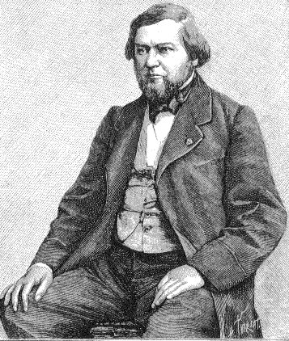
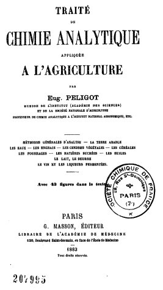
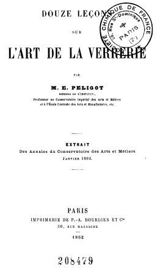
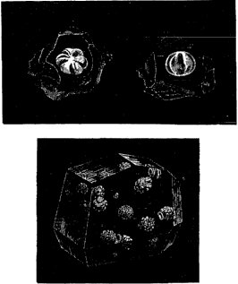
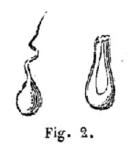
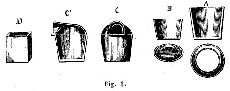
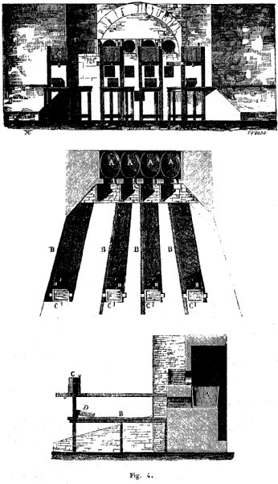
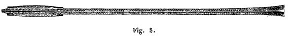
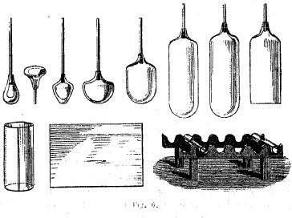
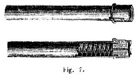
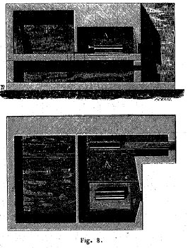
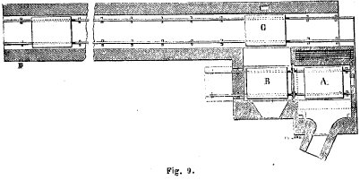
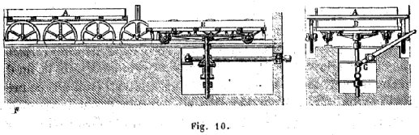
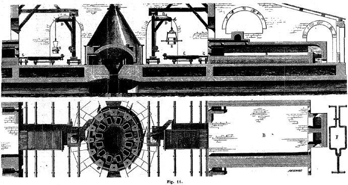
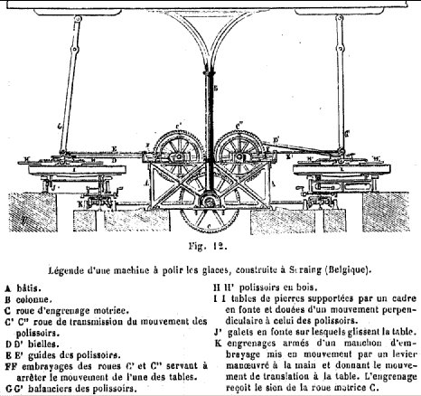
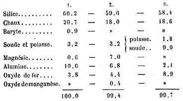
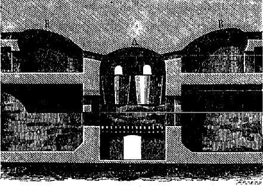
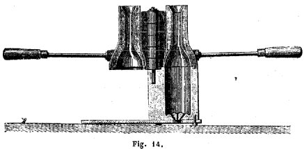
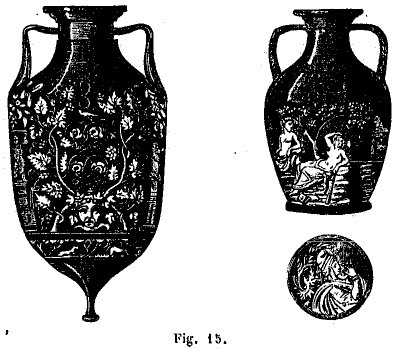
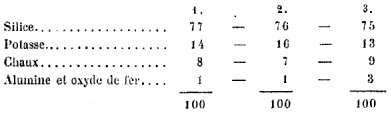
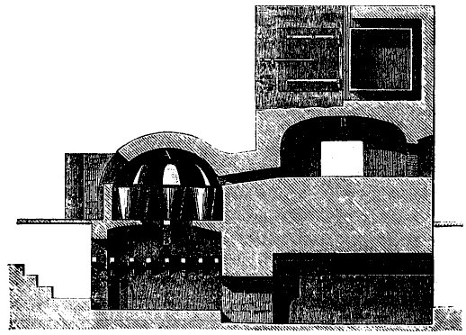
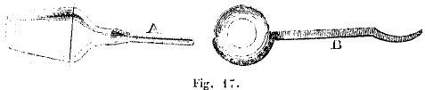
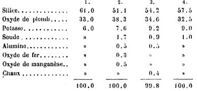
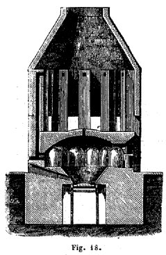
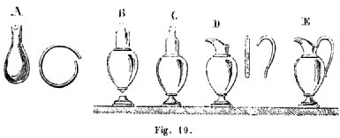
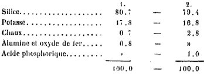
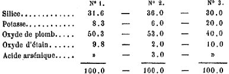
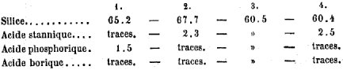
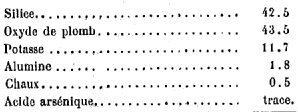
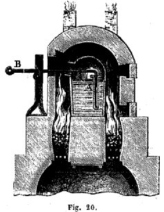
Noms cités
Fulcanelli · Paris · Jean · Atalanta · Saturne · Valentin · Basile · Canseliet · Geber · Paracelse · Artephius · Maier · France · Egypte